Domain 2: Implementation and Integration
What this domain asks you to do
The exam guide lists the tasks and skills below. Each task has its own section in this module. Each skill has its own heading in that section.
Task 2.1: Implement agentic AI solutions and tool integrations.
- Skill 2.1.1. Develop intelligent autonomous systems with appropriate memory and state management capabilities (for example, by using Strands Agents and AWS Agent Squad for multi-agent systems, MCP for agent-tool interactions).
- Skill 2.1.2. Create advanced problem-solving systems to give FMs the ability to break down and solve complex problems by following structured reasoning steps (for example, by using Step Functions to implement ReAct patterns and chain-of-thought reasoning approaches).
- Skill 2.1.3. Develop safeguarded AI workflows to ensure controlled FM behavior (for example, by using Step Functions to implement stopping conditions, Lambda functions to implement timeout mechanisms, IAM policies to enforce resource boundaries, circuit breakers to mitigate failures).
- Skill 2.1.4. Create sophisticated model coordination systems to optimize performance across multiple capabilities (for example, by using specialized FMs to perform complex tasks, custom aggregation logic for model ensembles, model selection frameworks).
- Skill 2.1.5. Develop collaborative AI systems to enhance FM capabilities with human expertise (for example, by using Step Functions to orchestrate review and approval processes, API Gateway to implement feedback collection mechanisms, human augmentation patterns).
- Skill 2.1.6. Implement intelligent tool integrations to extend FM capabilities and to ensure reliable tool operations (for example, by using the Strands API to implement custom behaviors, standardized function definitions, Lambda functions to implement error handling and parameter validation).
- Skill 2.1.7. Develop model extension frameworks to enhance FM capabilities (for example, by using Lambda functions to implement stateless MCP servers that provide lightweight tool access, Amazon ECS to implement MCP servers that provide complex tools, MCP client libraries to ensure consistent access patterns).
Task 2.2: Implement model deployment strategies.
- Skill 2.2.1. Deploy FMs based on specific application needs and performance requirements (for example, by using Lambda functions for on-demand invocation, Amazon Bedrock provisioned throughput configurations, SageMaker AI endpoints to implement hybrid solutions).
- Skill 2.2.2. Deploy FM solutions by addressing unique challenges of large language models (LLMs) that differ from traditional ML deployments (for example, by implementing container-based deployment patterns that are optimized for memory requirements, GPU utilization, and token processing capacity, by following specialized model loading strategies).
- Skill 2.2.3. Develop optimized FM deployment approaches to balance performance and resource requirements for GenAI workloads (for example, by selecting appropriate models, by using smaller pre-trained models for specific tasks, by using API-based model cascading to perform routine queries).
Task 2.3: Design and implement enterprise integration architectures.
- Skill 2.3.1. Create enterprise connectivity solutions to seamlessly incorporate FM capabilities into existing enterprise environments (for example, by using API-based integrations with legacy systems, event-driven architectures to implement loose coupling, data synchronization patterns).
- Skill 2.3.2. Develop integrated AI capabilities to enhance existing applications with GenAI functionality (for example, by using API Gateway to implement microservice integrations, Lambda functions for webhook handlers, Amazon EventBridge to implement event-driven integrations).
- Skill 2.3.3. Create secure access frameworks to ensure appropriate security controls (for example, by using identity federation between FM services and enterprise systems, role-based access control for model and data access, least privilege API access to FMs).
- Skill 2.3.4. Develop cross-environment AI solutions to ensure data compliance across jurisdictions while enabling FM access (for example, by using AWS Outposts for on-premises data integration, AWS Wavelength to perform edge deployments, secure routing between cloud and on-premises resources).
- Skill 2.3.5. Implement CI/CD pipelines and GenAI gateway architectures to implement secure and compliant consumption patterns in enterprise environments (for example, by using AWS CodePipeline, AWS CodeBuild, automated testing frameworks for continuous deployment and testing of GenAI components with security scans and rollback support, centralized abstraction layers, observability and control mechanisms).
Task 2.4: Implement FM API integrations.
- Skill 2.4.1. Create flexible model interaction systems (for example, by using Amazon Bedrock APIs to manage synchronous requests from various compute environments, language-specific AWS SDKs and Amazon SQS for asynchronous processing, API Gateway to provide custom API clients with request validation).
- Skill 2.4.2. Develop real-time AI interaction systems to provide immediate feedback from FM (for example, by using Amazon Bedrock streaming APIs for incremental response delivery, WebSockets or server-sent events to generate text in real time, API Gateway to implement chunked transfer encoding).
- Skill 2.4.3. Create resilient FM systems to ensure reliable operations (for example, by using the AWS SDK for exponential backoff, API Gateway to manage rate limiting, fallback mechanisms for graceful degradation, AWS X-Ray to provide observability across service boundaries).
- Skill 2.4.4. Develop intelligent model routing systems to optimize model selection (for example, by using application code to implement static routing configurations, Step Functions for dynamic content-based routing to specialized FMs, intelligent model routing based on metrics, API Gateway with request transformations for routing logic).
Task 2.5: Implement application integration patterns and development tools.
- Skill 2.5.1. Create FM API interfaces to address the specific requirements of GenAI workloads (for example, by using API Gateway to handle streaming responses, token limit management, retry strategies to handle model timeouts).
- Skill 2.5.2. Develop accessible AI interfaces to accelerate adoption and integration of FMs (for example, by using AWS Amplify to develop declarative UI components, OpenAPI specifications for API-first development approaches, Amazon Bedrock Prompt Flows for no-code workflow builders).
- Skill 2.5.3. Create business system enhancements (for example, by using Lambda functions to implement customer relationship management [CRM] enhancements, Step Functions to orchestrate document processing systems, Amazon Bedrock Data Automation to manage automated data processing workflows).
- Skill 2.5.4. Enhance developer productivity to accelerate development workflows for GenAI applications (for example, by using Amazon Q Developer to generate and refactor code, code suggestions for API assistance, AI component testing, performance optimization).
- Skill 2.5.5. Develop advanced GenAI applications to implement sophisticated AI capabilities (for example, by using Strands Agents and AWS Agent Squad for AWS native orchestration, Step Functions to orchestrate agent design patterns, Amazon Bedrock to manage prompt chaining patterns).
- Skill 2.5.6. Improve troubleshooting efficiency for FM applications (for example, by using CloudWatch Logs Insights to analyze prompts and responses, X-Ray to trace FM API calls, Amazon Q Developer to implement GenAI-specific error pattern recognition).
Source: https://docs.aws.amazon.com/aws-certification/latest/ai-professional-01/ai-professional-01-domain2.html
Task 2.1: Implement agentic AI solutions and tool integrations.
After this section, you can read a long agentic AI question and find who decides each step. You can name the state store for each fact, the control that stops a loop or a failed tool, and the protocol and host for each tool. You can also reject each wrong option with one reason tied to a constraint in the scenario. Task 2.1 has seven skills, and every skill and every named service or technique below has its own heading.
question"] -->|who decides| N2["Model or code decides the
step"] N2 -->|code decides| N3["Workflow or function"] N2 -->|model decides| N4["Agent loop with limits"] N4 -->|check state| N5["State store for each fact"] N4 -->|check control| N6["Stop control for loop or
failed tool"] N6 -->|check tools| N7["Protocol and host for each
tool"] N7 -->|reject options| N8["One reason tied to a
constraint"]
Figure: Work through the question from the decider to the state, the control, and the tool.
The deciding constraint
Start with one question: who decides the next step, the model or your code? If the model decides, you need an agent loop with limits and traces. If your code decides, you need a workflow, a flow, or a function. Most wrong options fail this first split before any service name matters.
tools"] -->|code decides the
next step| B["Workflow side"] A -->|model decides the
next step| C["Agent side"] B -->|long wait or human
reply| D["Step Functions callback"] B -->|short calls in fixed
order| E["Step Functions Express"] B -->|fixed chain of
prompts| F["Bedrock Flows"] C -->|one agent with many
tools| G["Strands Agents loop"] C -->|several specialists| H["Supervisor or Agent Squad"] C -->|tools shared by many
clients| I["MCP tools behind a gateway"]
Figure: The first split is who picks the next step, and the wait or sharing need picks the service.
Use signal words to move down each branch. Phrases such as "in this order", "every time", and "for audit" point to a workflow. Phrases such as "decide which tool", "any framework", and "remember across visits" point to an agent. Phrases such as "wait for a reviewer", "several days", and "reply from another system" point to a callback.
Rule: If you can draw every step before the request arrives, do not choose an agent.
Exam tip: Read the verb in the question. "Decide" and "choose" point to a model. "Route", "wait", and "run" usually point to a workflow or a function.
Skill 2.1.1: Develop autonomous systems with memory and state
This skill asks for systems that keep the right facts for the right length of time. It also names Strands Agents, AWS Agent Squad, and MCP for tool interactions. Memory and state are the parts that let a multi-turn agent keep its thread and recall a person later.
person"] N1 -->|documents| N4["Knowledge base is not
memory"] N2 -->|full transcript| N5["Cost and context grow each
turn"] N2 -->|short summary| N6["Summary plus needed
records"]
Figure: Each fact goes to the store that matches how long it must last and who owns it.
Strands Agents
Strands Agents is an open-source Python SDK from AWS for building single agents and multi-agent systems. Each agent runs a loop. The loop reads the input and context, selects a tool, runs it, and reads the result before it answers. The SDK is not tied to AWS, and it supports MCP and models outside Amazon Bedrock.
Strands fits a case where one agent needs its own tool loop. It also fits a case where a lead agent calls specialist agents as tools and then combines their answers. The loop belongs to the agent, so you still need your own limits on how many turns the agent may take. Iteration limits are Not in source for this section, so put a counter in your code if the loop must stop.
Rule: Choose Strands when one agent owns its tool loop, or when a lead agent calls specialists as tools.
Trap: Using Strands alone to send one message to one of several independent services. That routing job suits a classifier-based router such as Agent Squad.
Source: Sundog course extract, slide pages 235 to 237 (Strands Agents, built-in tools, agent loop).
AWS Agent Squad
AWS Agent Squad is an open-source framework for multi-agent workflows. It uses an intent classifier to route each request to the right agent. It can share conversation context across agents, and it supports Python and TypeScript. The course notes that it can integrate with Bedrock Agents.
Agent Squad fits a design where separate services or agents already exist. The classifier reads the request and picks one agent, so each service can stay independent. The course also warns that the framework was fragile when the lab was recorded, so test it before production use. Agent Squad routes between agents, but each chosen agent still runs its own tool loop.
Rule: Choose Agent Squad when a classifier must route each request to one of several independent agents.
Trap: Choosing Agent Squad to run tool calls inside one agent. The routing layer does not replace the tool loop of that agent.
Source: Sundog course extract, slide pages 239 and 254 (Agent Squad routing, context sharing, lab note).
MCP for agent-tool interactions
The Model Context Protocol is a standard for calls between an agent and its tools. Its data layer uses JSON-RPC 2.0. Local development can use the stdio transport, and shared services can use HTTP streaming. An MCP server can expose tools, resources, and prompts to any client that speaks the protocol.
MCP helps when several clients or frameworks must call the same tools through one contract. Each client needs only the protocol, not a custom adapter for each tool. The protocol does not add authorization or spending limits by itself. You still need gateway authorization, IAM, and code-level validation. Hosting choices for MCP servers appear under Skill 2.1.7.
Rule: Choose MCP when many clients or frameworks must call one shared set of tools.
Trap: Believing that a standard protocol makes a tool safe. Authorization and validation are separate controls.
Source: Sundog course extract, slide page 256 (MCP data layer, transports, tools resources prompts). Protocol version details: Not in source.
Memory and state management
Short-term memory holds the events of one session, such as chat turns and tool results. Long-term memory holds records extracted from past sessions, such as preferences, facts, and summaries. AgentCore Memory provides both parts as a managed service, and it can share memory stores across agents.
Keep the active troubleshooting or booking thread in session state. This state gives the next turn its context, and it ends with the session. Write facts that must return later into a long-term store scoped to one person. Bedrock Agents returns session state through the return-of-control loop, where your app sends results back with the same invocation ID and action group. Session attribute names are Not in source for this section.
Limit what goes back into the prompt. Passing every earlier turn into every call raises cost and context length, and nothing decides what to forget. A short summary of the thread, plus the records you need, is a better input. Retention periods for events are Not in source in the pages used here.
Rule: Keep active thread state in session state, and keep person facts in a scoped long-term store.
Trap: Sending the full transcript in every prompt to get memory. Cost and context grow with each turn, and the design has no retention rule.
Trap: Calling a knowledge base personal memory. It holds documents you load, not records about one customer that the agent updates.
Source: https://docs.aws.amazon.com/bedrock-agentcore/latest/devguide/what-is-bedrock-agentcore.html (Memory description). Source: https://docs.aws.amazon.com/bedrock/latest/userguide/agents-returncontrol.html (sessionState and invocation ID). Source: Sundog course extract, slide pages 234 and 243.
Skill 2.1.2: Create problem-solving systems with structured reasoning
This skill asks the model to break a hard problem into steps. The steps can run as a ReAct loop, where the model alternates reasoning with actions. They can also run as a chain of reasoning steps, where each step is checked before the next one starts. Step Functions is the named service for both patterns.
steps"] -->|reason then act| N2["ReAct loop"] N1 -->|check each step| N3["Chain of reasoning states"] N2 -->|counter each pass| N4["Step Functions loop"] N3 -->|validated output| N5["Next state uses checked
input"] N4 -->|answer or stop| N6["Workflow ends"]
Figure: A hard problem can run as a ReAct loop or as checked reasoning states in Step Functions.
ReAct pattern with Step Functions
ReAct alternates a reasoning step with an action step. The model reasons about the goal and proposes one action. Your code runs that action, and the observation returns to the model. The loop repeats until the model gives a final answer or the workflow stops it. The Sundog course shows this cycle as actions, reasoning, traces, and observations.
Step Functions gives the loop a shape you can inspect. A Task state calls the model through the optimized Bedrock integration. A Choice state reads the reply and decides whether the model asked for a tool. A Lambda task runs the tool, and a counter in the state data records each pass. The Step Functions InvokeModel integration accepts a body of up to 256 KiB, so keep long observations in Amazon S3 and pass a reference.
Figure: A ReAct loop in Step Functions, with a counter that ends the loop.
Rule: Use a Step Functions loop for ReAct when your code must own the counter, the tool call, and the stop path.
Trap: Letting the model decide when to stop. A loop without a counter can run until the cost limit or a timeout ends it.
Source: https://docs.aws.amazon.com/step-functions/latest/dg/connect-bedrock.html (InvokeModel Body up to 256 KiB, Input and Output S3 fields). Source: Sundog course extract, slide page 372 (ReAct patterns in Step Functions).
Chain-of-thought reasoning approaches
A chain-of-thought prompt tells the model to show intermediate steps before the final answer. In a workflow, each intermediate step can be its own state. The Sundog course recommends passing the validated output of each state into the next one, so the final decision uses checked inputs.
Split a decision into states when skipping one step would change the answer. A sensor-reading step, a calculation step, and a decision step fail in different ways. Separate states let you retry or log each one. One prompt that does all three tasks gives the model room to skip a step or invent a value, and no state can detect that.
Rule: Give each reasoning task its own state when a skipped step would change the final answer.
Trap: Asking one prompt to compute, check, and decide. The workflow cannot see which step failed.
Source: Sundog course extract, slide pages 372 and 288 (chain of thought in Step Functions, sequential prompts).
Skill 2.1.3: Safeguarded AI workflows with controlled behavior
This skill asks for workflows that bound what the model can do. The named controls are Step Functions stopping conditions, Lambda timeouts, IAM policies for resource boundaries, and circuit breakers.
reason"]
Figure: Each control in this skill limits one kind of failure.
Each control limits a different failure. Stopping conditions limit loops. Timeouts limit time. IAM limits access. Circuit breakers limit repeated calls to a failing dependency.
Step Functions stopping conditions
A stopping condition is a Choice state that routes to a Succeed state or a Fail state. A counter kept in the state data counts each loop. A Retry field retries a failing task with backoff, and a Catch field routes the error after retries end. Standard workflows run up to one year, and Express workflows run up to five minutes.
Build the guard into the graph, not into the prompt. The counter increments on every pass. A Choice state checks the counter and the tool result together. At the limit, the workflow goes to a Fail state that records the reason for the stop. This design is easy to audit because the stop path is visible in the state machine.
result"] C -->|counter under limit
and result open| D["Continue reasoning"] C -->|counter at limit| E["Fail state loop limit"] C -->|result says done| F["Succeed state"] A -->|error after retries| G["Catch routes to fallback"]
Figure: Stopping conditions combine a counter, a result check, and a Catch route.
Rule: Give every agent loop a counter, a maximum value, and a Fail or Succeed state.
Trap: Writing stop after three tries in the system prompt. A prompt is advice to the model, and the counter is the control.
Source: https://docs.aws.amazon.com/step-functions/latest/dg/concepts-standard-vs-express.html (duration limits). Source: https://docs.aws.amazon.com/step-functions/latest/dg/concepts-error-handling.html (Retry, Catch, and Fail behavior).
Lambda timeout mechanisms
The Lambda timeout default is 3 seconds. You can set it in steps of one second up to 900 seconds, which is 15 minutes. For Lambda Managed Instances, asynchronous and event source invocations allow up to 5,400 seconds. Newer runtimes report a function timeout to Step Functions as the Sandbox.Timedout error.
Set the Lambda timeout above the normal duration of the tool, but below the time you can afford to wait. The Lambda timeout protects one call. A Step Functions TimeoutSeconds value on the task protects the state, and a HeartbeatSeconds value protects a waiting callback. Use the error name in a Catch or Retry field so the workflow reacts to a timeout.
Rule: Set a Lambda timeout for each tool call, and a workflow timeout for each state that waits.
Trap: Raising the Lambda timeout to stop a repeating loop. The loop keeps calling the model and tools, so cost grows and the answer does not improve.
Source: https://docs.aws.amazon.com/lambda/latest/dg/configuration-timeout.html (default 3 seconds, maximum 900 seconds, 5,400 seconds for Managed Instances). Source: https://docs.aws.amazon.com/step-functions/latest/dg/concepts-error-handling.html (Sandbox.Timedout, States.Timeout).
IAM policies enforcing resource boundaries
An IAM policy can limit a role to one model ARN for the bedrock InvokeModel action. The Bedrock examples in the Step Functions guide show a policy that names a single foundation model. AWS advises against wildcards in these policies, and it advises scoping them as far as possible. Lambda VPC condition keys can allow or deny specific VPCs, subnets, and security groups when someone creates or changes a function.
IAM decides what the role may call. It does not decide what the model asks for. A role that can call every foundation model lets the model choose any of them if the code passes the choice through. Put model ARNs, table ARNs, and queue ARNs in the execution role. Keep the list of allowed actions short, and review it when a tool is added.
AgentCore Policy works with AgentCore Gateway. It intercepts each tool call before the tool runs, and it checks the call against rules written in a Cedar-compatible language. The rules can say which tools an agent may call and under which conditions.
requested| D["Access denied by IAM"] C -->|other table
requested| D A -->|tool call before it
runs| E["AgentCore Policy check"] E -->|rule fails| F["Call blocked before tool
runs"] E -->|rule passes| G["Tool runs"]
Figure: IAM limits resources, and AgentCore Policy limits individual tool calls.
Rule: Put resource limits in IAM, and put per-call rules in a policy check that the model cannot skip.
Trap: Granting a wildcard model permission and relying on the prompt to name the right model.
Source: https://docs.aws.amazon.com/step-functions/latest/dg/connect-bedrock.html (Bedrock IAM policy examples, wildcard advice). Source: https://docs.aws.amazon.com/lambda/latest/dg/configuration-vpc.html (VPC condition keys). Source: https://docs.aws.amazon.com/bedrock-agentcore/latest/devguide/what-is-bedrock-agentcore.html (Policy row). Source: Sundog course extract, slide page 248.
Circuit breakers
A circuit breaker stops a caller from repeating a call to a service that keeps failing. When the circuit is open, the caller gets an immediate failure. A trial call checks the callee again after a set time, and a success closes the circuit. The AWS prescriptive guidance describes this as a pattern for synchronous calls between services.
The AWS sample stores circuit status in a DynamoDB table. Each record has an expiry timestamp, and DynamoDB time to live removes expired records.
A workflow first reads the status. If the circuit is open, the workflow ends in a Fail state. If the circuit is closed, the workflow calls the dependency with exponential backoff. When retries end, the workflow writes an open record and exits. The guidance says the status store can be an in-memory store, such as ElastiCache, for better speed.
The official diagrams below show the closed path and the implementation. The first figure shows the workflow reading status before the call. The second figure shows how repeated failures open the circuit. Use this pattern when many executions call one failing dependency. A single execution with one fault needs only Retry and Catch.
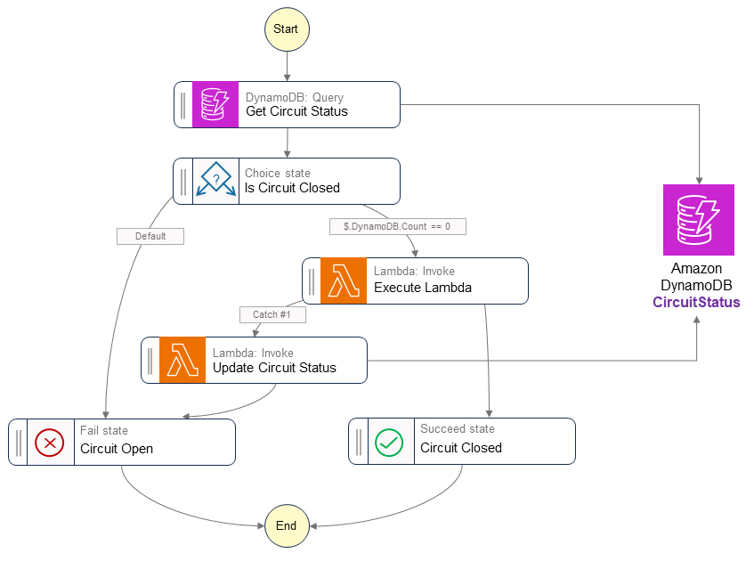
The state machine reads the circuit record first. An open record sends the execution to a Fail state at once, and no call reaches the failing service. A closed record sends the execution to the Lambda task, where Retry handles short faults. Only a failure that survives the retries writes the open record that protects the next execution.
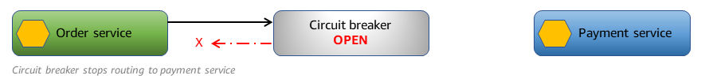
Rule: Use a circuit breaker when many executions call one failing dependency, and keep the status outside each execution.
Trap: Using Retry alone in every execution. Each new execution repeats the same failing calls, and the retry storm continues.
Source: https://docs.aws.amazon.com/prescriptive-guidance/latest/cloud-design-patterns/circuit-breaker.html (intent, open circuit, DynamoDB CircuitStatus table, TTL, sample with Express workflow). Source: https://docs.aws.amazon.com/step-functions/latest/dg/concepts-error-handling.html (Retry fields).
Skill 2.1.4: Create model coordination systems across capabilities
This skill asks for several models working on one task. The named techniques are specialized FMs for complex tasks, custom aggregation logic for ensembles, and model selection frameworks. The main design rule is that each model has a job that matches its cost and quality. Coordination code then combines or selects the outputs.
model"] N1 -->|several models| N5["Parallel state branches"] N5 -->|exact rule| N6["Lambda aggregator"]
Figure: Each step gets the least capable model that passes its quality bar, and ensembles use parallel branches.
Specialized FMs for complex tasks
Not every step needs the largest model. The Sundog course notes that summarization, compression, classification, and chunking do not need the largest model. The course suggests a smaller model for those steps and a larger model for the reasoning steps that need it.
Write down the quality bar for each step before you pick a model. A classification step may pass with a small model after a short test set. A medical or legal reasoning step may need a stronger model and a review step. Put the model ID in configuration, so you can change one step without redeploying the whole workflow. Pricing and quota figures are Not in source for this section.
Rule: Assign the least capable model that passes the quality test for each step.
Trap: Using one large model for every step because it is simpler to write. Cost rises, and simple steps gain no quality.
Source: Sundog course extract, slide page 288 (cost and capability tradeoff, smaller models for preprocessing).
Custom aggregation logic for model ensembles
A Parallel state runs several branches at the same time. Each branch can call a different model with the same input. The branches can have their own Retry and Catch fields. A Lambda task after the Parallel state then applies the aggregation rule. The Sundog course lists parallel requests as a way to make complex workflows respond faster.
The aggregation rule is code, so it can be tested. A weighted vote, a threshold on confidence scores, or a rule that prefers one model on a category are all simple to write. A model that combines the answers gives you a guess instead of a rule. Store each branch output with the final decision, so an auditor can see which model voted for what.
branches"] B --> C["Model A branch"] B --> D["Model B branch"] B --> E["Model C branch"] C --> F["Lambda aggregator"] D --> F E --> F F -->|score at or above
threshold| G["Accepted result"] F -->|score below
threshold| H["Manual review task"]
Figure: Three model branches feed one Lambda aggregator that applies the rule.
Rule: Use a Parallel state for independent model calls and a Lambda task for the exact combination rule.
Trap: Asking one model to merge the outputs of the others. The merge is then not testable, and small wording changes change the result.
Source: Sundog course extract, slide page 295 (parallel requests and Step Functions). Source: https://docs.aws.amazon.com/step-functions/latest/dg/concepts-error-handling.html (Catch on Parallel states).
Model selection frameworks
Amazon Bedrock intelligent prompt routing gives each request to one model from one model family through a single endpoint. It predicts the response quality of each model for the request. A fallback model acts as the baseline, and the response quality difference sets how much better another model must be before the router chooses it.
The router has limits. The page says it is optimized for English prompts. It also says the router cannot adjust routing decisions or responses from your application performance data.
The console flow asks for two models from the same family in a configured router. The router is useful for cost and quality tradeoffs inside one family. It is not the right tool for a rule that depends on your own review scores or on business state.
Rule: Use intelligent prompt routing for a quality and cost choice inside one model family, and use a Choice state for any rule based on your own data.
Trap: Choosing intelligent prompt routing when the route depends on human review scores or a case type. The router does not read those signals.
Source: https://docs.aws.amazon.com/bedrock/latest/userguide/prompt-routing.html (model family, fallback model, response quality difference, limitations, console two models).
Skill 2.1.5: Develop collaborative AI systems with human expertise
This skill asks for systems where people and models share the work. The named services are Step Functions for review and approval, API Gateway for feedback collection, and human augmentation patterns. The design uses a callback task to pause the workflow, an API to receive the human decision, and a store that keeps the feedback for later improvement.
Figure: Only flagged cases reach a reviewer, and the callback token resumes the paused workflow.
Step Functions review and approval
A Wait for a Callback task pauses a Standard workflow until the token returns with SendTaskSuccess or SendTaskFailure. The task reads the token from the Context object with the path $$.Task.Token. The wait can last until the one-year Standard workflow limit. The token is sent to your reviewer system in the task parameters.
HeartbeatSeconds sets how long the task may wait without a valid call. A heartbeat call through SendTaskHeartbeat resets that timer. If no valid call arrives in time, the task fails with the States.Timeout error name. A timed-out task receives a new random token, so the old token stops working.
The reviewer does not call Step Functions directly in most designs. A portal shows the draft and the decision buttons. The portal sends the decision to an API, and a Lambda function behind that API calls SendTaskSuccess or SendTaskFailure with the token. The workflow then continues with the decision as its input. Keep the token with the record of the case, so the decision can be matched to the task.
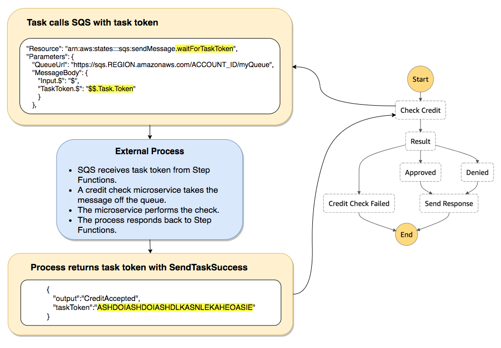
The diagram shows a Step Functions task that sends a message with the task token. An outside system reads the message, does its work, and returns the token with a result. The workflow stays paused and does not poll during that time. The same pattern works with a reviewer portal in place of the queue.
and token"] C --> D["Decision sent to API"] D --> E["Lambda calls
SendTaskSuccess"] B -->|no valid call before
heartbeat| F["States Timeout error path"] E --> G["Workflow resumes with
decision"]
Figure: The callback token links the portal decision to the paused execution.
Rule: Use a Standard callback task with HeartbeatSeconds for any approval that may take hours or days.
Trap: Using an Express workflow for an approval. Express does not support the callback pattern, and its duration limit is five minutes.
Trap: Sending the task token to a reviewer system in another AWS account that calls the callback API itself. Tokens must come from principals in the same account.
Source: https://docs.aws.amazon.com/step-functions/latest/dg/connect-to-resource.html (callback pattern, Context object, HeartbeatSeconds, States.Timeout, same-account rule). Source: https://docs.aws.amazon.com/step-functions/latest/dg/concepts-standard-vs-express.html (Express pattern support).
API Gateway feedback collection
API Gateway supports the Request Response pattern with Step Functions in both workflow types. It also supports the callback pattern in Standard workflows, according to the optimized integration table. An API route can therefore send a reviewer decision to the workflow and also store the decision.
Use API Gateway as the front door for ratings, comments, and corrections from users or reviewers. Validate the request shape at the gateway, then pass the body to a Lambda function. The Lambda function writes the record to a store that analysts can query later. Keep the feedback store separate from workflow state, because the Standard execution history is kept for 90 days.
Rule: Use API Gateway for feedback intake, and write feedback to a store built for analysis.
Trap: Storing feedback only as workflow output. The record expires with execution history, and it cannot be queried as a dataset.
Source: https://docs.aws.amazon.com/step-functions/latest/dg/connect-to-resource.html (API Gateway integration row). Source: https://docs.aws.amazon.com/step-functions/latest/dg/concepts-standard-vs-express.html (90-day history). Source: Sundog course extract, slide page 295 (human in the loop as an orchestration use).
Human augmentation patterns
Human augmentation keeps a person in a defined step of an AI process. The model drafts or classifies, a rule or score chooses the cases that need review, and the reviewer approves, edits, or rejects. The Sundog course lists model review and approval as a use of orchestration, and it lists human approval as a reason to choose Step Functions.
Send only the cases that need a person. A score threshold, a case type, or a safety flag can route the rest straight to the output. Record each reviewer edit as a pair with the model draft, so the pairs can improve prompts or training data later. The pattern works best when reviewers see the reason for the route, not only the draft.
Rule: Route only risky or low-confidence cases to a person, and record every human edit with the original draft.
Trap: Sending every model output to a reviewer. Review capacity becomes the bottleneck, and quality gains are small for routine cases.
Source: Sundog course extract, slide pages 372, 661 (model review and approval, human approval). Source: https://docs.aws.amazon.com/step-functions/latest/dg/connect-to-resource.html (callback pattern for people).
Skill 2.1.6: Implement intelligent tool integrations with reliable operations
This skill asks for tools that the model can call and that behave the same way each time. The named items are the Strands API for custom behaviors, standardized function definitions, and Lambda error handling and parameter validation. Each item makes the model's tool call easier to choose and safer to run. The network placement for action group Lambdas also belongs here.
definition"] N1 -->|spec exists| N3["OpenAPI schema definition"] N2 -->|name each function| N4["Typed parameters with
descriptions"] N3 -->|paths and methods| N4 N4 -->|same standard| N5["Easy to add new tools"]
Figure: Each tool gets one standard definition, either function details or an OpenAPI schema.
Strands API custom behaviors
In Strands, a Python function becomes a tool when a decorator marks it. You pass the tools to the Agent object as a list. The agent loop chooses among the tools and runs the chosen one. The course lists built-in tools for calculation, time, shell commands, and Python execution, along with custom tools written as functions.
Write a custom tool when the logic belongs in your code and the model must decide when to call it. Keep the function narrow, with typed inputs and a clear return value. Put the checks for required fields and allowed values inside the function. Hook names, callback names, and other custom behavior options in the SDK are Not in source for this section, so check the SDK reference before you rely on one.
Rule: Write one narrow Python tool for each business action, and validate its inputs inside the function.
Trap: Keeping the business rules only in the agent prompt. A prompt cannot enforce a rule, and the tool function can.
Source: Sundog course extract, slide pages 236 to 238 (tools, Agent constructor, decorator, agent loop). Hook and callback names: Not in source.
Standardized function definitions
A Bedrock action group defines tools in one of two ways. A function-details definition names each function and its parameters. An OpenAPI schema describes API operations with paths and methods. For each parameter, the definition gives the name, the type, a description, and whether it is required. The model reads these fields to choose the action and to fill in the values.
Use function details for a few named actions that share one executor. Use an OpenAPI schema when the API already has a specification. The Sundog course notes that a schema can be uploaded to Amazon S3 or edited in the console. Keep the same standard for every tool, so new tools are easy to add. AgentCore Gateway accepts OpenAPI, Smithy, and Lambda as tool input types, which gives you the same kind of contract for shared tools.
Rule: Use one standard definition for each tool, with a precise description and typed required parameters.
Trap: Writing vague or overlapping descriptions. The model then picks the wrong action, and no schema change can fix a wrong choice of meaning.
Source: https://docs.aws.amazon.com/bedrock/latest/userguide/agents-action-create.html (function details and OpenAPI definitions). Source: https://docs.aws.amazon.com/bedrock-agentcore/latest/devguide/gateway.html (OpenAPI, Smithy, Lambda tool input types). Source: Sundog course extract, slide pages 224 and 258.
Lambda error handling and parameter validation
Lambda calls can fail in several named ways. Step Functions names Lambda.ServiceException and Lambda.SdkClientException as transient service errors that production code should handle. Lambda.TooManyRequestsException appears when the account exceeds its maximum invocations. Sandbox.Timedout reports a timeout in newer runtimes.
In a Bedrock action group, the invocation inputs carry each parameter with its name, type, and value. Your handler receives the values the model filled in. Those values are not checked by Bedrock against your business data, so the handler must check them before any internal API call.
Validate required fields, types, ranges, and allowed values first. If a check fails, return a clear message the agent can use to ask the user again. If the internal API fails with a transient error, let the Step Functions Retry field handle the retry with backoff and jitter. Keep the error text short and free of stack traces, so the model can act on it.
Lambda"] --> B["Validate required fields
and types"] B -->|invalid| C["Return clear error text to
agent"] B -->|valid| D["Call internal API"] D -->|transient error| E["Retry with backoff in Step
Functions"] D -->|success| F["Return result"] E -->|still failing| G["Catch path or fallback"]
Figure: Validation runs before the call, and Retry and Catch handle failures after it.
Rule: Validate every model-filled parameter in the Lambda handler before it reaches an internal API.
Trap: Trusting a parameter because the model filled it in. A wrong account number or a wrong date passes the model, and the API accepts it.
Source: https://docs.aws.amazon.com/step-functions/latest/dg/concepts-error-handling.html (Lambda error names, Sandbox.Timedout, Lambda.TooManyRequestsException). Source: https://docs.aws.amazon.com/bedrock/latest/userguide/agents-returncontrol.html (invocation inputs with name, type, and value). Source: Sundog course extract, slide page 224.
Network placement for action group Lambdas
A Lambda function attached to a VPC can reach resources in that VPC. Without a path out, it cannot reach the public internet. The Lambda guide says a private subnet can reach the internet through a NAT gateway, and a public subnet alone does not give internet access. Attaching a function also requires EC2 network interface permissions in the execution role.
Lambda creates Hyperplane ENIs in the attached subnets. Lambda reclaims unused ENIs after 14 days of idle time, and the guide says a design should not rely on ENI persistence. Removing the VPC configuration can take up to 20 minutes to delete the ENI. Invoking the function does not require the network interface permissions, only creating the attachment does.
An action group Lambda that calls a private internal API stays in private subnets. It reaches AWS service APIs such as Amazon S3 or DynamoDB through VPC endpoints, or through a NAT gateway if you accept that path. The list of services that offer a private endpoint is Not in source for this section, so check the endpoint list for each service. An internet call, such as a third-party rating API, needs a NAT gateway route.
VPC| C["Internal service in
private subnet"] B -->|AWS service API call| D["VPC endpoint for that
service"] B -->|public internet call| E["NAT gateway in public
subnet"] E --> F["Internet gateway"]
Figure: Each outbound path from a VPC-attached action group Lambda needs a route or an endpoint.
Rule: Put an action group Lambda in private subnets, and give it a NAT route or endpoints for every outbound call it makes.
Trap: Attaching the function to a public subnet and expecting internet access. The public subnet placement does not create a path out.
Trap: Placing the Lambda in a VPC without endpoints or NAT, then expecting AWS service calls to work. Those calls need a route out.
Source: https://docs.aws.amazon.com/lambda/latest/dg/configuration-vpc.html (IAM permissions, Hyperplane ENIs, 14-day reclaim, 20-minute delete). Source: https://docs.aws.amazon.com/lambda/latest/dg/configuration-vpc-internet.html (NAT gateway route for private subnets, public subnet note).
Skill 2.1.7: Develop model extension frameworks with MCP servers
This skill asks for tools that extend the model through MCP servers. The named items are Lambda for stateless MCP servers, Amazon ECS for complex MCP servers, and MCP client libraries for consistent access. The hosting choice depends on state, runtime length, and memory. The client choice keeps every agent on one protocol path.
function"] N3 -->|no host management| N5["Fargate launch"] N3 -->|control instances| N6["EC2 launch type"] N1 -->|several clients| N7["Shared tools behind
Gateway"]
Figure: State, runtime length, and the number of clients decide where an MCP server runs.
Lambda stateless MCP servers
Lambda suits a stateless MCP server that answers short tool calls. The Lambda timeout tops out at 900 seconds, so each call must finish within that window. The Sundog course recommends Lambda for lightweight, stateless MCP access, and it notes that API Gateway can also present MCP endpoints.
A stateless tool keeps nothing between calls. Each request brings what it needs, and the server returns a result. Lookups, date checks, and simple calculations fit this pattern. If the tool needs state, store it in a table or a cache outside the function, and pass the key in each call. Plan the cold-start effect for a latency-sensitive call, and measure it in your own test environment because no figure is given in the source.
Rule: Host an MCP tool on Lambda when each call is short and needs no memory from earlier calls.
Trap: Keeping session state in Lambda memory and expecting the next call to see it. Store the state outside the function.
Source: https://docs.aws.amazon.com/lambda/latest/dg/configuration-timeout.html (900-second maximum). Source: Sundog course extract, slide page 257 (Lambda for stateless MCP, API Gateway MCP endpoints).
Amazon ECS MCP servers
Amazon ECS runs containers for MCP servers that need more than Lambda allows. The Sundog course says ECS or Fargate fits complex tools. With the EC2 launch type you provision and maintain the instances, and each instance runs the ECS agent. Fargate runs the containers without host management.
Use ECS when the server loads a large engine or model into memory, keeps session state, or runs long jobs. The container starts once and stays up, so the engine stays loaded between calls. Choose Fargate when the team wants no host management. Choose the EC2 launch type only when the team needs control of the instances. Step Functions can start ECS tasks with Run a Job or callback patterns in Standard workflows.
Rule: Host an MCP server on ECS or Fargate when it keeps state, loads a large engine, or runs longer than Lambda allows.
Trap: Choosing the EC2 launch type when the team wants no servers to manage. Fargate meets that goal with less work.
Source: Sundog course extract, slide pages 555 and 257 (ECS launch types, ECS and Fargate for complex tools). Source: https://docs.aws.amazon.com/step-functions/latest/dg/connect-to-resource.html (ECS integration patterns).
MCP client libraries
An MCP client library handles the protocol for the agent. It lists tools, calls them, and reads results over the transport the server uses. Any agent SDK that supports MCP can call an MCP server, and the Sundog course names Strands as one of them. The client library hides transport differences between stdio and HTTP.
Use one shared client library for every agent runtime. The same tool then appears the same way in each framework, and protocol fixes apply to all agents at once. Pin the library version and test it against each server before a release. Protocol version details for each library are Not in source for this section.
Rule: Use one shared MCP client library for every agent runtime, and pin its version.
Trap: Writing a custom JSON-RPC client in each agent. Each copy repeats the protocol work, and the copies drift apart over time.
Source: Sundog course extract, slide pages 256 and 257 (MCP client libraries, any agent SDK calls MCP servers). Protocol version details: Not in source.
AgentCore Gateway as the shared MCP entry point
AgentCore Gateway converts APIs, Lambda functions, and existing services into MCP-compatible tools. It can also connect to existing MCP servers and front HTTP services and other agents through passthrough targets. Gateway handles inbound and outbound authorization, and it supports semantic tool search when the tool list grows large.
The AWS overview places Gateway among the AgentCore services. Each service can be used alone, so a team can use Gateway without Runtime or Memory. The figure below shows the AgentCore service set. Gateway is the part that gives many clients one tool surface, and Policy is the part that checks each tool call.
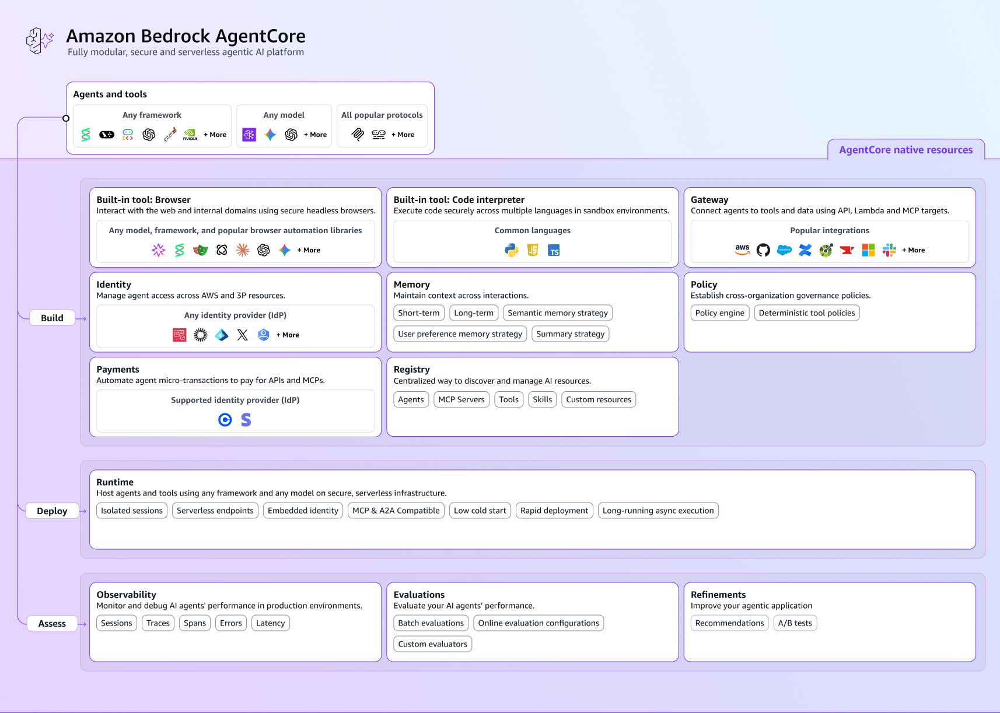
The figure lists the AgentCore components as separate services around the agent. Runtime hosts the agent code, and Memory keeps the session and long-term records. Gateway exposes tools to clients, and Identity and Policy control access and tool calls. Use only the services the design needs, and document which one answers each control question.
Rule: Put shared tools behind Gateway when several agents or frameworks need one MCP endpoint.
Trap: Assuming every Gateway target gives MCP aggregation. Passthrough targets proxy HTTP services, and target behavior details are Not in source here.
Source: https://docs.aws.amazon.com/bedrock-agentcore/latest/devguide/gateway.html (targets, inbound and outbound authorization, semantic tool selection, passthrough targets). Source: https://docs.aws.amazon.com/bedrock-agentcore/latest/devguide/what-is-bedrock-agentcore.html (core services table).
Network placement for MCP servers
An MCP server on ECS runs in the subnets you choose. A private MCP server has no public address, so only callers that can route to its subnet reach it. A Lambda MCP server attached to a VPC follows the same rules as any action group Lambda, including its need for a NAT route or endpoints for outbound calls.
Keep a server that holds customer or internal data in private subnets. Expose only the path that the agent runtime needs, such as a private route from the agent network to the server endpoint. Whether a gateway reaches a private target directly is Not in source for this section, so confirm it in the Gateway target documentation before you design around it. Do not give an MCP server a public address to make integration easier, because any caller that finds it can list and call its tools.
endpoint"] C --> D["MCP server on ECS in
private subnet"] C --> E["MCP server on Lambda in
private subnet"] D --> F["Internal data store"] E --> F
Figure: MCP servers sit in private subnets, and clients reach them through a private route.
Rule: Keep MCP servers that touch internal data in private subnets, and reach them through a private route only.
Trap: Giving an MCP server a public address for convenience. Any caller that finds the address can list and call its tools.
Source: https://docs.aws.amazon.com/lambda/latest/dg/configuration-vpc-internet.html (private subnet placement and NAT route). Private connectivity for Gateway targets: Not in source.
AgentCore Runtime network mode
AgentCore Runtime is a serverless host for agent code. The overview says it works with several frameworks and any foundation model, and it supports MCP and A2A protocols. The overview does not give the Runtime network mode names or endpoint list.
The Runtime networking page could not be read in this run, so the network mode names and the endpoint list are Not in source here. Answer any network mode question from the Runtime networking page, not from memory. The placement rule still applies: a runtime in private subnets reaches AWS services through a private path, and its internet calls need a NAT route.
Rule: Confirm the Runtime network mode and endpoint list in the Runtime networking page before you choose a mode.
Trap: Choosing a network mode from a guess about its name. A wrong mode name in a design is a wrong answer.
Source: https://docs.aws.amazon.com/bedrock-agentcore/latest/devguide/what-is-bedrock-agentcore.html (Runtime description). Network mode details: Not in source.
Confusable pairs in scope
Each pair below uses one decision tree, three comparison rows, one question to ask, and one trap. Read the question first, and then choose the branch that matches the constraint in the scenario.
first"] -->|the question| N2["Scan the decision tree"] N2 -->|matches constraint| N3["Choose that branch"] N3 -->|compare rows| N4["Purpose input and effect"] N4 -->|avoid the trap| N5["Reject the trap answer"]
Figure: Each pair is read from the question to the branch, then checked against the comparison rows.
Pair 1: Strands Agents versus AWS Agent Squad
design"] -->|one agent runs its
own tools| B["Strands Agents loop"] A -->|a router picks one
agent per request| C["Agent Squad classifier"] B -->|lead agent calls
specialists| D["Agents as tools"] C -->|independent services
stay separate| E["Routed reply from one
agent"]
Figure: The first split is whether one agent owns the tools or a router chooses among agents.
- Purpose: Strands runs the tool loop of an agent. Agent Squad routes a request to one of several agents.
- Input: Strands takes a prompt and a list of tools. Agent Squad takes a request and a classifier with agent descriptions.
- Output or effect: Strands returns one agent answer after its tool calls. Agent Squad returns the reply of the chosen agent.
Question to ask: Does one agent need many tools, or does each request need a different independent agent?
Trap: Picking Agent Squad because the design has many tools. Tool choice inside one agent still belongs to the agent loop.
Pair 2: Step Functions Standard versus Express
pause"] -->|wait over five
minutes or callback| B["Standard workflow"] A -->|short burst of
idempotent work| C["Express workflow"] B -->|history kept for 90
days| D["Approval and audit steps"] C -->|at-least-once or
at-most-once| E["Request Response calls
only"]
Figure: Duration and the callback need decide the workflow type before cost does.
- Purpose: Standard runs long, auditable, exactly-once workflows. Express runs short, high-volume workflows.
- Input: Both take a state machine definition and an execution input.
- Output or effect: Standard keeps execution history for up to 90 days. Express does not keep history in Step Functions, so logging goes to CloudWatch Logs.
Question to ask: Does any step wait longer than five minutes, or wait for a reply that uses a token?
Trap: Keeping an approval in Express and polling for the result. The polling adds state and cost that Standard avoids.
Pair 3: Callback token versus run-a-job versus polling
outside system| B["Wait for callback token"] A -->|AWS service job
reports status| C["Run a job sync pattern"] A -->|no reply channel
exists| D["Polling loop with a timer"] B -->|SendTaskSuccess
returns token| E["Workflow resumes"] D -->|checks repeat and
cost grows| F["Replace with callback if
possible"]
Figure: The party that sends the reply decides the pattern.
- Purpose: The callback waits for an outside reply. Run a job waits for an AWS service job to finish. Polling checks a status again and again.
- Input: The callback takes task parameters and a token from the Context object. Run a job takes the job parameters and the service resource.
- Output or effect: The callback continues on SendTaskSuccess, SendTaskFailure, or a heartbeat timeout. Run a job continues when the job completes.
Question to ask: Who sends the reply, a person or outside system, or an AWS job that the service can monitor?
Trap: Using run a job for a reviewer. A reviewer is not a service job, so the pattern never sees a completion.
Pair 4: Lambda MCP server versus ECS MCP server
15 minutes| B["Lambda MCP server"] A -->|large engine or kept
state| C["ECS or Fargate MCP server"] B -->|each call starts
fresh| D["Store any state in a table"] C -->|container keeps
process running| E["Long jobs and warm memory"]
Figure: State and runtime length choose the host for an MCP server.
- Purpose: Lambda hosts short stateless tool calls. ECS or Fargate hosts long-running or stateful tool servers.
- Input: Lambda takes one invocation per call. ECS takes a container image and a service definition.
- Output or effect: Lambda returns a result per call and keeps no state. ECS keeps the process running between calls.
Question to ask: Does the tool need memory or a loaded engine from one call to the next?
Trap: Placing a stateful engine on Lambda because Lambda is simpler. The engine reloads on each cold start, and no state survives between calls.
Pair 5: Session state versus long-term memory versus knowledge base
session only| B["Session state or events"] A -->|needed in a later
session| C["Long-term memory record"] A -->|shared reference
document| D["Knowledge base content"] C -->|scoped to one person| E["Person specific record"] B -->|session ends| F["Not kept for later visits"]
Figure: The lifespan and owner of each fact decide where it is stored.
- Purpose: Session state keeps the active thread. Long-term memory keeps person facts across sessions. A knowledge base keeps reference content for retrieval.
- Input: Session state takes events from the current session. Long-term memory takes extracted records. A knowledge base takes the documents you load.
- Output or effect: Session state gives the next turn its context. Long-term memory returns recalled records for a person. A knowledge base returns passages for a query.
Question to ask: Should this fact still matter next month, and does it belong to one person?
Trap: Storing a traveler preference in a knowledge base and calling it memory. Retrieval does not keep a per-person record that the agent updates.
Pair 6: Retry versus circuit breaker
short fault| B["Retry with backoff"] A -->|dependency fails for
many executions| C["Circuit breaker state"] B -->|still failing after
attempts| D["Catch to fallback"] C -->|open circuit| E["Immediate fail for new
executions"] C -->|trial call succeeds| F["Circuit closes again"]
Figure: Retry limits one execution, and the circuit breaker limits every execution.
- Purpose: Retry handles a short fault inside one execution. A circuit breaker stops repeated calls across executions.
- Input: Retry takes error names, interval, attempts, and backoff. A circuit breaker takes a shared status record with an expiry time.
- Output or effect: Retry ends with success or with the Catch route. A circuit breaker returns an immediate failure while the circuit is open.
Question to ask: Will the next new request also fail, so that sending it wastes calls?
Trap: Setting a high retry count on every execution during an outage. The calls multiply across executions, and the dependency stays down longer.
Read a long question: three worked scenarios
Each scenario below is written for practice. The bold words are the constraints that decide the design. Each wrong option gets one reason that names the constraint it breaks.
constraint words"] -->|find bold words| N2["Name the deciding
constraint"] N2 -->|breaks it| N3["Reject with one reason"] N2 -->|meets it| N4["Keep the option"] N4 -->|breaks nothing| N5["Answer"]
Figure: Each option is kept or rejected against the bold constraints, with one reason for each rejection.
Scenario 1: approval that waits several days
A grant office runs an assistant that drafts funding letters. A program officer must sign off each draft, and the officer works in a separate AWS account. Sign-off can take several days, and the orchestrator must not poll for it. If no answer arrives within ten days, the workflow must stop on its own.
- Constraint words: several days, must not poll, separate account, ten days.
- Express workflow with a callback: fails. Express does not support the callback pattern, and it stops at five minutes.
- Scheduled Lambda that checks a table: fails. It polls, which the design forbids.
- Sending the task token to the officer account so it calls the callback API: fails. Tokens work only from principals in the workflow account.
- An agent loop that waits inside the model call: fails. A managed loop does not own a multi-day external wait.
Rule: Answer. A Standard workflow with a callback task and HeartbeatSeconds set. The officer portal calls an API in the workflow account, and a Lambda function there calls SendTaskSuccess or SendTaskFailure.
Scenario 2: fixed chain and memory across visits
A dental clinic runs a booking assistant. The assistant must remember each patient's preferred hygienist across visits. A nightly summary must run four fixed steps in a set sequence, and staff must change the step wording without a developer.
- Constraint words: across visits, four fixed steps, change wording without a developer.
- Session state only: fails. Session state ends with the session, so the preference does not return at the next visit.
- Step Functions with prompts written in code: fails. Staff cannot change the wording without a developer.
- An agent that chooses its own steps: fails. The steps must be fixed, and the model would choose different ones.
- Bedrock Flows for the nightly chain and a long-term memory record per patient: fits all three constraints.
Rule: Answer. Bedrock Flows for the fixed chain, and a long-term memory record scoped to each patient for the preference.
Scenario 3: shared tools and a failing partner API
A logistics team runs a tracking agent that calls a partner rating API through a Lambda function. During a partner outage, every new request retries the same failing call, and the team pays for thousands of attempts. Two agent frameworks must use the same tools, and the team wants failures to stop fast while the partner is down.
- Constraint words: two frameworks, same tools, fail fast while down.
- Retry with no shared state: fails. Each new execution repeats the failing calls.
- Raising the Lambda timeout: fails. It makes each failing call wait longer and does not stop new calls.
- A separate Lambda adapter in each framework: fails. Each copy repeats the protocol work, and the tool contract drifts.
- A circuit breaker with a shared status record, plus a shared MCP tool behind Gateway: fits both constraints.
Rule: Answer. Step Functions with a circuit record in DynamoDB and Retry with backoff, and the rating tool exposed as one shared MCP tool.
Distractor patterns seen in the tests
Wrong options in this task follow a few patterns. Learn the pattern, and you can reject an option even when you do not know every detail of the service. Each pattern below names the reason it fails.
service"] -->|still check| N2["Does it meet the wait"] N2 -->|no| N3["Reject with the named
pattern"] N2 -->|yes| N4["Does it meet the rule"] N4 -->|prompt only| N5["Add IAM counter or policy
check"] N4 -->|yes| N6["Keep the option"]
Figure: A right service name is not enough, because the wait and the rule must also hold.
- Right service for one part. The option names Lambda for a step, but the question needs coordination of waits and retries. Lambda runs code and does not coordinate a multi-day wait.
- Agent for fixed steps. The option lets the model choose a process that always runs in one order. The result adds variation and cost that the rules did not ask for.
- Workflow for open choices. The option draws every branch in advance for a task where the next step depends on new results.
- Prompt as a control. The option stops a behavior by writing an instruction. A prompt is advice, so a rule that must hold needs IAM, a counter, or a policy check.
- Express for a long wait. The option uses Express for an approval or a wait longer than five minutes. Express does not support the callback pattern.
- Polling for a reply. The option checks a table on a timer to see whether a person replied. A callback token is the native pattern.
- Token across accounts. The option sends a callback token to another account that calls the callback API. Tokens work only from the same account.
- Memory as a bigger prompt. The option stores every transcript and sends it back each turn. Cost and context grow, and no retention rule exists.
- Timeout as a loop fix. The option raises a timeout to stop a repeating loop. The loop continues, so a counter and a fail path are needed.
- Retry without limits. The option retries a failing call with no jitter, no maximum, and no shared state. A shared outage then gets worse.
- Model merges the answers. The option asks a model to combine ensemble outputs. The merge rule cannot be tested exactly.
- Public address for a private tool. The option exposes an MCP server to the internet for easy access. Any caller that finds it can list and call its tools.
Trap: Accepting an option only because it names the right service. Check whether it also meets the wait, the owner of each step, and the rule that must hold.
Drill
Each prompt has one answer on the next line. Cover the answer and try first.
Figure: Each drill prompt is answered first, then checked against the rule line below it.
1. A tool call must run in your code, and your code must send the result back to the model. Which pattern fits?
Rule: Your code owns the tool loop, so use the Converse tool loop and return each result.
2. A reviewer may reply after five days, and no AWS job runs in the meantime. Which Step Functions pattern and type fit?
Rule: A Standard workflow that pauses on a token, with HeartbeatSeconds set.
3. A payment step must never run twice when a retry happens. Which workflow type fits?
Rule: Standard, because it runs each step exactly once.
4. Forty thousand files each need one model call, and only failed files should run again. Which Step Functions feature fits?
Rule: A Distributed Map in a Standard workflow, with one child run per item.
5. A tool call needs a fifteen-minute job. What is the design fix?
Rule: Split the job into steps under Step Functions, because a Lambda timeout cannot exceed 900 seconds.
6. An agent loop never ends after tool errors. Which control stops it?
Rule: A counter in the state data with a Choice state that routes to a Fail state.
7. Every new execution calls a partner API that is down. Which control stops the calls?
Rule: A circuit breaker with a shared status record and an expiry time.
8. A model must choose among three specialist tools that each need one parameter. Which definition style fits?
Rule: Function details that name each function and its required parameters.
9. Three agent frameworks must call the same retrieval tools through one standard interface. Which service fits?
Rule: AgentCore Gateway with MCP-compatible targets for the shared tools.
10. A tool call that moves restricted cargo must be refused, even when the model asks for it. Which control fits?
Rule: AgentCore Policy, which checks each tool call before the tool runs.
11. A clinic assistant must recall each patient's preferences at the next visit. Which store fits?
Rule: AgentCore Memory long-term records, scoped to the patient.
12. Independent microservices each handle one domain, and a classifier must route each request to one of them. Which framework fits?
Rule: AWS Agent Squad with a classifier, because it routes between separate agents.
Sources
Source: Each URL below was fetched with WebFetch for this section. Facts that depend on a page are cited in the section that uses it. Sundog slide pages are cited by number.
Figure: Facts cite the page they depend on, and the URL list collects those web pages.
- https://docs.aws.amazon.com/step-functions/latest/dg/connect-to-resource.html
- https://docs.aws.amazon.com/step-functions/latest/dg/concepts-standard-vs-express.html
- https://docs.aws.amazon.com/step-functions/latest/dg/concepts-error-handling.html
- https://docs.aws.amazon.com/step-functions/latest/dg/connect-bedrock.html
- https://docs.aws.amazon.com/bedrock/latest/userguide/agents-returncontrol.html
- https://docs.aws.amazon.com/bedrock/latest/userguide/agents-multi-agent-collaboration.html
- https://docs.aws.amazon.com/bedrock/latest/userguide/agents-action-create.html
- https://docs.aws.amazon.com/bedrock/latest/userguide/prompt-routing.html
- https://docs.aws.amazon.com/bedrock-agentcore/latest/devguide/what-is-bedrock-agentcore.html
- https://docs.aws.amazon.com/bedrock-agentcore/latest/devguide/gateway.html
- https://docs.aws.amazon.com/lambda/latest/dg/configuration-vpc.html
- https://docs.aws.amazon.com/lambda/latest/dg/configuration-vpc-internet.html
- https://docs.aws.amazon.com/lambda/latest/dg/configuration-timeout.html
- https://docs.aws.amazon.com/prescriptive-guidance/latest/cloud-design-patterns/circuit-breaker.html
Source: Sundog course extract for this task, file m4-agents-orchestration-sundog.txt, slide pages cited in each section.
Task 2.2: Implement model deployment strategies
After this section you can match a generative AI workload to the right Bedrock or SageMaker AI deployment option. You can place that option on a private network, and you can explain how the model loads and how many tokens and GPUs it needs. You will also reject each wrong option with one reason. Long scenarios usually name the request pattern or one hard limit in a single sentence. Find that sentence first.
option"] N2 -->|private network| N3["Private path for each call"] N2 -->|tokens and GPUs| N4["Model load and token
capacity"] N2 -->|wrong option| N5["Reject with one reason"]
Figure: One workload maps to one deployment option, checked for network placement and capacity.
Skill map for this section
- Skill 2.2.1: deploy FMs for application needs and performance. Covers Lambda on-demand calls, Provisioned Throughput, SageMaker AI endpoints for hybrid designs, and private placement.
- Skill 2.2.2: deploy LLM workloads that differ from classic ML. Covers container patterns for memory, GPU use, and token capacity, plus model loading strategies.
- Skill 2.2.3: balance performance and resources. Covers model selection, smaller pre-trained models, distillation, and API-based cascading.
resources"] N2 -->|hosting options| N5["Lambda and Provisioned
Throughput"] N3 -->|memory and GPU| N6["Container and loading
choices"] N4 -->|smallest model| N7["Selection distillation and
cascading"]
Figure: Each skill in this section covers a different part of the deployment choice.
Source: task list supplied for Task 2.2. Service facts are sourced under each heading.
The deciding constraint
Start from the scenario, not from the options. A deployment question turns on one of three things. The first is how the caller waits for the answer. The second is the shape of the traffic. The third is who owns the model weights. The company history and team size usually do not decide the answer.
Callers that wait on the same connection point to synchronous serving. Large payloads, long jobs, and queued work point to asynchronous or batch designs. Steady volume with a hard latency target points to reserved capacity. Traffic that spans several models points to a routing layer.
constraint first"] -->|Caller waits for
reply now| B["Real-time or Bedrock on
demand"] A -->|Payload large or job
slow| C["Asynchronous endpoint"] A -->|One full dataset on
a schedule| D["Batch transform job"] A -->|Steady volume with
tight SLA| E["Provisioned Throughput"] A -->|Traffic spans models
and providers| F["Routing layer with cascade"]
Figure: The caller pattern and the volume pattern decide the first branch.
Exam tip: Words such as interactive, live, and chat point to synchronous serving. Words such as nightly, backlog, and whole archive point to batch or queued work.
Signal words for deployment choices
- Rule: Signal "per request, no capacity planning" means on-demand Bedrock invocation.
- Rule: Signal "guaranteed throughput" or "model units" means Provisioned Throughput.
- Rule: Signal "payload in S3, result later" means an asynchronous endpoint.
- Rule: Signal "scheduled full dataset, no endpoint" means batch transform.
- Rule: Signal "idle most hours, cold start accepted" means a serverless endpoint.
- Rule: Signal "several models in one family" means intelligent prompt routing.
- Rule: Signal "we own the weights, Bedrock API wanted" means Custom Model Import.
invocation"] N1 -->|model units| N3["Provisioned Throughput"] N1 -->|payload in S3| N4["Asynchronous endpoint"] N1 -->|scheduled dataset| N5["Batch transform"] N1 -->|idle most hours| N6["Serverless endpoint"] N1 -->|own the weights| N7["Custom Model Import"]
Figure: Each signal phrase in the question points to one deployment option.
Skill 2.2.1: Deploy FMs for application needs and performance
This skill asks you to pick a deployment shape from the application need. The need includes response time, payload size, traffic shape, and cost. It also includes where the model runs. A hybrid design uses more than one backend, so one facade hides the choice from the client.
choice"] N1 -->|where model runs| N4["Hybrid design with
backends"] N4 -->|one facade| N5["Client sees one contract"]
Figure: The application need sets the deployment shape, and a hybrid design hides its backends behind one facade.
AWS Lambda for on-demand invocation
Fact: Lambda runs code only when an event calls it. In a model deployment, a function usually wraps one Bedrock call or one SageMaker AI runtime call. You pay for the compute that runs. Lambda does not host the model itself, so the function stays small.
managed model"] -->|within 15 minutes| N2["Lambda wraps one managed
call"] N2 -->|payload fits 6 MB| N3["Synchronous call returns
reply"] N1 -->|large model inside| N4["Fails on memory and time"] N2 -->|work must queue| N5["Pair with SQS queue"] N3 -->|public front door| N6["Pair with API Gateway"]
Figure: Lambda fits short managed calls, and a large model loaded inside it fails on memory and time.
Fact: The Lambda quotas page lists a 15 minute maximum function timeout. Memory runs from 128 MB to 10,240 MB. A synchronous request and response each carry up to 6 MB. The default concurrent executions quota is 1,000 per Region, and you can request more.
Rule: Use Lambda for sporadic calls to a managed model when each call ends within 15 minutes and fits the 6 MB synchronous payload.
Trap: A design that loads a large model inside a Lambda function fails on memory and time. The model must sit behind a managed endpoint or a managed model API.
Lambda pairs with API Gateway as the public HTTPS front door. It pairs with SQS when work must queue for a slow model. Compare Lambda cost with a reserved design using your own call volumes. Break-even points are Not in source for this section. Each synchronous execution environment serves up to 10 requests per second, so a burst needs enough concurrency.
Source: https://docs.aws.amazon.com/lambda/latest/dg/gettingstarted-limits.html and Sundog course slide 301 for Lambda-driven endpoint initialization.
Amazon Bedrock Provisioned Throughput configurations
Fact: Provisioned Throughput reserves model capacity at a fixed hourly cost. Throughput means the number and rate of inputs and outputs a model processes. You buy model units. Each model unit gives a set input and output token rate per minute across all requests.
Figure: The commitment term decides when a Provisioned Throughput purchase can end and what it costs per hour.
Rule: Choose Provisioned Throughput when load is steady and high enough that reserved capacity costs less than on-demand calls at the same latency target.
Trap: A no-commitment Provisioned Throughput still bills every hour until you delete it. An idle reservation costs money even when no request arrives.
Model units and token rates
The token rate for one model unit depends on the model and the Region. The per-unit values are Not in source for this section. Ask your AWS account team for current values. Size the purchase from peak input and output tokens per minute in your own logs, not from the average.
Commitment terms
- No commitment: you can delete the Provisioned Throughput at any time.
- One month: you cannot delete it until the one month term ends.
- Six months: you cannot delete it until the six month term ends.
A longer term lowers the hourly price. Billing continues until you delete the Provisioned Throughput. The fixed term is the main cost decision, so choose it with the expected load curve.
Custom models: Provisioned Throughput or a custom model deployment
Fact: To invoke a customized Bedrock model, you buy Provisioned Throughput, or you create a custom model deployment for on-demand inference. A custom model deployment gives on-demand inference for some base models, such as Amazon Nova Lite and Nova Micro. Check the supported base model list and Regions on the deployment page.
Trap: A customized model does not run on demand. A design that calls a customized model with on-demand invocation fails before any cost comparison starts.
Cross-Region profiles do not get reserved capacity
Fact: The cross-Region inference page states that inference profiles do not currently support Provisioned Throughput. Purchase Provisioned Throughput for the model itself when reserved capacity is the goal.
Trap: A cross-Region inference profile does not add reserved capacity. An option that buys Provisioned Throughput for a profile and calls it guaranteed capacity is wrong.
Source: https://docs.aws.amazon.com/bedrock/latest/userguide/prov-throughput.html and https://docs.aws.amazon.com/bedrock/latest/userguide/cross-region-inference.html.
SageMaker AI endpoints for hybrid solutions
A hybrid solution uses Bedrock for managed models and a SageMaker AI endpoint for a custom or self-hosted model. One facade gives the application a single contract. The facade handles authentication, route selection, logging, and retries. The SageMaker AI endpoint does not format requests for the client, so the router must do it.
mobile"] -->|HTTPS request| B["API Gateway facade"] B -->|Route by task type| C["Lambda router"] C -->|Managed model call| D["Bedrock runtime Converse"] C -->|Custom model call| E["SageMaker runtime endpoint"]
Figure: One facade routes each request to a managed model or a custom endpoint.
The router reads the task type, the latency need, and the cost limit. It then builds the request shape for the chosen backend. Bedrock uses its own runtime operations. A SageMaker AI endpoint expects the payload that its container defines. Keep the response shape the same for the client, so the portal does not change when a backend changes.
Fact: Sundog slide 78 states that SageMaker AI does not format input for the app. The app or the router owns the request shape for each endpoint.
Source: Sundog course slide 78 and https://docs.aws.amazon.com/sagemaker/latest/dg/realtime-endpoints.html and https://docs.aws.amazon.com/bedrock/latest/userguide/vpc-interface-endpoints.html
Real-time endpoints
Fact: A real-time endpoint is a fully managed hosting option for low latency, interactive requests. It supports autoscaling. Enhanced metrics show individual instances and containers. The documentation also covers production variants, instance pools, and adapter inference components.
answer"] -->|model fits| N2["Real time endpoint"] N2 -->|autoscaling| N3["Capacity follows traffic"] N2 -->|always running| N4["Idle hours still cost
money"] N4 -->|unless| N5["Autoscaling or another
endpoint type"]
Figure: A real time endpoint suits waiting callers, and running instances cost money unless capacity drops.
Fact: The Sundog extract says SageMaker AI can deploy models up to 500 GB, and that the container health check and download timeouts must allow the load. The AWS payload and response timeout values for real-time requests are Not in source for this section, because the quotas page was truncated.
Rule: Choose a real-time endpoint when the caller waits for each answer and the model fits on the instance type you can afford.
Trap: Real-time endpoints bill for running instances. Idle hours cost money unless autoscaling or another endpoint type reduces the capacity.
Large models often need GPU instances such as the ml.p4d class. Small named entity models can run on CPU instances such as the ml.c5 class. The Sundog extract gives these examples, and the instance families are a sizing hint, not a rule. Test the instance with a real model load before you commit.
Source: https://docs.aws.amazon.com/sagemaker/latest/dg/realtime-endpoints.html and Sundog course slide 300.
Asynchronous endpoints
Fact: The asynchronous inference page states a payload limit of up to 1 GB, a processing time of up to one hour, and near real-time latency. The endpoint can scale its instance count to zero when no requests wait. You pay only while requests process.
Figure: The payload and the result both travel through S3, and the endpoint reads requests when capacity is free.
Fact: The caller places the payload in Amazon S3 and sends a pointer with the InvokeEndpointAsync request. SageMaker AI returns an identifier and an output location. The result lands in S3. Optional SNS notices report success or error.
Fact: The endpoint configuration holds an AsyncInferenceConfig object. That object makes the endpoint accept asynchronous calls only.
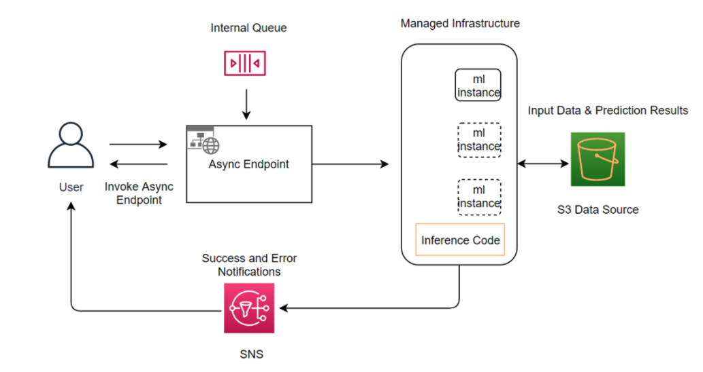
The diagram shows the caller writing the payload to S3 first. The request then enters a queue inside SageMaker AI. The endpoint reads the request when capacity is free and writes the result back to S3. The caller can check the output location or receive an SNS notice.
Rule: Choose asynchronous when payloads are large, processing takes minutes, and the caller can read the result from S3 later.
Trap: An asynchronous endpoint is not a live chat API. The answer does not return on the same connection, so an interactive assistant needs real-time or Bedrock.
Trap: An asynchronous endpoint cannot also serve synchronous calls. The AsyncInferenceConfig object makes it asynchronous only.
Source: https://docs.aws.amazon.com/sagemaker/latest/dg/async-inference.html and Sundog course slide 319 on queues for latency-tolerant work.
Serverless endpoints
Fact: A serverless endpoint provisions compute on demand and scales down to zero when idle. You do not choose an instance type. It suits workloads with idle periods between traffic spurts that accept cold starts.
Figure: A serverless endpoint fits idle gaps, but a GPU or VPC need points to a real time endpoint.
Fact: Memory options are 1024, 2048, 3072, 4096, 5120, and 6144 MB. Each endpoint gets 5 GB of ephemeral disk. A container image can reach 10 GB. Each endpoint can set a maximum concurrency up to 200. The regional total is 500 or 1000 concurrent invocations, depending on the Region.
Fact: Provisioned Concurrency keeps a serverless endpoint warm, so cold starts drop for the allocated amount. The OverheadLatency metric shows the time to launch new compute.
Fact: Serverless endpoints do not support GPUs, VPC configuration, network isolation, data capture, multiple production variants, Model Monitor, inference pipelines, or multi-model endpoints. A real-time endpoint cannot convert to serverless. A serverless endpoint can convert to real-time, and that change cannot be rolled back.
| Feature | Real-time endpoint | Serverless endpoint |
|---|---|---|
| GPU instances | Yes | No |
| VPC configuration | Yes | No |
| Network isolation | Yes | No |
| Multi-model endpoints | Yes | No |
| Multiple production variants | Yes | No |
| Model Monitor | Yes | No |
Figure: Feature matrix from the serverless feature exclusion list.
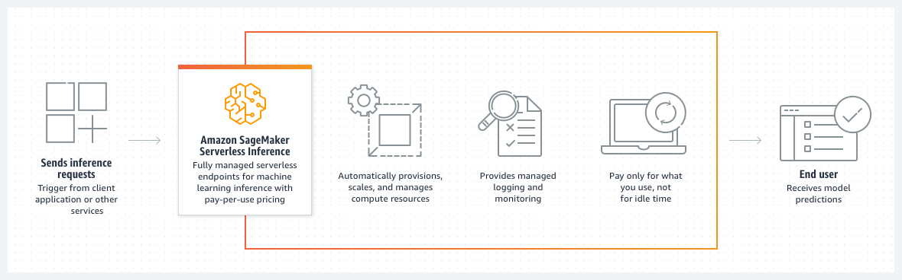
The diagram shows requests arriving at the endpoint while SageMaker AI provisions compute behind it. Compute scales up for traffic and back down when the requests stop. The first requests after an idle period can wait while new compute starts. Provisioned Concurrency removes most of that wait for a set amount of traffic.
Rule: Choose serverless for light or unpredictable CPU traffic that accepts cold starts and does not need a VPC configuration or a GPU.
Trap: Serverless does not mean unlimited. It has no GPU, no VPC configuration, and a concurrency ceiling. A GPU model in a serverless option fails the hardware rule.
Source: https://docs.aws.amazon.com/sagemaker/latest/dg/serverless-endpoints.html
Batch transform jobs
Fact: Batch transform runs inference over a dataset in S3. It does not need a persistent endpoint. Use it to preprocess data, to score large datasets, and to test model variants with a validation set.
file"] N2 -->|no endpoint kept| N4["No persistent endpoint"] N2 -->|per input file| N5["Output file with same name"] N1 -->|single input file| N6["Extra instances sit idle"]
Figure: Batch transform reads files from S3 with no endpoint, and one input file uses only one instance.
Fact: Set SplitType to Line to create mini-batches inside an input file. MaxPayloadInMB must not exceed 100 MB. When you also set MaxConcurrentTransforms, the product with MaxPayloadInMB must not exceed 100 MB.
Fact: Each input file produces one output file with the same name and an .out extension. The output keeps the order of the input records. A single input file goes to one instance, so extra instances sit idle.
Fact: Batch transform does not support CSV input with embedded newline characters.
Rule: Choose batch transform when one full dataset must run once or on a schedule and no endpoint must stay up.
Trap: Batch transform does not answer a live user. A design that needs an answer per request needs an endpoint of some kind.
Source: https://docs.aws.amazon.com/sagemaker/latest/dg/batch-transform.html
Multi-model endpoints
Fact: A multi-model endpoint hosts several models behind one endpoint. The Sundog extract shows several models sharing one endpoint. Each endpoint keeps its own deployment guardrails, VPC settings, and network isolation settings.
VPC"] N2 -->|no own policy| N4["No scaling policy per
model"] N4 -->|needs own scaling| N5["Inference components"]
Figure: Many small models can share one endpoint, but separate scaling needs inference components.
Rule: Choose a multi-model endpoint when many similar, small models share one traffic pattern and cost matters more than per-model scaling.
Trap: A multi-model endpoint does not give each model its own scaling policy. The test scenario that asks for separate scaling needs inference components.
Source: Sundog course slide 317 and https://docs.aws.amazon.com/sagemaker/latest/dg/deployment-guardrails.html for guardrail scope.
Inference components
Fact: Inference components host models of different sizes on one real-time endpoint. The Sundog extract states that each model gets its own scaling policy. Compute settings and copy counts per component are Not in source for this section.
Figure: Inference components give each model its own scaling, but they keep instances running.
Rule: Choose inference components when models of different sizes must share one real-time endpoint and each must scale on its own.
Trap: Inference components do not solve a serverless need. They run on real-time endpoints, so they keep instances running.
Source: Sundog course slide 317 and https://docs.aws.amazon.com/sagemaker/latest/dg/realtime-endpoints.html
Deployment guardrails
Fact: Deployment guardrails control the shift of traffic from the old model version to the new version. The options are blue/green with all-at-once shifting, canary shifting, and linear shifting. Rolling deployments also exist. Each mode uses a baking period with CloudWatch alarms that can trigger automatic rollback.
Figure: A canary shift tests a small share of traffic, and CloudWatch alarms can trigger rollback.
Fact: The guardrail pages state that guardrails apply only to asynchronous and real-time endpoint types. The exclusions page lists features that block their use.
Fact: Sundog slides 313 and 314 describe shadow tests. A shadow variant receives a copy of the traffic and is compared with production. You watch the results and decide when to promote the new variant.
Rule: Use canary shifting when a small share of live traffic can test a new model before a full switch.
Trap: A serverless endpoint is outside the guardrail scope. An option that uses all-at-once guardrails on serverless fails the deployment rule.
Source: https://docs.aws.amazon.com/sagemaker/latest/dg/deployment-guardrails.html and Sundog course slides 313 and 314.
Private network placement for hybrid endpoints
A private design keeps model traffic inside the VPC. No subnet has an internet route. The design still needs an answer for three flows. The first is runtime calls to Bedrock or SageMaker AI. The second is artifact reads from S3. The third is any download from outside AWS. Each flow has its own network component.
internet route"] -->|Calls SageMaker
runtime| B["SageMaker runtime
interface endpoint"] A -->|Calls Bedrock
runtime| C["Bedrock runtime interface
endpoint"] A -->|Reads weights in S3| D["S3 gateway endpoint"] A -->|Downloads from
outside AWS| E["NAT gateway in public
subnet"] A -->|Container must make
no calls| F["Network isolation setting"]
Figure: Each outside flow needs its own private path, or no path at all.
VPC configuration for model containers
Fact: The VpcConfig parameter on CreateModel names the subnets and security groups. SageMaker AI creates network interfaces in those subnets and attaches them to the model containers. You must name at least two subnets in different Availability Zones.
resources"] N1 -->|at least two| N4["Subnets in different zones"] N1 -->|needs EC2 actions| N5["Network interface
permissions"]
Figure: A VpcConfig names subnets and creates network interfaces, and the IAM policy must grant EC2 actions.
Fact: A custom IAM policy must grant the EC2 network interface actions, such as create and describe network interface. The managed SageMakerFullAccess policy already includes them.
Rule: Attach a VPC configuration to any endpoint that must reach resources in private subnets.
SageMaker AI runtime interface endpoint
Fact: The SageMaker API and SageMaker AI Runtime both support interface VPC endpoints powered by AWS PrivateLink. The interface endpoint places elastic network interfaces with private IP addresses in your subnets. Traffic from the application stays on the AWS network.
private IPs"] N2 -->|PrivateLink| N3["SageMaker AI Runtime"] N2 -->|private DNS on| N4["Standard hostname resolves"] N2 -->|private DNS off| N5["Client passes endpoint URL"]
Figure: The runtime interface endpoint keeps calls on AWS, and private DNS decides how the client finds it.
Fact: With private DNS enabled, the default runtime hostname resolves to the VPC endpoint, so the code does not change. Without private DNS, you pass the endpoint URL to the client. The runtime endpoint must be active in the Availability Zone of the client for DNS to resolve.
Fact: You can attach a VPC endpoint policy. The documented example limits invocation to one named endpoint. VPC endpoint policies are not supported for the FIPS runtime endpoint for InvokeEndpoint.

The diagram shows an application in a private subnet calling the runtime through an interface endpoint. The traffic does not use an internet gateway. The runtime then reaches the SageMaker AI endpoint over the AWS network. The application code stays the same when private DNS resolves the standard hostname.
Bedrock runtime interface endpoint
Fact: Amazon Bedrock supports interface endpoints for the control plane, the runtime, Mantle, build-time agents, and agent runtime. The service names are bedrock, bedrock-runtime, bedrock-mantle, bedrock-agent, and bedrock-agent-runtime. Each name maps to a different API surface.
endpoint"] N1 -->|call an agent| N4["Agent runtime interface
endpoint"] N2 -->|private DNS on| N5["Standard Regional name
works"] N2 -->|private DNS off| N6["Client sets endpoint URL"]
Figure: Each Bedrock API surface has its own interface endpoint, and private DNS decides the client setup.
Fact: The default endpoint policy allows full access through the endpoint. A custom endpoint policy can restrict the principals, actions, and resources. The documentation example allows InvokeModel and InvokeModelWithResponseStream.
Fact: With private DNS enabled, Bedrock calls use the standard Regional names, for example bedrock-runtime followed by the Region and amazonaws.com, and need no code change. Without private DNS, the client must set the endpoint URL to the VPC endpoint address.
Rule: Create the bedrock-runtime interface endpoint for model invocation and Converse. Add bedrock-agent-runtime only when the design invokes agents.
Trap: The control plane endpoint does not carry inference calls. An option that creates only the bedrock endpoint leaves runtime calls on the public path.

The diagram shows an instance in a VPC with no public IP address reaching an AWS service. The interface endpoint sits in a subnet and carries the traffic over PrivateLink. The same pattern applies to bedrock-runtime and to the SageMaker AI runtime. The gateway and NAT paths are not needed for those calls.
S3 gateway endpoint for model artifacts
Fact: A model container with no internet access cannot read S3 buckets without an S3 endpoint. Create a gateway endpoint for S3 and attach it to the route tables of the subnets. AWS adds a route that sends S3 traffic to the endpoint.
endpoint"] N2 -->|policies restrict| N5["Restrict requests from VPC"] N1 -->|runtime calls| N6["Interface endpoint needed"]
Figure: A gateway endpoint carries S3 traffic only, so runtime calls still need interface endpoints.
Fact: The S3 endpoint policy and a bucket policy can both restrict access to requests from your VPC. Keep the default DNS settings, so standard S3 URLs resolve through the route table.
Rule: Use an S3 gateway endpoint for weights that already sit in your bucket. Use it in the same design as the runtime interface endpoint.
Trap: A gateway endpoint does not carry Bedrock or SageMaker AI runtime calls. Those calls need interface endpoints.
NAT gateway for model downloads
Fact: If a model needs a service without an interface endpoint, or a resource outside AWS, create a NAT gateway. Then configure security groups to allow the outbound connections. This applies to public model hubs that host weights outside AWS.
call"] -->|no endpoint| N2["Create NAT gateway"] N2 -->|security groups| N3["Outbound connection
allowed"] N1 -->|public hub| N4["Download leaves AWS"] N1 -->|copy to S3 first| N5["Avoid NAT path"] N1 -->|isolation on| N6["NAT does not help"]
Figure: A NAT gateway serves only downloads that leave AWS, and network isolation blocks the container from calls.
Rule: Use a NAT gateway only for a download that must leave AWS. Copy approved weights to S3 first when the design must avoid NAT.
Trap: A NAT gateway does not help a container that has network isolation enabled. Isolation blocks the container from making network calls.
Network isolation
Fact: Without network isolation, a SageMaker AI container can reach the internet by default. With network isolation on, the container cannot communicate with resources in your VPC or make network calls. The VPC configuration still governs the platform download and upload work.
default"] N1 -->|isolation on| N3["No VPC or network calls"] N3 -->|download and upload| N4["VPC configuration still
applies"] N1 -->|needs runtime call| N5["Runtime call moves to
router"]
Figure: Network isolation blocks all container network calls, so runtime calls belong in the router.
Fact: Network isolation is set on the model. The exact container file rules and the download path details are Not in source for this section.
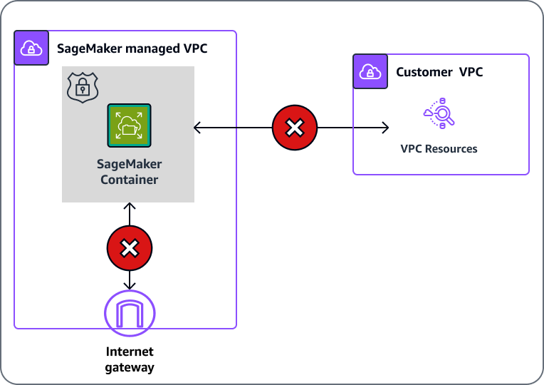
The diagram shows the model container with no path to the VPC or the internet. Isolation keeps the container from making calls, even when the platform can download artifacts. A design that needs the container to call a runtime endpoint cannot use isolation for that container. Put the runtime call in the router instead, and keep the model container closed.
Rule: Use network isolation when the container must make no calls at all, and put every outside dependency in the model artifact or a separate service.
Trap: A VPC configuration alone does not stop the container from reaching the internet. Only the isolation setting blocks those calls.
Skill 2.2.2: Deploy LLM workloads that differ from traditional ML
A classic model is small enough for one CPU or one GPU and returns a short label or number. An LLM has large weights, token-based output, and streaming responses. The deployment must fit the weights in GPU memory and keep the GPU busy. It must also cap the token budget per request. The container and the loading path decide whether those three limits hold.
Figure: An LLM deployment has three limits, and the container and loading path decide whether each holds.
Container-based deployment patterns for LLMs
A container for an LLM bundles the serving engine, the model loader, and the request handler. Each container choice sets memory use, GPU use, and token throughput. The same model can run well in one container and poorly in another. Choose the container that matches the hardware and the traffic.
model"] -->|large model| N2["LLM serving container"] N1 -->|small model| N3["Classic inference
container"] N2 -->|memory and GPU| N4["Check hardware fit"] N2 -->|token throughput| N5["Check traffic fit"] N4 -->|matches both| N6["Container chosen"] N5 -->|matches both| N6
Figure: An LLM serving container suits a large model, and each choice is checked for hardware and traffic fit.
Rule: Choose a container built for LLM serving when the model is large, and use a classic inference container only for small models.
Trap: A container that works for a 300 MB classifier does not prove that a 70 billion parameter model fits on the same instance.
Memory planning
Fact: Weight memory is the parameter count times the bytes per parameter. A 70 billion parameter model stored at 16 bits needs about 140 GB for weights alone. Runtime buffers and cache need more room. The buffer size is Not in source for this section.
Fact: Quantization stores weights at fewer bits. Moving from 16 bits to 8 bits roughly halves the weight memory. Quality can drop, so test the quantized model on your own prompts.
Rule: Size the instance for weights plus runtime buffers, then add margin for the batch size you plan to serve.
Trap: More CPU cores on the instance do not add GPU memory. A memory-bound model needs a larger GPU or a quantized copy.
GPU utilization
A GPU sits idle between requests. Batching requests together fills the GPU and raises throughput. Interactive traffic cannot wait long for a batch, so the serving engine must balance queue delay against throughput. Offline or asynchronous work can use larger batches.
Rule: Use large batches for asynchronous and batch work, and cap queue delay for interactive work.
Trap: Adding instances to a low-utilization endpoint does not fix a batch setting that is too small. Raise the batching capacity first.
The exact container settings for batch size and queue depth are Not in source for this section. The rule above still holds across serving engines. Measure GPU utilization in CloudWatch before and after a change.
Token processing capacity
An LLM capacity limit is measured in tokens, not requests. A request with a long prompt uses more capacity than a short one. Output tokens also take time to generate. The deployment must cap input size and output size for each route.
Fact: Bedrock Provisioned Throughput sets capacity in input and output tokens per minute. The exact token rate per model unit is Not in source for this section.
Fact: Bedrock offers a CountTokens operation that estimates the input tokens for a request to a specific model. Its model support and quotas are Not in source for this section.
Rule: Count input tokens on the planned request, then trim low-value context before you invoke the model.
Trap: Counting tokens does not limit output. Set an output cap on the request and measure the actual usage in responses.
Large Model Inference containers
Fact: Large Model Inference containers are AWS-provided containers for hosting large language models on SageMaker AI. The AWS page for them links to the Deep Java Library documentation for configuration details. The container offers LLM serving features for example GPU use, model load, and fast token output.
container"] N1 -->|general image| N3["No sharding for large
model"] N2 -->|one managed image| N4["Batching and token
streaming"] N2 -->|config details| N5["Deep Java Library docs"]
Figure: A general image cannot shard a large model, while the LLM container covers sharding and batching in one image.
Fact: The Sundog extract names DJL Serving as an Amazon-created model server and lists Triton, TorchServe, and Deep Learning Containers as other options. Exact configuration keys are Not in source for this section.
Rule: Choose a Large Model Inference container when the endpoint must host an LLM with sharding, batching, and token streaming in one managed image.
Exam tip: When two models share one container, read whether a setting applies to one model or to the whole container. A global setting changes both models.
Trap: A general-purpose inference image does not handle sharding for a model that does not fit on one GPU. The design needs the LLM serving path.
Source: https://docs.aws.amazon.com/sagemaker/latest/dg/large-model-inference-container-docs.html and Sundog course slides 317 and 318.
Tensor parallelism and model sharding
Fact: The Sundog extract says third-party parallelization is supported for large models, and names Triton, FasterTransformer, and DeepSpeed. Large models can be split across GPUs by tensor or model parallel methods.
whole model"]
Figure: A model that fits one instance is sharded inside it, and a larger model needs a multi instance design.
Fact: The Sundog extract describes UltraServers that connect instances with a low latency, high bandwidth accelerator link. These serve large model work that needs more memory than one instance holds.
Rule: If the model fits across the GPUs of one instance, shard it inside that instance. If it needs more memory than one instance holds, use a multi-instance design.
Trap: Adding replicas of a model that does not fit on one GPU does not help. Each replica still needs the whole model in memory.
The degree of sharding must match the GPUs the container can use. Setting a degree above the GPU count fails at load time. The exact keys are Not in source for this section. Confirm them in the container documentation before you write a deployment.
Specialized model loading strategies
Loading is often the slow part of an LLM endpoint. The container must download weights, load them into GPU memory, and pass a health check before it accepts traffic. A slow load can fail the health check even when the model is fine. Plan the loading path with the same care as the serving path.
timeouts"]
Figure: A slow load can fail the health check, so the timeouts are raised before the instance type is changed.
Uncompressed artifacts and the model directory
Some model artifacts are uncompressed directories rather than one archive. The container must read the directory from the path that SageMaker AI mounts. The exact mount path and the variables that point to it are Not in source for this section. Check the container documentation for the path your image uses.
Trap: An option that points the model source at the wrong directory fails at load time even when the weights are correct.
Download and health check timeouts
Fact: The Sundog extract says to adjust the container health check and download timeout quotas for large models, so the endpoint has time to download and load the resources. The parameter names and maximum values are Not in source for this section.
Rule: For a large model, raise the download timeout and the health check timeout before you blame the instance type.
Trap: A larger instance does not fix a health check that fails during a long download. Adjust the timeout that the load uses.
On-demand loading from S3
Fact: The Sundog extract describes endpoint lifecycle management with Lambda. Lambda can initialize an endpoint on demand and load the artifacts from S3 when processing starts.
This pattern trades a slower first request for lower idle cost. It suits a model used a few times per day. It does not suit a model with a strict first-response target.
Trap: On-demand loading does not meet a strict first-response target. Keep the endpoint warm with a real-time or Provisioned Concurrency design.
Source: Sundog course slides 300 and 301, and https://docs.aws.amazon.com/sagemaker/latest/dg/serverless-endpoints.html for the cold start metric.
Token budgets with output caps
Each route in the facade should carry a token budget. The budget has an input limit and an output limit. The router uses the input count to choose a model. The output cap protects the cost and the latency of each call.
Figure: Each route carries a token budget, and one global output cap would hide a short answer route.
Rule: Set an output cap on every route and record the input and output token counts from each response.
Trap: A single global output cap for all routes hides a short-answer route that needs a tighter cap.
Skill 2.2.3: Balance performance and resource requirements
This skill asks you to meet a quality target at the lowest resource cost. The cheapest model fails on hard prompts. The largest model wastes money on easy prompts. The design sends each request to the smallest model that still meets the target. It measures the result and adjusts.
prompts"] N1 -->|smallest passing| N4["Smallest model that meets
target"] N4 -->|measure and adjust| N5["Measure the result and
adjust"]
Figure: The design sends each request to the smallest model that still meets the target, then measures and adjusts.
Selecting an appropriate model
Start with four numbers. These are the quality bar, the latency target, the cost per request, and the data residency rule. Test each candidate on a sample of your own prompts. Score the answers with the same rubric for every candidate.
model"] N2 -->|latency missed| N5["Reject candidate"] N3 -->|cost too high| N5
Figure: Each candidate is checked against the four numbers, and the smallest model that passes is chosen.
Rule: Choose the smallest model that meets the quality bar on your sample at the latency target.
Trap: The largest model is not the default answer. A scenario with a tight cost limit and a simple task usually points to a smaller model.
Model evaluation tools and playground comparison features exist in the Bedrock and SageMaker AI consoles. The exact feature names and limits are Not in source for this section. Use them if the exam scenario names them.
Smaller pre-trained models for specific tasks
Fact: The Sundog extract says a smaller model can be trained from a larger one, which lowers cost per call. Smaller models suit a narrow task such as classification, extraction, or routing.
traffic"]
Figure: A smaller model starts a narrow task, and it moves up in size only when evaluation shows a quality gap.
Rule: Start a narrow task with a smaller pre-trained model. Move up in size only when the evaluation shows a quality gap.
Trap: A smaller model fails on long multi-step reasoning. Test it on the hardest prompts in your sample before you route all traffic to it.
Source: Sundog course slide 319 on model compression and smaller models.
Model distillation
Fact: Distillation trains a smaller student model to copy the behavior of a larger teacher model on one task. The student learns from the teacher answers. Sundog slide 319 lists distillation with quantization and pruning as compression methods.
task"] N2 -->|not better| N4["Cannot beat the teacher"] N2 -->|cheaper per call| N5["Lower cost per call"]
Figure: A student model learns from teacher answers and copies the teacher on one task at lower cost.
Fact: Bedrock supports model distillation with a teacher and a student model. Prompts can drive the teacher answers. Dataset sizes and job limits are Not in source for this section.
Rule: Choose distillation when a large model is accurate on one narrow task and a smaller model must match it at lower cost per call.
Trap: Distillation does not make the student better than the teacher. It copies the teacher on the task it learned.
Source: Sundog course slide 319. The Bedrock distillation page was not fetched, so its limits are Not in source.
Quantization
Fact: Quantization lowers the numeric precision of weights, for example from 16 bits to 8 bits. Weight memory falls in proportion to the bit count. Quantization does not change the model architecture or the training data.
accepted"] N2 -->|no new behavior| N6["Wrong task stays wrong"]
Figure: Quantization cuts weight memory at the same architecture, but it cannot give the model a new behavior.
Rule: Use quantization when the memory of the model is the blocker and a small quality drop is acceptable after testing.
Trap: Quantization does not transfer a behavior the model lacks. A model that answers the wrong task after quantization still answers the wrong task.
Amazon Bedrock intelligent prompt routing
Fact: Intelligent prompt routing gives one serverless endpoint that routes each request between models of one family. It predicts the response quality of each model for each prompt. It then picks the model that gives the best quality for the cost.
family"] -->|predicts quality| N2["Router picks a model"] N2 -->|quality for cost| N3["Model chosen"] N2 -->|fallback baseline| N4["Quality difference sets
the switch"] N2 -->|one family only| N5["No routing across families"] N5 -->|mixed families| N6["Application router needed"]
Figure: The managed router chooses within one family, and a mix of families needs application routing.
Fact: A configured router uses a fallback model and a response quality difference setting. The router switches to another model only when its predicted quality beats the fallback by more than that difference.
Fact: The documented limits are these. The feature is optimized for English prompts. It cannot use application performance data to change routing. The console requires exactly two models in one family for a configured router. The default routers use models from the Amazon Nova and Meta Llama families, depending on the Region.
Rule: Choose intelligent prompt routing when the candidate models are in one family and the goal is quality and cost without custom logic.
Trap: Intelligent prompt routing does not route across families. A design that mixes a Nova model and a non-family model needs an application router.
Source: https://docs.aws.amazon.com/bedrock/latest/userguide/prompt-routing.html
API-based model cascading
A cascade sends each request to a cheap model first. It escalates to a larger model only when the first answer fails a check. The check can be a validation rule, a confidence signal, or a classifier. The cascade lives in the router, so the client does not see the steps.
Figure: A cheap model answers first, and a larger model is called only when the check fails.
API Gateway can enforce the request shape and throttle the callers. Lambda runs the cascade logic and calls each model in turn. Keep the escalation rule in configuration, so the team can change it without a deployment. Log which tier answered each request.
Rule: Cascade from the cheap model to the large model only on a failed check, and log the tier that answered.
Trap: A cascade that sends every hard prompt to two models doubles the cost on those prompts. Set a limit on escalations per request.
Source: https://docs.aws.amazon.com/lambda/latest/dg/gettingstarted-limits.html for the Lambda limits used in the router. The cascade design itself is an application pattern.
Latency optimized inference
Fact: Latency optimized inference is a per-request setting on Bedrock runtime calls. The setting is performanceConfig with a latency value of standard or optimized. The default is standard.
route"] N2 -->|standard default| N4["Default route"] N3 -->|quota runs out| N5["Served at standard latency"]
Figure: The latency value is set per request, and an optimized request falls back to standard when the quota runs out.
Fact: The feature is in preview and subject to change. When the latency quota for a model runs out, Bedrock serves the request at standard latency and bills the standard rate. The served latency appears in the response and in CloudTrail logs.
Fact: The documented models include Amazon Nova Pro, Anthropic Claude 3.5 Haiku, and Meta Llama 3.1 70B and 405B. The Regions and cross-Region profiles are listed on the page.
Rule: Set latency to optimized on the premium route only. Leave the default on routes that do not need the faster response.
Trap: Latency optimized inference is not a model change. It does not need fine-tuning, and it does not add a fleet to manage.
Source: https://docs.aws.amazon.com/bedrock/latest/userguide/latency-optimized-inference.html
Cross-Region inference profiles
Fact: A geographic cross-Region inference profile routes requests only among Regions in one geography, such as the US or the EU. A global profile routes across all supported commercial Regions. Data stays on the AWS network in both cases.
geography"]
Figure: A geographic profile keeps routing inside one geography, and a global profile does not.
Fact: The cross-Region page says there is no added routing cost, and the price follows the Region from which you call the profile. The comparison table lists about 10 percent savings for global profiles against geographic ones.
Fact: Inference profiles do not currently support Provisioned Throughput. CloudTrail records the inference Region in the additional event data.
Rule: Choose a geographic profile when residency rules limit where prompts are processed. Choose a global profile when cost matters more than geography.
Trap: A global profile does not keep prompts in one geography. An option that claims residency with a global profile fails the residency rule.
Source: https://docs.aws.amazon.com/bedrock/latest/userguide/cross-region-inference.html
X versus Y: confusable pairs in scope
Each pair below has a decision tree, a three-row comparison, one question to ask, and the trap that catches most readers. Read the question first. Then pick the row the scenario needs.
Figure: Each pair is read from its question to the comparison row that the scenario needs.
Provisioned Throughput versus on-demand invocation
with tight SLA| B["Provisioned Throughput
units"] A -->|Spiky or unknown
volume| C["On-demand invocation"] A -->|Customized model
must run| D["PT or custom model
deployment"] B -->|Target is a cross
Region profile| C
Figure: Volume pattern decides the purchase. Customization overrides the choice.
- Purpose: Provisioned Throughput reserves capacity for one model. On-demand pays per call without reserved capacity.
- Input: Provisioned Throughput needs a measured peak in tokens per minute. On-demand needs only the call.
- Effect: Provisioned Throughput bills every hour until deletion. On-demand bills per use.
Question to ask yourself: Is the load steady enough that reserved hours cost less than per-call pricing?
Trap: A reserved purchase for a spiky workload pays for idle hours. An on-demand call with the plain custom model ARN fails. Use Provisioned Throughput or a custom model deployment ARN.
Real-time endpoint versus asynchronous endpoint
same call| B["Real-time endpoint"] A -->|Caller reads result
from S3 later| C["Asynchronous endpoint"] B -->|Payload too large
for live call| C C -->|Result must return
inline| B
Figure: Wait tolerance and payload size decide the two endpoint types.
- Purpose: Real-time answers each call inline. Asynchronous queues each call and writes the result to S3.
- Input: Real-time takes the payload on the request. Asynchronous takes a pointer to a payload in S3, up to 1 GB.
- Effect: Real-time serves interactive traffic. Asynchronous serves large or slow work and can scale to zero.
Question to ask yourself: Can the caller wait for an S3 result instead of a reply on the same connection?
Trap: Asynchronous is not a faster real-time endpoint. It is a queue with a later answer. Choosing it for a chat bot breaks the interaction.
Serverless endpoint versus real-time endpoint
start accepted| C["Serverless endpoint"] A -->|VPC configuration
needed| B C -->|Predictable bursts
need warm capacity| D["Add Provisioned
Concurrency"]
Figure: GPU need, VPC need, and idle time decide between the two.
- Purpose: Serverless scales to zero with no instance choice. Real-time keeps a chosen instance type running.
- Input: Serverless takes CPU models within the memory options and the concurrency limit. Real-time takes GPU and VPC settings.
- Effect: Serverless has cold starts unless Provisioned Concurrency is set. Real-time has steady latency with running instances.
Question to ask yourself: Does the model need a GPU, a VPC configuration, or network isolation?
Trap: Serverless does not reach a GPU or a VPC setting, even when the rest of the scenario fits. Those two facts decide the answer.
Batch transform versus asynchronous endpoint
on a schedule| B["Batch transform job"] A -->|Single requests keep
arriving| C["Asynchronous endpoint"] B -->|Each request needs
its own answer| C C -->|One bulk run only| B
Figure: One bulk file or one request at a time decides the pair.
- Purpose: Batch transform scores a dataset and stops. Asynchronous serves requests as they arrive.
- Input: Batch transform reads S3 files split by line. Asynchronous reads one payload per request.
- Effect: Batch transform writes one output file per input file. Asynchronous writes one output per request.
Question to ask yourself: Do requests arrive one at a time, or is a whole dataset ready now?
Trap: Batch transform keeps no endpoint, so it cannot serve later calls. A design that needs a persistent queue for new requests needs the asynchronous endpoint.
Multi-model endpoint versus inference components
endpoint"] -->|Models are similar
and small| B["Multi-model endpoint"] A -->|Each model needs its
own scale| C["Inference components"] B -->|Per model scaling
becomes needed| C
Figure: Per-model scaling is the deciding feature between the two.
- Purpose: A multi-model endpoint shares one endpoint across many models. Inference components give each model a scaling unit on a shared real-time endpoint.
- Input: Multi-model endpoints serve several model artifacts. Components serve models of different sizes.
- Effect: Multi-model endpoints save cost for small models. Components give separate scaling for each model.
Question to ask yourself: Does each model need its own scaling policy?
Trap: A multi-model endpoint is the wrong answer when one large model must scale faster than the others. Choose inference components.
Bedrock Custom Model Import versus SageMaker AI endpoint
Bedrock"] -->|App must call
Bedrock APIs| B["Bedrock Custom Model
Import"] A -->|Need container or
instance control| C["SageMaker AI endpoint"] B -->|Architecture not on
supported list| C
Figure: The API surface and the architecture support decide the path.
- Purpose: Custom Model Import hosts weights you own behind Bedrock APIs. A SageMaker AI endpoint hosts them behind your container and instance choice.
- Input: Import takes supported weight formats from S3. The endpoint takes the artifact and your container.
- Effect: Import keeps the Bedrock invocation surface. The endpoint gives full control of the serving stack.
Question to ask yourself: Does the app need the Bedrock API, or does the team need to control the container?
Trap: Custom Model Import does not train anything. A scenario that asks for new training needs a training job, not an import.
Intelligent prompt routing versus application routing
in one family| B["Intelligent prompt routing"] A -->|Models from
different families| C["Application routing layer"] A -->|Route by tenant or
business rule| C B -->|Routing needs app
performance data| C
Figure: Family membership and business rules decide the router.
- Purpose: Intelligent prompt routing predicts quality and picks a model in one family. An application router applies any rule the team writes.
- Input: The managed router reads the prompt and the family list. The application router reads the request, the tenant, and the routing table.
- Effect: The managed router needs no code. The application router needs code and tests.
Question to ask yourself: Are all candidates in one family, and is prompt content the only routing input?
Trap: Intelligent prompt routing does not use application performance data. A scenario that routes by tenant or a team budget needs the application router.
Quantization versus distillation
fewer bits| B["Quantization"] A -->|Smaller student
copies a teacher| C["Distillation"] B -->|Quality drop too
large| C C -->|Teacher access not
possible| B
Figure: Quantization keeps the architecture. Distillation trains a new smaller model.
- Purpose: Quantization lowers numeric precision. Distillation trains a smaller model from a larger one.
- Input: Quantization takes the existing weights. Distillation takes the teacher answers or prompts.
- Effect: Quantization cuts memory at the same architecture. Distillation cuts the model size and cost per call on one task.
Question to ask yourself: Is the goal a smaller copy of the same model, or a smaller model that copies a larger one?
Trap: Quantization does not teach a smaller model a new behavior. Distillation does not shrink the same model in place.
Bedrock runtime endpoint versus control plane endpoint
surface"] -->|Invoke model or run
chat| B["bedrock-runtime endpoint"] A -->|Create or manage
customization| C["bedrock control plane
endpoint"] A -->|Call an agent at
runtime| D["bedrock-agent-runtime
endpoint"]
Figure: The API operation sets the endpoint, not the model name.
- Purpose: The runtime endpoint carries inference calls. The control plane endpoint manages resources.
- Input: Runtime takes Converse and InvokeModel calls. Control plane takes resource management calls.
- Effect: A runtime call on the control plane path fails or leaves the private path.
Question to ask yourself: Is this call inference, resource management, or an agent call?
Trap: A private design that creates only the control plane interface endpoint leaves inference calls on the public path.
Read a long question
Each worked scenario below uses original sentences. Underline the constraint words first. Then reject each wrong option by type, with one reason. The answer is the option that meets the deciding constraint and breaks nothing else in the list.
reason"] N3 -->|breaks a rule| N4["Option removed"] N2 -->|meets constraint| N5["Keep option"] N5 -->|breaks nothing| N6["Answer"]
Figure: Each option is removed for breaking a constraint, and the kept option breaks nothing else.
Worked scenario one: a private assistant with a large model
A health team runs a Q and A assistant in private subnets with no internet route. The assistant calls a managed model for most questions. A small custom model answers a classification step that uses internal codes. Both must stay inside the VPC.
models"] -->|managed model| N2["Runtime interface endpoint"] N1 -->|custom model| N3["SageMaker AI runtime
interface endpoint"] N3 -->|attach VPC| N4["Custom endpoint in VPC"] N2 -->|through facade| N5["Facade in private subnets"] N4 -->|through facade| N5
Figure: Each model gets a private runtime path, and both routes pass through the facade inside the VPC.
Underline: private subnets, no internet route, managed model, custom model, stay inside the VPC.
- Trap: A NAT gateway to the public internet breaks the no-route rule. The traffic leaves the VPC.
- Trap: A bedrock control plane endpoint alone leaves inference calls off the private path.
- Trap: A public SageMaker AI runtime call from the function breaks the private rule.
- Trap: A multi-model endpoint for both models adds shared scaling that the scenario did not ask for.
Answer: Create a bedrock-runtime interface endpoint for the managed model and a SageMaker AI runtime interface endpoint for the custom model. Attach a VPC configuration to the custom endpoint. Route both through the facade in the private subnets.
Worked scenario two: nightly scoring of a full archive
A records team must score a large archive once each night. The results go to a reporting table the next morning. No user waits for a single answer during the run. The team wants the lowest cost and no idle endpoint.
rejected"] N1 -->|hourly billing| N5["Provisioned Throughput
rejected"]
Figure: A nightly archive run uses a batch transform job, because always on options bill idle time.
Underline: nightly, whole archive, no user waits, no idle endpoint, lowest cost.
- Trap: A real-time endpoint keeps instances running all night. It fails the no-idle rule.
- Trap: A serverless endpoint fails when the work needs a GPU or a long single run.
- Trap: Provisioned Throughput bills every hour until deleted. It fails the lowest cost goal for one nightly run.
- Trap: Lambda per record fails the scale and the time limit for a large archive.
Answer: A batch transform job over the archive in S3. Use SplitType Line and a payload size within the 100 MB limit. The job writes one output file per input file, and the nightly job reads those files.
Worked scenario three: a cost cap on mixed prompts
A support product sends short classification prompts and long policy questions to one API. Most traffic is short. The team has three candidate models from one model family. The cost per call must fall, and the quality on long questions must stay close to the current model.
prompts"] N2 -->|measure weekly| N6["Routed cost and quality
checked"]
Figure: Routing inside one family serves the cost goal, and a fallback model protects quality on long questions.
Underline: short prompts, long questions, one family, cost falls, quality stays close.
- Trap: A single large model for all traffic fails the cost goal on the short prompts.
- Trap: Batch transform does not answer live support traffic.
- Trap: Custom Model Import does not select models per request. It hosts one model.
- Trap: Intelligent prompt routing across models of different families fails the family rule, but this scenario stays in one family, so the managed router fits.
Answer: Configure intelligent prompt routing across the models in the one family, with the current model as the fallback and a response quality difference that protects the long questions. Measure the routed cost and the quality on a sample each week.
Distractor patterns seen in deployment questions
Wrong options follow patterns. Learn the pattern and you can reject an option even when you do not know every service detail. Each pattern below names the error and the reason it fails. Use the list as a checklist after you find the constraint.
Figure: Each wrong option is rejected by naming the pattern and the reason it fails.
- Bigger instance fix: A larger instance is offered for a limit the instance does not change. Timeouts, payload caps, and memory shape stay the same on a bigger box.
- Serverless for everything: Serverless is offered for a GPU model or a private VPC design. It has no GPU and no VPC configuration.
- Reserved for spiky load: Provisioned Throughput is offered for unpredictable traffic. It bills idle hours.
- Profile buys capacity: A cross-Region profile is offered as reserved capacity. Profiles do not support Provisioned Throughput.
- Control plane for runtime: The bedrock control plane endpoint is offered for inference calls. Inference uses the runtime endpoint.
- Gateway for everything: An S3 gateway endpoint is offered for runtime calls. It only carries S3 traffic.
- NAT in a no-internet design: A NAT gateway is offered to keep a private design running. It sends traffic out of the VPC.
- Isolation with a call: A container under network isolation is offered an outbound call. Isolation blocks it.
- Async for chat: An asynchronous endpoint is offered for a live assistant. The answer waits in S3, so the chat breaks.
- Scale for the wrong model: A multi-model endpoint is offered for a model that must scale alone. Each model shares one scaling pool.
- Quantize to add behavior: Quantization is offered to teach a new task. It only changes precision.
- Import as training: Custom Model Import is offered to train a model. It hosts weights that already exist.
Drill
Read each prompt and answer before you look at the next line. Each answer names the deciding constraint and the one service it points to.
constraint"] N2 -->|pick one service| N3["Say the answer"] N3 -->|check rule line| N4["Compare with the rule"] N4 -->|mismatch| N5["Review the constraint"]
Figure: Each drill prompt is answered before the rule line is read, and a mismatch sends you back to the constraint.
1. A portal must answer each user question within seconds. The model is a managed text model. Which option fits?
Rule: Bedrock runtime with Converse on demand, because the caller waits and no custom hosting is needed.
2. A team has steady traffic that reaches a fixed high rate every business hour. The latency target is tight. Which option fits?
Rule: Provisioned Throughput for the model, sized from peak tokens per minute.
3. A customized Bedrock model must answer requests from an app. Which option fits?
Trap: A direct on-demand call with the custom model ARN is wrong. The model needs Provisioned Throughput or a custom model deployment.
4. A file of 500 MB arrives, and the job takes 20 minutes. The caller can read an S3 result later. Which option fits?
Rule: An asynchronous endpoint, because payloads reach 1 GB and processing reaches one hour.
5. A nightly job must score a full dataset once. No endpoint should remain after the job. Which option fits?
Rule: Batch transform with S3 input and output and SplitType Line.
6. A team needs an endpoint for a GPU model that receives traffic in short bursts with long idle gaps. Which option fits?
Trap: Serverless is wrong because it has no GPU. Choose a real-time endpoint and accept the idle cost.
7. Two Llama models of different sizes must share one endpoint, and each must scale on its own. Which option fits?
Rule: Inference components on a real-time endpoint, because each model gets its own scaling policy.
8. An app calls Bedrock for a model that the team has trained outside AWS. The architecture is on the supported list. Which option fits?
Rule: Bedrock Custom Model Import, then invoke the imported model through the Bedrock runtime.
9. A private design must reach the SageMaker AI runtime from private subnets with no internet route. Which option fits?
Rule: A SageMaker AI runtime interface endpoint with private DNS, because the traffic stays on PrivateLink.
10. A container must download weights from a public model hub that sits outside AWS. Which option fits?
Rule: A NAT gateway with security groups for the outbound download, because the source is outside AWS.
11. A 70 billion parameter model stored at 16 bits must fit on one GPU instance. What is the first check?
Rule: Weight memory is about 140 GB before buffers, so the single GPU must hold that plus buffers, or the design must shard or quantize.
12. Several models of different sizes must fit one endpoint, but a team wants routing across them in one family without custom code. Which option fits?
Rule: Intelligent prompt routing with two or more same-family models, because it routes on predicted quality without custom logic.
Sources
Source: AWS documentation fetched for this section:
Figure: Each fact is traced to an AWS page or a slide number, and a partial read is flagged.
- https://docs.aws.amazon.com/sagemaker/latest/dg/async-inference.html
- https://docs.aws.amazon.com/sagemaker/latest/dg/serverless-endpoints.html
- https://docs.aws.amazon.com/sagemaker/latest/dg/realtime-endpoints.html
- https://docs.aws.amazon.com/sagemaker/latest/dg/batch-transform.html
- https://docs.aws.amazon.com/sagemaker/latest/dg/deployment-guardrails.html
- https://docs.aws.amazon.com/sagemaker/latest/dg/host-vpc.html
- https://docs.aws.amazon.com/sagemaker/latest/dg/interface-vpc-endpoint.html
- https://docs.aws.amazon.com/sagemaker/latest/dg/large-model-inference-container-docs.html
- https://docs.aws.amazon.com/general/latest/gr/sagemaker.html (partial read, the quotas table was truncated)
- https://docs.aws.amazon.com/bedrock/latest/userguide/vpc-interface-endpoints.html
- https://docs.aws.amazon.com/bedrock/latest/userguide/prov-throughput.html
- https://docs.aws.amazon.com/bedrock/latest/userguide/cross-region-inference.html
- https://docs.aws.amazon.com/bedrock/latest/userguide/prompt-routing.html
- https://docs.aws.amazon.com/bedrock/latest/userguide/latency-optimized-inference.html
- https://docs.aws.amazon.com/lambda/latest/dg/gettingstarted-limits.html
- https://docs.aws.amazon.com/vpc/latest/privatelink/privatelink-access-aws-services.html (diagram source)
Source: Sundog course slide extract, slides 78, 300, 301, 313, 314, 317, 318, 319.
Task 2.3: Design and implement enterprise integration architectures.
After this section you can read an enterprise integration scenario and find the constraint that picks the connection path, the integration pattern, the identity model, the cross-environment route, and the delivery pipeline. You can then reject each wrong option with one reason. Most wrong options are real AWS services that solve a different hop in the request path. Your job is to find the hop that the question asks about.
scenario"] -->|path| N2["Connection path"] N1 -->|pattern| N3["Integration pattern"] N1 -->|identity| N4["Identity model"] N1 -->|route| N5["Cross environment route"] N1 -->|pipeline| N6["Delivery pipeline"]
Figure: One scenario raises five decisions, and each one picks a different part of the integration.
The deciding constraint
Start from the scenario, not from the service names. Ask what the caller waits for, how big the data is, where the caller sits, and how many consumers need the event. The first answer removes most options. Check the hardest limit first and then choose the service that owns that limit.
integration"] -->|Caller waits for
model reply| B["Synchronous API path"] A -->|Work can finish
later| C["Asynchronous queue or
event path"] A -->|On-premises system
must call AWS| D["Hybrid network path"] A -->|Data must stay at a
local site| E["Outposts local data path"] A -->|Users at mobile
network edge| F["Wavelength edge path"] B -->|Reply streams in
pieces| G["REST API with STREAM mode"] B -->|Plain reply under
the limit| H["REST or HTTP API with
Lambda"] C -->|One event many
consumers| I["EventBridge rules or SNS
topic"] C -->|Backlog and worker
control| J["SQS with Lambda workers"] D -->|Private DNS for AWS
names| K["Route 53 Resolver
endpoints"] D -->|Steady high
bandwidth| L["Direct Connect with VPN
backup"] A -->|Changes must be
gated| M["CodePipeline with
CodeBuild stages"]
Figure: the first split of the deciding constraint, from the scenario to the service family that owns the hop.
Each branch has signal words. Read the first branch that matches a strong signal, then check the others for a second constraint. Most real questions contain two constraints, such as a caller that waits and a payload that is too large.
- Exam tip: Words such as "waits", "live", "immediately", or "as it is generated" point to the synchronous path.
- Exam tip: Words such as "overnight", "job ID", "no user waits", or "backlog" point to the asynchronous path.
- Exam tip: Words such as "upload", "PDF", "video", or "larger than the payload limit" point to S3 with a pointer or presigned URL.
- Exam tip: Words such as "every subscriber", "several teams", or "each consumer receives" point to fan-out.
- Exam tip: Words such as "on-premises", "data center", "private connectivity", or "no internet path" point to the network layer.
Skill 2.3.1: Enterprise connectivity for FM capabilities
This skill asks how a model-backed feature joins systems that were built before generative AI. The main tools are API-based integration, event-driven loose coupling, and data synchronization. The design goal is that the legacy system changes as little as possible. The model side changes as much as it needs to. A facade API is often the cheapest way to meet that goal.
least"] -->|API facade| N2["API based integration"] N1 -->|publish event| N3["Event driven loose
coupling"] N1 -->|derived copy| N4["Data synchronization"] N2 -->|model side changes| N5["Facade calls the model"]
Figure: The legacy side changes least, so the facade, the event path, or the sync path carries the new work.
API-based integrations with legacy systems
Fact: A legacy system usually speaks an older protocol, such as SOAP, fixed file drops, or a vendor HTTP callback. An API layer translates that protocol into a stable HTTPS contract that the model service can serve. API Gateway is a common facade because it adds authentication, throttling, and request validation in front of the integration. A Lambda function behind it can translate the legacy payload into a prompt.
Rule: Put an API facade in front of the legacy system when the legacy side cannot change its client code and must call a model. The facade keeps the model endpoint, credentials, and prompt templates out of the legacy estate. Only the facade holds AWS permissions.
Trap: Giving the legacy server an IAM access key to call Amazon Bedrock directly. The key then lives in a system that the team cannot easily patch, rotate, or audit. A facade with IAM roles on the AWS side is safer.
The facade still needs a response time plan. A legacy client may have a short timeout, such as a few seconds. If the model call is slower than that, the facade must return an acknowledgment and finish the work later. The same question appears again under event-driven design below.
Limits: The default integration timeout for a REST API is 29 seconds. The quotas page says you can request a higher value for Regional and private REST APIs, but not for edge-optimized APIs. Response payloads for buffered APIs have a 10 MB limit. Streaming can exceed both limits as described later. Exact quota values for legacy clients: Not in source.
Source: https://docs.aws.amazon.com/apigateway/latest/developerguide/response-transfer-mode.html and https://docs.aws.amazon.com/apigateway/latest/developerguide/limits.html. Course slide extract, page 359.
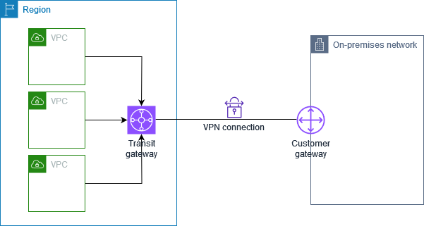
This diagram is shown here because a legacy system often reaches AWS over a private path. The on-premises side sits behind a customer gateway, and the VPN attaches to a transit gateway. Several VPCs can then share the same private path. The integration layer runs in one of those VPCs and the legacy system reaches it without the internet.
Event-driven architectures for loose coupling
Fact: In an event-driven design, the producer publishes that something happened. Consumers subscribe to the event and react on their own schedule. The producer does not know who consumes the event or when. Loose coupling means a slow or failed consumer does not block the producer.
Rule: Use an event when the producer should not wait for the consumer and more than one consumer may react. The legacy order system publishes "order changed". A summary worker, a CRM updater, and an audit store each react to the same event. The legacy system only publishes once.
Trap: Calling each consumer directly from the producer. This creates a chain of waits, and a new consumer requires a change in the producer. Direct calls are right only when the caller needs the answer in the same request.
Event delivery is usually at least once. Consumers must therefore be idempotent. A repeated event should not create a second ticket or a second summary. Store a stable event ID and check it before work starts. The course slide extract describes standard SQS delivery as at least once with best-effort ordering, so duplicate handling is part of the design.
Limits: SQS standard messages hold up to 1024 KB, and retention is 4 days by default with a maximum of 14 days. Consumers receive up to 10 messages per call. The course slide extract, pages 399 and 400, gives these values.
Source: Course slide extract, pages 399 to 401. Event delivery and idempotency: design guidance from the same extract, pages 399 to 404.
Data synchronization patterns
Fact: A synchronization pattern keeps a derived copy in step with a source of truth. For GenAI, the derived copy is often a vector index. The source is often a database or an S3 prefix. The synchronization can be streamed, scheduled, or batched.
Rule: Use a change feed when the derived store must reflect updates and deletes within minutes. DynamoDB Streams, S3 event notifications, and EventBridge events give a change feed. A nightly full rebuild is only a recovery tool.
Rule: Use a stable source key as the index document ID so each update replaces the same document. A delete event then removes the matching document. An index keyed by a random generated ID cannot find the old vector on delete.
Trap: A scheduled scan that looks for recently updated items. A hard delete leaves no item to find, so the scan never sees the removal. Use a change feed that records deletes, or a tombstone record that the scan can read.
The course material shows a pattern where DynamoDB feeds OpenSearch through a managed pipeline and OpenSearch serves as the vector store for a knowledge base. It also shows that new or changed S3 content can trigger a Lambda function that starts an ingestion job. Scheduled sync is an option when real time is not needed.
Source: Course slide extract, pages 48, 127, 188, 189, and 190. Limits for the change feed itself: Not in source.
event| B["Change feed record"] A -->|Delete event| C["Delete record with key"] B -->|Lambda embeds the
text| D["Upsert vector by source
key"] C -->|Lambda deletes by
same key| E["Remove vector document"] F["Scheduled full scan only"] -->|Misses hard deletes| G["Stale vectors remain"] D --> H["Index matches source"] E --> H
Figure: a change feed that keeps a vector index in step, including deletes, next to the scan that misses deletes.
Skill 2.3.2: Integrated AI capabilities in existing applications
This skill asks how to add GenAI to an application that already works. The three named tools are API Gateway, Lambda webhook handlers, and EventBridge. API Gateway owns the front door. Lambda owns the code that runs on each request or event. EventBridge owns routing between producers and consumers.
Figure: API Gateway owns the front door, Lambda runs the code, and EventBridge routes events to consumers.
Amazon API Gateway
Fact: API Gateway offers REST APIs, HTTP APIs, and WebSocket APIs. Integrations can call Lambda, an HTTP backend, or an AWS service API directly. REST APIs add API keys, usage plans, request validators, and response streaming through proxy integrations.
Rule: Choose a REST API when the design needs API keys with usage plans, request validation, or response streaming. Choose an HTTP API when the design needs only a simple front door with a proxy to Lambda or an HTTP backend.
Rule: Use request validation to reject malformed bodies before a model call. A validator returns a client error at the edge. The Lambda function and the model do not run for bad input.
Trap: Expecting API Gateway to hold a slow reply open with a buffered integration. A buffered reply stops at the integration timeout, which is 29 seconds by default. Raising the Lambda timeout does not change that stop.
Trap: Expecting response streaming on an HTTP API. The streaming page says response streaming is supported only for REST APIs. Request streaming is not supported.
Limits: The account throttle is 10,000 requests per second per Region with a burst bucket of up to 5,000 requests. Streaming responses run up to 15 minutes. The idle timeout is 5 minutes for Regional and private endpoints and 30 seconds for edge-optimized endpoints. Usage plan quotas beyond those listed: Not in source.
Source: https://docs.aws.amazon.com/apigateway/latest/developerguide/response-transfer-mode.html and https://docs.aws.amazon.com/apigateway/latest/developerguide/limits.html. Course slide extract, pages 358 to 362.
API Gateway pairs with Cognito or IAM authorizers, Lambda proxy integrations, and AWS WAF on the public edge. The course slides also list custom authorizers and API keys with throttling as reasons to choose API Gateway as the front door.
AWS Lambda webhook handlers
Fact: A webhook handler is a Lambda function that receives a POST from a partner system. It verifies the signature, parses the event, and returns an HTTP status. The partner usually expects a 2xx response within a short time limit. When the partner sends a webhook, Lambda can run quickly and publish the event for later work.
Rule: The webhook handler verifies and acknowledges. It publishes the event and returns. It does not wait for the model. The model call runs in a consumer that reads the event. This keeps the partner time limit safe.
Trap: Calling Amazon Bedrock inside the webhook handler and returning the model answer as the acknowledgment. Model latency then becomes webhook latency, and a timeout looks like a failed delivery to the partner.
Trap: Running a Lambda function URL with a streaming mode inside a VPC. The Lambda response streaming page says function URLs do not support response streaming inside a VPC. The SDK invocation with InvokeWithResponseStream works with the Lambda interface endpoint.
Fact: Lambda can return up to 6 MB of buffered response. A streaming response can reach 200 MB. The first 6 MB of a stream is not rate limited, and then the stream is capped at 2 MBps. Streaming is supported natively on Node.js managed runtimes. Python needs a custom runtime or the Lambda Web Adapter.
Source: https://docs.aws.amazon.com/lambda/latest/dg/configuration-response-streaming.html. Lambda synchronous payload limit of 6 MB: course slide extract, page 355. Asynchronous payload limit: Not in source.
Amazon EventBridge
Fact: EventBridge is an event bus with rules. A rule matches events by pattern and sends them to targets. A scheduled rule runs on a cron or rate expression. EventBridge also receives events from AWS services such as S3 and CloudTrail, and from custom applications.
Rule: Use an EventBridge rule when the same event must reach different targets based on content. A rule can filter on the event detail, so one partner event can route to validation, analytics, and an AI summary path without code in the producer.
Rule: Use EventBridge with a scheduled rule for a periodic job, such as nightly regeneration of stale summaries.
Trap: Choosing EventBridge when the consumer needs a queue with backlog control and retries that hold messages. A queue such as SQS is the better hop for worker pacing.
Trap: Forgetting the resource policy when another account sends events. The course slides show that a resource-based policy on the event bus allows events from another account or Region.
Limits and rules: The course slides show schedule and event pattern rules, and targets such as Lambda, SQS, SNS, Step Functions, and CodeBuild. Quota values for rules per bus: Not in source.
Source: Course slide extract, pages 406, 407, and 410. Targets and rule quotas beyond these pages: Not in source.
arrives| B["API Gateway REST API"] B -->|Validated body| C["Lambda verifies signature"] C -->|Valid event| D["EventBridge event bus"] C -->|Invalid signature| E["Return 4xx to partner"] D -->|Rule for summary
path| F["Lambda with Bedrock call"] D -->|Rule for audit path| G["Audit store"] D -->|Rule for CRM path| H["CRM update worker"] C -->|Acknowledge in time| I["Return 2xx to partner"]
Figure: a webhook path that acknowledges quickly, then fans out to model and non-model consumers through EventBridge.
The diagram separates the partner acknowledgment from the model call. The partner gets a 2xx response after the event is published. The summary path can take several seconds without affecting the partner. Each consumer can retry or fail on its own. The audit path never waits for the summary.
Skill 2.3.3: Secure access frameworks for FM access
This skill asks who may call a model, through which path, and with which permissions. The three named techniques are identity federation, role-based access control, and least privilege API access. Federation answers who the caller is. RBAC answers which role the caller holds. Least privilege answers how narrow the permission is.
model"]
Figure: Each access question points to one of the three named techniques.
Identity federation between FM services and enterprise systems
Fact: Federation lets a person or system from an external identity source obtain temporary AWS credentials through an IAM role. Workforce users sign in to the corporate identity provider, which trusts AWS and issues a SAML assertion. The user then assumes a role. Cognito user pools handle sign-in for application users. Cognito identity pools exchange a token for temporary AWS credentials, and the IAM policies come from Cognito.
Rule: Federate employees to IAM roles through the enterprise identity provider. Do not create IAM users for them. Federation removes long-lived keys and ends access when the employee leaves the directory.
Exam tip: Words such as "hundreds of users", "mobile users", or "authenticate with SAML" are cues in the course material for choosing federation or a Cognito identity model over IAM users.
Trap: Creating one IAM user per developer who calls Bedrock from a laptop. The keys are long-lived, hard to rotate, and hard to tie to a person.
Trap: Leaving the default IAM roles for authenticated users on a Cognito identity pool broad. Every signed-in user then receives those permissions. The course slides note that policies can vary per user ID for finer control.
Source: Course slide extract, pages 362, 502 to 507. Federation mechanics beyond these pages: Not in source.
Role-based access control for model and data access
Fact: RBAC grants permissions through roles. A role matches a job function, such as gateway operator, prompt engineer, or auditor. The role carries a policy. Callers assume the role and do not carry permissions of their own. For FM access, the useful resource is the model ARN or the inference profile ARN.
Fact: Bedrock access control uses separate actions for the invoke operations. A policy that denies inference on a model must deny both InvokeModel and InvokeModelWithResponseStream. Denying only one leaves the streaming path open.
Rule: Scope each role to the approved model ARNs and both invoke actions. Give each application its own role. A role per application lets audit trails name the caller.
Trap: Granting a gateway role every Bedrock action on every resource because the gateway "needs model access". This is the broad grant that least privilege removes.
Trap: Using RBAC to protect data while leaving direct S3 read access open to the same role. RBAC on the model does not protect the source documents that the prompt contains.
Source: https://docs.aws.amazon.com/bedrock/latest/APIReference/API_runtime_ConverseStream.html and https://docs.aws.amazon.com/bedrock/latest/userguide/vpc-interface-endpoints.html. Course slide extract, page 505.
Least privilege API access to FMs
Fact: Least privilege means each identity holds only the actions and resources that its task requires. For FM access, the best boundary is a stable API in front of the model. Consumers hold permission to call the API. Only the gateway role holds permission to invoke the model.
Rule: Give client applications permission to call the API and give the gateway role permission to invoke the model. A client that holds Bedrock permissions can bypass every prompt filter and log in the gateway.
Trap: Giving each application an IAM role with bedrock:InvokeModel on all resources. The application can then call any model, including models that the gateway would block.
Fact: API Gateway usage plans and API keys give per-consumer throttling and quotas. A key by itself is not an authentication control for sensitive data. Pair it with an authorizer or a signed request. The course slides describe API keys with throttling as a front-door control, and custom authorizers as the way to add your own logic.
Trap: Treating an API key as proof of identity. A key identifies a client application for quota purposes, not an employee.
Source: Course slide extract, pages 358, 362, and 364. Least privilege wording of IAM actions: https://docs.aws.amazon.com/bedrock/latest/APIReference/API_runtime_ConverseStream.html
Skill 2.3.4: Cross-environment solutions and data compliance
This skill asks where the model runs and where the data may travel. The named services are AWS Outposts and AWS Wavelength. The named technique is secure routing between cloud and on-premises resources. The deciding fact is the place. A data residency rule, a latency rule, and a network rule each point to a different design.
site"] -->|Data must stay on
premises| B["Outposts rack or server"] A -->|Low latency to
carrier users| C["Wavelength Zone in carrier
network"] A -->|Region services are
close enough| D["Region with Direct Connect"] B -->|Local compute and
storage| E["Service link to parent
Region"] C -->|Carrier gateway and
VPC subnet| E B -->|Same APIs as the
Region| F["Parent Region control
plane"] C -->|Parent Region for
shared services| F D -->|Private virtual
interface| G["VPC in the Region"]
Figure: choosing a cross-environment design from the place rule in the scenario.
AWS Outposts
Fact: AWS Outposts extends AWS infrastructure to a customer site. An Outpost is a pool of compute and storage that AWS operates as part of a Region. It comes as racks or as servers. Instances in an Outpost subnet talk to Region instances over private IP addresses in the same VPC.
Fact: The service link connects the Outpost to its parent Region. The local gateway connects the rack to the on-premises network. Racks use a 42U form factor. Servers are 1U or 2U.
Fact: Supported resources differ between racks and servers. The fetched page lists EC2, ECS, EKS nodes on racks, RDS, EBS volumes on racks, S3 on Outposts, Application Load Balancers on racks, and Route 53 resources on racks. Whether a given model runs on Outposts: Not in source.
Rule: Choose Outposts when data or compute must stay at a customer site and the team still needs AWS APIs and tooling. The local data path avoids a long round trip to the Region.
Trap: Assuming every Region service runs on Outposts. Check the supported service list for the Region and the form factor before you choose it.
Trap: Treating Outposts as a separate cloud with its own control plane. The service link ties it to the parent Region.
Limits: Four or more compute racks need an ACE rack for aggregation. Outposts billing includes data transfer from the Region to the Outpost. Capacity size per Outpost: Not in source.
Source: https://docs.aws.amazon.com/outposts/latest/userguide/what-is-outposts.html. Course slide extract, page 9.
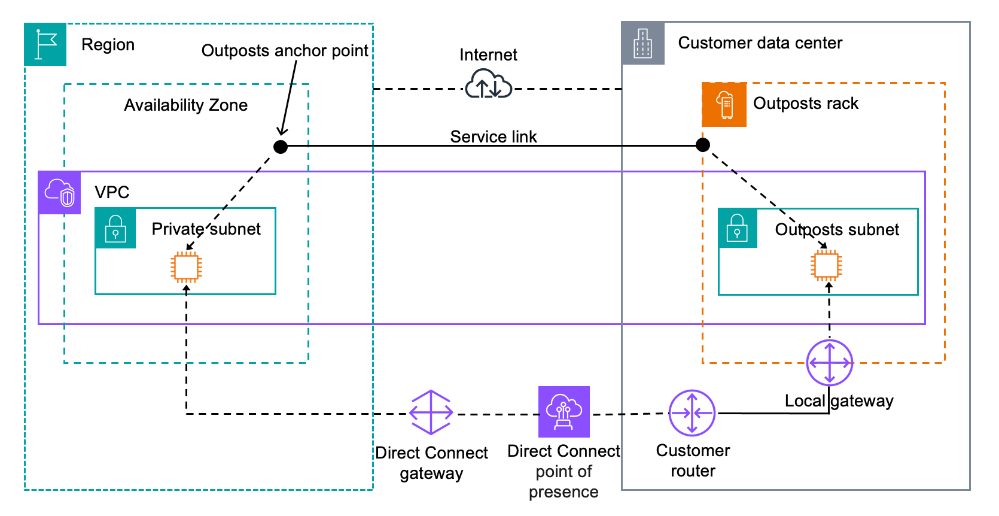
The local gateway is the path from the rack to the on-premises network. Workloads on the rack can reach local systems without going through the internet. The service link still runs back to the parent Region for control and for the AWS APIs. Plan the local gateway routes as part of the secure routing design.
AWS Wavelength
Fact: Wavelength deploys AWS compute and storage at the edge of a communications provider network. A Wavelength Zone sits inside the carrier network and is linked to a parent Region. A VPC extends to the zone through a Wavelength subnet and a carrier gateway.
Rule: Choose Wavelength when mobile or carrier-connected users need low latency to an application that also calls back to Region services.
Trap: Choosing Wavelength for an on-premises factory or a data center. Wavelength serves the carrier network, not a customer site. Outposts fits the customer site.
Limits: Wavelength supports EC2 instances, EBS volumes, EKS and ECS clusters, and Application Load Balancers in select zones. Carrier gateway and zone list details beyond the fetched page: Not in source.
Source: https://docs.aws.amazon.com/wavelength/latest/developerguide/what-is-wavelength.html. Course slide extract, page 9.
Secure routing between cloud and on-premises resources
Fact: Secure routing means traffic between the cloud and the site uses private paths with defined routes. Options are Site-to-Site VPN, Direct Connect with virtual interfaces, a transit gateway hub, and interface endpoints for AWS APIs. DNS resolution has its own private path through Route 53 Resolver.
Rule: Route AWS-bound traffic from the site over VPN or Direct Connect. Resolve AWS names through endpoints that the site can reach.
Trap: Opening a public endpoint for an on-premises system to call the model directly. The public path needs its own authentication, rate control, and audit. The private path avoids most of that work.
Trap: Sending model calls from the site with long-lived keys over the internet when a private path already exists for the site.
Source: The network layer section below cites the pages for each path.
Network layer for enterprise integration
The network layer decides how a site reaches AWS privately, how names resolve, and how many VPCs share one path. Site-to-Site VPN and Direct Connect are the two links, and Transit Gateway is the hub. PrivateLink is the private door to Bedrock. Route 53 Resolver handles names. Cross-account access decides who may cross the account boundary.
circuit| B["Direct Connect private VIF"] A -->|Backup IPsec tunnels| C["Site-to-Site VPN"] B -->|Attach to transit
gateway| D["Transit gateway hub"] C -->|VPN attachment| D D -->|VPC attachment| E["Gateway VPC with Lambda"] E -->|Interface endpoint| F["PrivateLink
bedrock-runtime"] F -->|Avoids internet
gateway| G["Amazon Bedrock runtime"] A -->|DNS query for AWS
names| H["Route 53 Resolver inbound
endpoint"] H -->|Endpoint address
answer| F E -->|Outbound rule for
site names| A
Figure: reference architecture for a hybrid integration with primary and backup links, a transit hub, a private Bedrock endpoint, and DNS.
The site reaches the gateway VPC over Direct Connect first and VPN second. The transit gateway joins both links to the same VPC attachment. The gateway VPC calls Bedrock through an interface endpoint, so model traffic avoids the internet gateway. Site clients resolve the endpoint name through an inbound resolver endpoint.
AWS Site-to-Site VPN
Fact: A Site-to-Site VPN connection has two tunnels. Each tunnel is an IPsec tunnel between the AWS side and the customer gateway device. The AWS side is a virtual private gateway or a transit gateway. By default, the customer device starts IKE negotiation. AWS can be set to start it instead.
Fact: The default ASN of a virtual private gateway is 64512, and it cannot change after creation. Virtual private gateways do not support IPv6 for the VPN. Transit gateway VPN connections can carry IPv4 or IPv6 inside the tunnels. Tunnel bandwidth: Not in source.
Rule: Choose a Site-to-Site VPN when a private path must start quickly or must back up a Direct Connect link. A VPN needs no physical circuit order, and it works with a transit gateway for several VPCs.
Trap: Calling the VPN a dedicated private circuit. It is IPsec over an internet path. Its performance depends on that path.
Trap: Choosing a virtual private gateway when the scenario needs IPv6 inside the tunnel. Use a transit gateway for that case.
Source: https://docs.aws.amazon.com/vpn/latest/s2svpn/how_it_works.html
AWS Direct Connect
Fact: Direct Connect links the site to a Direct Connect location over fiber. Virtual interfaces then reach AWS services. A private virtual interface reaches a VPC. A public virtual interface reaches public AWS services. A transit virtual interface reaches transit gateways associated with a Direct Connect gateway.
Fact: The site router needs BGP with MD5 authentication and 802.1Q VLAN support across the whole path. Bidirectional Forwarding Detection is available and turns on per interface. Billing covers port hours and data transfer out. Whether the link is encrypted by default: Not in source.
Rule: Choose Direct Connect for steady, high-volume traffic that must not use the internet path. Pair it with a VPN for failover.
Trap: Assuming a Direct Connect connection is encrypted because it is private. The fetched page does not say so. Encryption needs its own design choice.
Trap: Ordering a Direct Connect connection without a colocation, partner, or provider path to a location. The site must reach a Direct Connect location first.
Source: https://docs.aws.amazon.com/directconnect/latest/UserGuide/Welcome.html
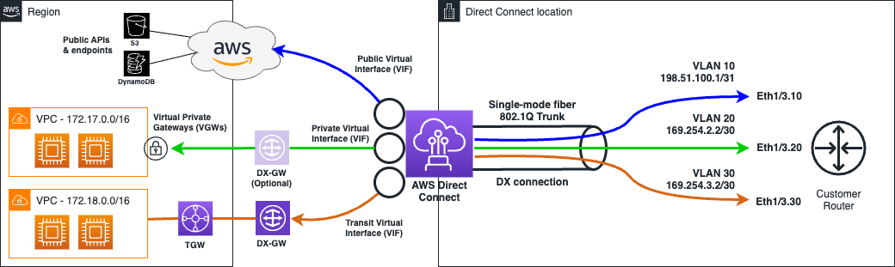
The diagram shows the on-premises network on one side and AWS on the other. Each virtual interface is a logical path over the same physical connection. The VIF type decides which AWS target the path reaches. Choose the VIF type from the target in the scenario, not from the link speed.
AWS Transit Gateway
Fact: A transit gateway is a regional hub that connects VPCs and on-premises networks. VPN connections, VPC attachments, and Direct Connect gateway associations can all attach to it. A VPN connection can change its target from a virtual private gateway to a transit gateway. Hub quotas: Not in source.
Rule: Choose a transit gateway when several VPCs and at least one site must share one routing hub. Each new VPC attaches to the hub. Each site path needs only one attachment.
Trap: Building a full mesh of VPC peering connections for many VPCs and a site. Peering connections are not transitive, so each pair needs its own path and route. A hub avoids that growth.
Trap: Attaching a transit virtual interface to a virtual private gateway. A transit VIF reaches transit gateways associated with a Direct Connect gateway.
Source: https://docs.aws.amazon.com/vpn/latest/s2svpn/how_it_works.html and https://docs.aws.amazon.com/directconnect/latest/UserGuide/Welcome.html. Transit gateway quota details: Not in source.
AWS PrivateLink to Amazon Bedrock from on premises
Fact: An interface endpoint powered by AWS PrivateLink gives a VPC private access to Bedrock. The endpoint creates network interfaces in the enabled subnets. Service names exist for bedrock, bedrock-runtime, bedrock-agent, bedrock-agent-runtime, and bedrock-mantle. FIPS variants exist in selected Regions.
Fact: With private DNS enabled, SDK calls keep the normal Regional name and route through the endpoint. Without private DNS, the client must pass the endpoint URL. The fetched page gives an example with the endpoint-url flag and a boto3 endpoint_url argument.
Fact: An endpoint policy controls which principals and actions the endpoint allows. The default policy allows full access. The fetched example policy allows InvokeModel and InvokeModelWithResponseStream for all principals, so a custom policy should be narrower.
Rule: For on-premises callers, route to the VPC over Direct Connect or VPN, and use the bedrock-runtime interface endpoint with private DNS. The site resolves the endpoint name through an inbound resolver endpoint. The site never sends model traffic to the public Bedrock endpoint.
Trap: Creating only a bedrock-runtime endpoint and expecting control plane calls, such as management of prompts or knowledge bases, to work through it. Those calls use the bedrock service name.
Trap: Creating the endpoint without private DNS and then leaving the SDK on the default endpoint. Calls then leave the VPC by the public path.
Source: https://docs.aws.amazon.com/bedrock/latest/userguide/vpc-interface-endpoints.html. The on-premises path uses the Direct Connect and VPN pages above. Course slide extract, page 518 for endpoint types.
Route 53 Resolver for private DNS
Fact: Route 53 VPC Resolver answers DNS queries from VPC resources. It is available in every VPC. The VPC connects to the resolver at the VPC plus-two address. The page notes that the service was earlier called Route 53 Resolver, so older material may use either name.
Fact: An inbound resolver endpoint lets on-premises clients send DNS queries to the VPC. An outbound resolver endpoint lets the VPC send queries to on-premises DNS servers. A forwarding rule names one domain and sends its queries to a target. Rules can be shared across accounts.
Rule: Use an inbound endpoint when the site must resolve AWS private names. Use an outbound endpoint and a forwarding rule when AWS must resolve site names.
Trap: Pointing the site DNS at the VPC plus-two address directly. That address serves queries from inside the VPC. The site reaches the VPC through an inbound endpoint.
Trap: Writing one forwarding rule for the whole company domain when only one private zone needs forwarding. Each domain needs its own rule.
Limits: Endpoint count and IP address quotas: Not in source.
Source: https://docs.aws.amazon.com/Route53/latest/DeveloperGuide/resolver.html
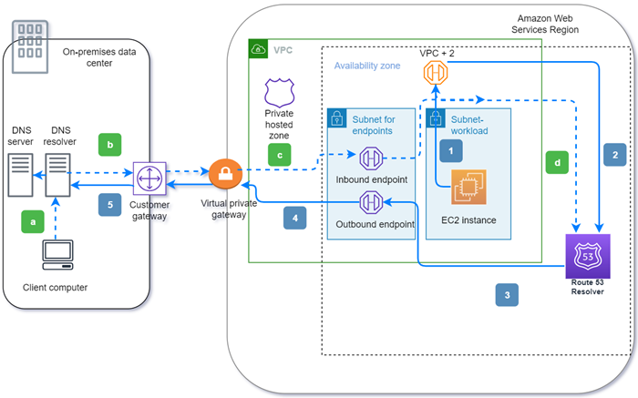
The outbound path starts at an instance in the VPC that asks for a site name. A forwarding rule sends that query to an outbound endpoint, which passes it over Direct Connect or VPN to the site resolver. The inbound path starts at a site client that asks for an AWS name. The site resolver forwards it to the inbound endpoint, and the VPC resolver answers. Both paths use the same private link.
Cross-account access in the integration layer
Fact: Cross-account access lets a principal in one account use a resource in another account. The common method is a role in the target account that trusts the caller account. The caller assumes that role for a session. Resource policies on event buses, queues, and topics also allow cross-account writes. The course slides show an event bus policy that accepts PutEvents from another account, and queue and topic policies that allow cross-account access.
Fact: Organization service control policies set the maximum permissions for member accounts. They do not grant access. Control Tower preventive guardrails use SCPs, and detective guardrails use AWS Config.
Fact: A Step Functions task token must come from a principal in the same account. A token sent from another account does not work.
Rule: Use a role in the gateway account that trusts the application accounts, and let each application assume it. Use an SCP to cap what any account can do.
Trap: Copying an IAM user key from the gateway account into an application account. This breaks auditing and rotation.
Trap: Using an SCP as the grant. An SCP only limits. A role and a policy must still grant the access.
Trap: Expecting a cross-account callback to a Step Functions workflow to succeed with a token from another account. Route the decision through an API in the workflow account.
Source: Course slide extract, pages 404, 410, 415, 491. Step Functions token rule: https://docs.aws.amazon.com/step-functions/latest/dg/connect-to-resource.html
Skill 2.3.5: CI/CD pipelines and GenAI gateway architectures
This skill asks how GenAI changes reach production safely, and how every application reaches models through one controlled path. The named services are CodePipeline and CodeBuild. The named techniques are automated testing, security scans, rollback, a centralized abstraction layer, and observability with control. A prompt is code in this design. It needs the same gates, versions, and rollback path as application code.
rollback"] N3 -->|check fails| N6["Pipeline stops"]
Figure: A change moves through pipeline gates, and a failed check stops the release before production.
AWS CodePipeline
Fact: CodePipeline models a release as stages. Each stage holds actions, and actions pass artifacts to the next action. The overview lists stage conditions as a way to make a decision at a stage boundary, and it lists pipeline types as a planning choice. The pipeline is the single path from a change to production.
Rule: Put every gate in the pipeline. Block production until tests, scans, and approvals pass. A gate that lives only in a developer's checklist is not an audit control.
Trap: A release that runs deploy commands from a laptop. The release cannot be reproduced and leaves no approval record.
Trap: Running all validation after the production deployment. The gate then protects nothing, and rollback is the only defense.
Pairs with: CodeBuild for build and test actions, CodeDeploy for traffic shifts on Lambda aliases, and EventBridge for pipeline events such as a failed build. The course slides list CodePipeline and CodeBuild as EventBridge targets.
Source: https://docs.aws.amazon.com/codepipeline/latest/userguide/welcome.html. Course slide extract, pages 9, 388, and 407.
AWS CodeBuild
Fact: CodeBuild runs build and test commands in managed build environments. It runs as an action inside CodePipeline and can also run on its own. The course slides show CodeBuild as a target for an EventBridge rule that matches a failed build.
Rule: Use a CodeBuild action for each automated check, such as packaging, prompt regression tests, and security scans. Each check then has its own log and exit code, and the pipeline stops on the first failure.
Trap: Running the tests on a shared machine that holds long-lived credentials. A build role with scoped permissions is the safer pattern.
Trap: Treating a passing build as proof that the prompt works. A build can pass while the model output degrades. The test must check outputs.
Source: Course slide extract, pages 407 and 431. Build time limits: Not in source.
Automated testing frameworks for GenAI components
Fact: Unit tests alone do not cover a GenAI component, because model output is not fixed. The course material recommends synthetic end-to-end workflows before and after deployment. It also recommends output checks for hallucination rate, semantic drift, faithfulness, and compliance. Bedrock model evaluations provide some of these checks.
Fact: Test results can be stored in S3 and queried with Athena, then viewed in QuickSight. CloudWatch synthetic canaries can run the end-to-end checks on a schedule.
Rule: Test the exact prompt version that will ship, against a fixed dataset, with pass criteria that match the output contract. For a JSON output, check the required fields and the schema. For a summary, check length and required facts.
Rule: Accept a prompt only when the pass rate stays within the agreed range and the failure list is empty for critical cases.
Trap: Comparing model output with an exact expected string. Harmless wording changes then fail the test, and the team learns to ignore failures.
Trap: Testing the new prompt against the old model only. The release changes two things, so both must be tested together.
Source: Course slide extract, pages 431 and 433. Bedrock model evaluations details beyond these pages: Not in source.
Security scans in the pipeline
Fact: A security stage scans source code, dependencies, infrastructure templates, and prompt text before deployment. A scan that finds a blocking issue fails the stage. The course material does not name specific scanner products, so product choice is Not in source.
Rule: Run the security scan as a CodeBuild action before the deploy stage. A finding above the agreed threshold stops the release.
Trap: Scanning only after deployment. A vulnerable build is then already in production.
Trap: Storing scanner tokens in plain text in the build definition. Use the secret store and a scoped role.
Source: Pipeline stage design follows from the CodePipeline page above. Course slide extract, page 431 for deployment validation.
Rollback support
Fact: CodeDeploy shifts Lambda alias traffic in steps. Options in the course slides include canary, where a percentage moves first and the rest after a wait, and linear, where traffic grows in equal steps. The all-at-once option moves everything immediately.
Fact: AppConfig deploys configuration changes without a code deploy. It can validate changes with a JSON Schema or a Lambda function, roll out gradually, and roll back when a CloudWatch alarm fires.
Rule: Use a canary or linear shift for any change to prompts, model IDs, or routing, and tie the rollback to an alarm on errors or quality.
Trap: Rolling back the code while the prompt template stays on the bad version. The prompt is a separate deployable, so it needs its own version pointer and its own rollback.
Trap: Using all-at-once for a model change. The first bad output then reaches every user.
Source: Course slide extract, pages 364 and 388. Canary and linear step sizes beyond the slide examples: Not in source.
Centralized abstraction layers for GenAI
Fact: A GenAI gateway is one API that all applications call. The gateway chooses the model, applies the approved prompt version, runs guardrails and PII redaction, logs the call, and enforces quotas. Applications send a business request and never hold model credentials. The course material describes a Lambda function that runs Comprehend PII redaction before a Bedrock call.
Rule: Build a gateway when several applications need the same controls and the team must change models without touching every caller.
Trap: Letting each team call Bedrock directly for speed. Each team then sets its own controls, and nobody can prove what ran.
Trap: A gateway that only forwards bytes. Without validation, redaction, and logging, it adds latency and no control.
Source: https://docs.aws.amazon.com/bedrock/latest/APIReference/API_runtime_ConverseStream.html for prompt and guardrail fields. Course slide extract, pages 118, 259, and 358.
with key| B["API Gateway REST API"] I["Usage plan per consumer"] -->|Quota and throttle| B B -->|Request validator
passes| C["Gateway Lambda function"] C -->|Redact PII first| D["Comprehend PII redaction
step"] C -->|Approved prompt
version| E["Bedrock Prompt Management"] C -->|Invoke with
guardrail| F["Amazon Bedrock model"] F -->|Model output| C C -->|Structured call
record| G["CloudWatch Logs"] C -->|Latency and count
metrics| H["CloudWatch metrics"] C -->|Filtered response| A
Figure: a GenAI gateway that validates, redacts, invokes with an approved prompt and guardrail, and logs each call.
The client sends one request to the REST API. The usage plan checks the consumer quota before the Lambda function runs. The gateway redacts personal data, loads the approved prompt, and calls the model with a guardrail. Each call writes a structured record and metrics before the filtered response returns.
Observability and control mechanisms
Fact: CloudWatch Logs can send log events in real time to Lambda, Kinesis Data Streams, or Kinesis Data Firehose through a subscription filter. Log groups can have retention periods from never expiring to a set number of days, up to ten years in the course slides.
Fact: Lambda active tracing sends traces to X-Ray. The function role needs X-Ray write permission. API Gateway also supports X-Ray. CloudTrail Insights analyzes management events for unusual activity and sends an EventBridge event for automation.
Rule: Log each call with the prompt version, model ID, consumer ID, and guardrail result. Do not log raw personal data. The record answers who called, which version ran, and what the guard decided.
Trap: Logging full prompts and responses in plain text with no retention rule. Regulated data then stays longer than policy allows.
Trap: Expecting CloudTrail alone to show the text of a model call. CloudTrail records API activity. Content logging is a separate setting. Its details: Not in source.
Trap: Using AppConfig for secrets. AppConfig holds configuration and feature flags, not credentials.
Source: Course slide extract, pages 434, 439, 451, 457, 459, 461, and 364. CloudTrail data events and content logging details: Not in source.
Versus: API Gateway REST API, HTTP API, and WebSocket API
over one connection| B["WebSocket API"] A -->|Plain request and
reply| C["Request response API"] C -->|Needs API keys and
usage plans| D["REST API"] C -->|Simple proxy to
Lambda or HTTP| E["HTTP API"] C -->|Reply streams
through proxy| D
Figure: choosing an API Gateway API type from the reply shape and the client needs.
- Purpose: REST suits managed APIs with keys, validators, and streaming. HTTP suits a simple proxy. WebSocket suits two-way sessions.
- Input and output: REST and HTTP take a request and return a reply. WebSocket takes messages in both directions and posts messages to connections.
- Effect for GenAI: Only REST supports response streaming through proxy integrations, and request streaming is not supported on any type.
Question to ask yourself: Does the reply stream, or does the client need usage plans? If yes, choose REST.
Trap: Choosing an HTTP API for a streamed chat reply because it is cheaper and simple. The streaming feature is not offered on that type.
Versus: Lambda asynchronous invoke and SQS queue
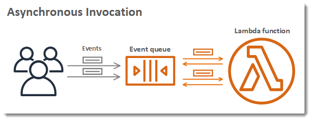
result| B["Lambda asynchronous invoke"] A -->|Backlog must be
visible and paced| C["SQS queue with workers"] B -->|Failures go to a
destination| D["Failure destination"] C -->|Repeated failures
move aside| E["Dead-letter queue"] C -->|Workers scale by
queue depth| F["Scale on queue length"]
Figure: choosing between a Lambda event invoke and a queue with workers.
- Purpose: Asynchronous invoke hands one event to Lambda and returns at once. SQS holds a backlog until a worker takes each message.
- Input and output: Invoke with the Event type returns an acceptance status such as 202. The result is not returned. SQS returns the message to a poller that deletes it after success.
- Effect: Asynchronous invoke gives no backlog view for the operator. SQS shows queue depth and lets workers scale on it.
Question to ask yourself: Does the team need to see and pace the backlog? If yes, choose a queue.
Trap: Assuming Lambda asynchronous invoke is exactly once. The documented behavior allows retries, so the consumer must be idempotent.
Versus: EventBridge rules and SNS topic fan-out
receivers"] -->|Filter by event
content| B["EventBridge rules"] A -->|Same message to all
subscribers| C["SNS topic fan-out"] B -->|Lambda and Step
Functions targets| D["Routed targets"] C -->|Subscribers include
SQS and email| E["Subscriber copies"]
Figure: choosing a fan-out service from the filtering need.
- Purpose: EventBridge routes events by pattern from many sources. SNS copies one message to many subscribers.
- Input and output: EventBridge takes JSON events and sends each matching event to each matching rule's targets. SNS takes a message and sends a copy to each subscriber, with optional filters.
- Effect: EventBridge suits AWS service events and scheduled jobs. SNS suits simple notification to many endpoints. The course slides show SNS limits of 100,000 topics and up to 12,500,000 subscriptions per topic.
Question to ask yourself: Do the receivers need content rules or a schedule? If yes, choose EventBridge.
Trap: Choosing SNS when the scenario wants a rule that matches on a field in the event body and also a scheduled run. SNS has no schedule.
Versus: Site-to-Site VPN and Direct Connect
path"] -->|Fast setup and
internet path is
fine| B["Site-to-Site VPN"] A -->|Steady high
bandwidth needed| C["Direct Connect"] A -->|Failover for the
primary link| D["VPN as backup path"] C -->|Needs colocation or
partner| E["Physical link to location"] B -->|Two IPsec tunnels| F["Customer gateway device"]
Figure: choosing the site link from speed, setup time, and failover needs.
- Purpose: The VPN gives a private path over IPsec tunnels. Direct Connect gives a dedicated link to a Direct Connect location.
- Input and output: The VPN needs a customer gateway device and two tunnels. Direct Connect needs fiber, BGP, and virtual interfaces.
- Effect: The VPN uses an internet path inside the tunnels. Direct Connect avoids the internet path. Tunnel bandwidth and link speed options: Not in source for the VPN case.
Question to ask yourself: Does the scenario require a path that avoids the internet, or only a fast private path? Avoiding the internet points to Direct Connect.
Trap: Choosing VPN for a steady, high-volume data feed because it is simpler. Pair it with Direct Connect when the volume is high, and use the VPN for failover.
Versus: Outposts and Wavelength
facility| B["Outposts"] A -->|Site is inside
carrier network| C["Wavelength"] B -->|Latency to local
systems| D["Local data path"] C -->|Latency to mobile
users| E["Carrier edge path"] B -->|Service link to
Region| F["Parent Region"] C -->|VPC subnet and
carrier gateway| F
Figure: choosing the edge or on-premises service from the site type.
- Purpose: Outposts brings AWS infrastructure to a customer site. Wavelength brings AWS infrastructure into a carrier network.
- Input and output: Outposts serves the on-premises network through a local gateway. Wavelength serves mobile traffic through a carrier gateway and a Wavelength subnet.
- Effect: Both keep control tied to the parent Region. The data stays in the site for Outposts. The traffic stays in the carrier network for Wavelength.
Question to ask yourself: Where is the site, the customer premises or the carrier network? The answer picks the service.
Trap: Choosing Wavelength for a data center rule. Wavelength does not serve a customer site.
Versus: CodePipeline and CodeBuild
flow"] -->|Ordered stages and
gates| B["CodePipeline"] A -->|Run build and test
commands| C["CodeBuild"] B -->|Action calls the
build project| C C -->|Produces build
artifacts| D["Artifacts for next action"] B -->|Promotes the
artifact to deploy| E["Deploy action"]
Figure: CodePipeline orchestrates the release, and CodeBuild runs the commands inside a stage.
- Purpose: CodePipeline orders the release stages. CodeBuild runs one build or test job.
- Input and output: CodePipeline passes artifacts between actions. CodeBuild takes source and produces output artifacts.
- Effect: The pipeline decides whether the release may continue. The build decides whether one check passed.
Question to ask yourself: Is the question about the order and gates of the release, or about one command? Order and gates point to CodePipeline.
Trap: Using CodeBuild alone as the release tool. It runs commands but does not hold the release stages or the approval point.
Versus: Step Functions request response, run a job, and callback
service"] -->|Next state after
reply| B["Request response"] A -->|Wait until the job
finishes| C["Run a job sync"] A -->|Wait for an external
decision| D["Callback with task token"] D -->|Express workflow| E["Not supported"] D -->|Standard workflow| F["Supported with heartbeat"] B -->|Standard or Express| G["Both workflow types"]
Figure: the three Step Functions integration patterns and where the callback pattern is allowed.
- Purpose: Request response moves on after a reply. Run a job waits for completion. Callback waits for an external token response.
- Input and output: Request response returns the service reply. Run a job returns the final job status. Callback returns the payload that the external system sends with the token.
- Effect: Callback can wait up to the one-year quota and needs a heartbeat to avoid a stuck run. Express supports request response only.
Question to ask yourself: Does a person or outside system decide when the workflow continues? If yes, choose callback on a Standard workflow.
Trap: Using run a job for a manual approval. The job never finishes until someone acts, and the wait is not designed for that.
Versus: Cognito user pools, Cognito identity pools, and IAM federation
credentials| C["Cognito identity pool"] A -->|Employees with
corporate login| D["Federation to IAM role"] B -->|Token for API
Gateway authorizer| E["API method access"] C -->|Temporary AWS
credentials| F["Direct AWS access with
policy"] D -->|Role trust with
identity provider| F
Figure: choosing the identity service from who signs in and what the caller needs.
- Purpose: A user pool signs users in. An identity pool exchanges an identity for AWS credentials. Federation to IAM maps a corporate identity to a role.
- Input and output: A user pool returns tokens. An identity pool returns temporary AWS credentials with a policy. Federation returns role credentials for the session.
- Effect: API Gateway can check the user pool token. The credentials from the identity pool or the role reach AWS services directly.
Question to ask yourself: Does the caller need AWS credentials, or only an API call? API calls point to a user pool, and credentials point to an identity pool or federation.
Trap: Giving app users AWS credentials when they only call one API. The API token is the narrower choice.
Source: https://docs.aws.amazon.com/step-functions/latest/dg/connect-to-resource.html, https://docs.aws.amazon.com/apigateway/latest/developerguide/response-transfer-mode.html, https://docs.aws.amazon.com/lambda/latest/dg/invocation-async.html, https://docs.aws.amazon.com/vpn/latest/s2svpn/how_it_works.html, https://docs.aws.amazon.com/directconnect/latest/UserGuide/Welcome.html, https://docs.aws.amazon.com/outposts/latest/userguide/what-is-outposts.html, https://docs.aws.amazon.com/wavelength/latest/developerguide/what-is-wavelength.html, https://docs.aws.amazon.com/codepipeline/latest/userguide/welcome.html. Course slide extract, pages 358, 359, 399, 406, 407, 412, 415, 502, 505.
Read a long question
Long questions hide the decision in one or two constraints. Read the last sentence first to learn the goal. Then underline the constraint words in the stem, such as "must stay", "while the model writes", "no user waits", or "every consumer". Eliminate each option that breaks a constraint, and write one reason. Keep the option that breaks no constraint and adds the least new work.
Figure: The goal comes first, constraint words eliminate options, and the kept option adds the least new work.
Scenario one: streamed chat through an existing REST path
A bank support portal calls a chatbot API through a REST API with a Lambda proxy. Users want each answer to appear while the model writes it. The team must avoid a new socket protocol and must not change the client upload path.
Exam tip: Constraint words: "while the model writes", "avoid a new socket protocol", "not change the client upload path".
Eliminate the HTTP API option. Response streaming is supported on REST APIs only, so that option fails the first constraint. Eliminate the option that streams chunked uploads. Request streaming is not supported, so it breaks the upload constraint. Eliminate the WebSocket rewrite, which breaks the socket constraint and adds more work than needed.
Answer: Keep the REST API, set the proxy integration to STREAM mode, and have Lambda call the streaming model operation and relay each chunk.
Scenario two: data that must stay at a plant
An equipment maker runs inspection photos at a plant. A regulation says the photos must not leave the plant, and the plant needs an answer in under a second. The company still wants AWS APIs and the same deployment tooling as the Region.
Exam tip: Constraint words: "must not leave the plant", "under a second", "same deployment tooling".
Eliminate the option that uploads the photos to a Region over the internet. The data leaves the plant, so it breaks the first constraint. Eliminate the Wavelength option. Wavelength serves a carrier network, not a plant, so it breaks the site rule.
Eliminate the nightly copy to S3. It breaks the one-second answer. Keep the Outposts option. The rack stays at the plant, keeps AWS APIs through the service link, and runs local compute.
Answer: An Outposts rack at the plant with a local gateway to the plant network and the service link to the parent Region.
Scenario three: a bad prompt that reached every user
A media company changes a summary prompt every week. A release last month sent a bad prompt to all users at once, and no test ran before production. The team now wants a release that blocks bad prompts and limits the damage of a bad release.
Exam tip: Constraint words: "every week", "no test ran", "all users at once", "blocks bad prompts".
Eliminate the deploy-from-laptop option. It leaves no approval record and cannot block a release. Eliminate the option that adds an alarm after production. The alarm runs after the damage, so it breaks the blocking constraint.
Eliminate the manual email review. It is not automated and cannot stop the stage without a person. Keep the option that uses a pipeline with a CodeBuild regression test stage, a stage gate before production, and a canary shift that rolls back on an alarm.
Answer: CodePipeline with a CodeBuild regression test gate, then a canary or linear traffic shift with an alarm-based rollback.
Distractor patterns seen in the tests
Wrong options follow a small set of patterns. Learn the pattern and you can reject many options quickly. Each pattern below names the wrong idea and the reason it fails.
service"] -->|check the hop| N2["Solves the hop in the
question"] N2 -->|no| N3["Reject with the named
pattern"] N2 -->|yes| N4["Check the wait and the
owner"] N4 -->|breaks the rule| N3 N4 -->|meets the rule| N5["Keep the option"]
Figure: A real service name is rejected when it solves a different hop, or when it breaks the rule that must hold.
- Right service, wrong hop. An option raises a Lambda timeout to fix a slow reply. The API layer still stops at its integration limit, so the change does not help the caller.
- Real feature, wrong API type. An option uses response streaming on an HTTP API. That feature is offered on REST APIs only.
- Direct call in place of a queue. An option has the producer call each consumer. Slow or failed consumers then block the producer, and new consumers force a code change.
- Scan that misses deletes. An option runs a scheduled query for recent changes. A hard delete leaves no item to find, so the index keeps stale vectors.
- Long-lived keys in place of roles. An option gives an on-premises server an access key. The key is hard to rotate, and no session ties it to a person.
- Policy that limits but does not grant. An option uses an SCP as the grant. An SCP sets a ceiling, and a role and policy must still grant the access.
- Broad role called least privilege. An option gives a role every model action on every resource. The role is wider than the task needs.
- Check after the damage. An option adds a test or scan after production. It cannot stop a release that is already live.
- Retry without idempotency. An option retries failed events with no stable key. Duplicate deliveries then create duplicate records.
- Wrong site type. An option puts a customer plant on a carrier edge service. The site rule picks Outposts, and the carrier rule picks Wavelength.
- Wrong DNS direction. An option uses an outbound endpoint for queries from the site to AWS. The site-to-AWS direction needs an inbound endpoint.
- Prompt rolled back alone. An option rolls back code and leaves the prompt on a bad version. The prompt is a separate deployable and needs its own rollback.
Drill
Cover the answer line, read the prompt, and say the answer aloud. Then read the next line to check.
Figure: Each drill prompt is answered aloud before the rule line is checked.
1. A partner needs a 2xx reply in 3 seconds, and the model call takes 10 seconds. What does the handler do?
Rule: It validates the signature, publishes an event, and returns 2xx. A consumer calls the model.
2. Which API Gateway type can stream a chat reply through a proxy integration?
Rule: A REST API with a proxy integration and the STREAM response transfer mode.
3. A plant has no internet path and must call a Bedrock runtime endpoint. What two pieces does it need?
Rule: A VPN or Direct Connect path to the VPC, and an interface endpoint for bedrock-runtime with private DNS.
4. Site clients must resolve a private zone name in AWS. Which endpoint do you create?
Rule: A Route 53 Resolver inbound endpoint, with the site DNS forwarding that domain to it.
5. A worker pool must process a backlog of 50,000 jobs and show the backlog depth. Which service?
Rule: An SQS queue with workers that scale on the queue length.
6. Deleted articles stay in the vector index. What is the fix?
Rule: A change feed that records delete events, and a stable source key used as the document ID.
7. Employees use corporate logins to reach AI features. What identity model fits?
Rule: Federation from the corporate identity provider to IAM roles, with no IAM users.
8. A gateway role has every Bedrock action on every resource. What is the narrower design?
Trap: Scope the role to approved model ARNs and both invoke actions. A role with every action fails least privilege.
9. Data must stay in a factory, and AWS APIs must still work there. Which service?
Rule: AWS Outposts, with a local gateway to the factory network and the service link to the Region.
10. Mobile users on a carrier network need low latency to an app that calls Region services. Which service?
Rule: AWS Wavelength, with a VPC subnet in a Wavelength Zone and a carrier gateway.
11. A release must stop before production when a prompt fails regression tests. What builds the gate?
Rule: A CodePipeline stage with a CodeBuild test action that fails the stage on a bad result.
12. A bad prompt reached every user at once. What deployment change stops that next time?
Rule: A canary or linear traffic shift with an alarm-based rollback, and a separate prompt version pointer.
Sources
- https://docs.aws.amazon.com/apigateway/latest/developerguide/response-transfer-mode.html (REST response streaming, limits, timeouts)
- https://docs.aws.amazon.com/apigateway/latest/developerguide/limits.html (account throttle and quotas)
- https://docs.aws.amazon.com/lambda/latest/dg/invocation-async.html (asynchronous invoke, 202 status, destinations)
- https://docs.aws.amazon.com/lambda/latest/dg/configuration-response-streaming.html (Lambda response streaming and bandwidth limits)
- https://docs.aws.amazon.com/bedrock/latest/APIReference/API_runtime_ConverseStream.html (ConverseStream fields, events, CLI limit)
- https://docs.aws.amazon.com/bedrock/latest/userguide/vpc-interface-endpoints.html (Bedrock PrivateLink endpoints)
- https://docs.aws.amazon.com/vpn/latest/s2svpn/how_it_works.html (Site-to-Site VPN components)
- https://docs.aws.amazon.com/directconnect/latest/UserGuide/Welcome.html (Direct Connect and virtual interfaces)
- https://docs.aws.amazon.com/Route53/latest/DeveloperGuide/resolver.html (VPC Resolver, inbound and outbound endpoints)
- https://docs.aws.amazon.com/outposts/latest/userguide/what-is-outposts.html (Outposts concepts and resources)
- https://docs.aws.amazon.com/outposts/latest/userguide/outposts-local-gateways.html (local gateway diagram)
- https://docs.aws.amazon.com/wavelength/latest/developerguide/what-is-wavelength.html (Wavelength Zones and carrier gateway)
- https://docs.aws.amazon.com/step-functions/latest/dg/connect-to-resource.html (integration patterns, task tokens, heartbeat)
- https://docs.aws.amazon.com/codepipeline/latest/userguide/welcome.html (CodePipeline overview)
- Course slide extract, pages 9, 48, 118, 127, 188 to 190, 355 to 364, 388, 399 to 415, 431, 434 to 461, 491, 502 to 518, 543.
Figure: Each fact is traced to a web page or a slide page number, and each URL note names its topic.
Task 2.4: Implement FM API integrations
After this section, you can read a long question about calling a foundation model from an application and pick the integration pattern that fits. You will decide between Converse and InvokeModel, between streamed and buffered output, between a synchronous call and a queue, and between fixed and dynamic routing. You will also know which control belongs to the client, which belongs to the API layer, and which belongs to the network path. Each decision ends with one reason that rejects the wrong options.
The deciding constraint
Start from the scenario and find the one limit that the answer must respect. The limit is usually a time limit, a network rule, a traffic shape, a failure mode, or a choice that changes per request. Each limit points to one branch of the tree. Read the other options only after you know the branch.
the scenario"] A -->|Text must appear as
generated| B["Streaming pattern"] A -->|Burst or backlog of
work| C["Queue and worker pattern"] A -->|Throttle or
dependency outage| D["Resilience pattern"] A -->|Model choice varies
per request| E["Routing pattern"] A -->|Private subnet and
no public path| F["Interface endpoint for
bedrock-runtime"] B -->|Browser needs
two-way messages| G["API Gateway WebSocket API"] B -->|Server sends one way
text| H["REST API response
streaming"] C -->|Caller needs fast
acknowledgement| I["API Gateway then SQS"] C -->|Offline bulk job
within hours| J["Bedrock batch inference"] D -->|Transient errors on
each call| K["SDK standard retry with
max attempts"] D -->|Dependency keeps
failing| L["Circuit breaker and
fallback answer"] E -->|Fixed rule per
tenant| M["Static routing config in
code"] E -->|Rule uses request
content| N["Step Functions Choice
state"]
Figure: the deciding constraint tree from scenario limit to service choice.
Signal words for each branch.
- Exam tip: Words such as as it is generated, first words, or typing point to streaming.
- Exam tip: Words such as burst, backlog, or acknowledge within point to a queue.
- Exam tip: Words such as throttling, timeout, or degraded point to retries, throttling control, or a fallback.
- Exam tip: Words such as which model per request, tier, or content type point to routing.
- Exam tip: Words such as private subnet, no internet path, or residency point to an interface endpoint.
Skill 2.4.1: Create flexible model interaction systems
Skill 2.4.1 asks for an interaction layer that serves many compute environments. The layer calls Bedrock synchronously, uses AWS SDKs, sends slow work through Amazon SQS, and exposes an API Gateway front with request validation. Each part answers a different question. Exam questions often include two correct-looking parts and one part that sits on the wrong boundary.
model calls"] -->|Synchronous call| N2["Bedrock runtime call"] N1 -->|Uses| N3["AWS SDK client"] N1 -->|Slow work| N4["Amazon SQS queue"] N1 -->|Front door| N5["API Gateway with
validation"]
Figure: The interaction layer calls Bedrock directly, sends slow work to SQS, and has an API Gateway front.
Amazon Bedrock runtime APIs for synchronous requests
The bedrock-runtime endpoint receives inference calls. Converse sends a list of messages and returns one completed message. InvokeModel sends a body in the format of the chosen model and returns that model output. Both calls are synchronous, so the caller waits for the answer or for a timeout.
- The Converse API runs on the bedrock-runtime endpoint only.
- Converse gives one message shape for models that support messages. Model-specific fields go in a separate structure in the same request.
- Step Functions can call InvokeModel with a body of up to 256 KiB. Larger input can come from an S3 location instead.
Rule: Choose Converse for multi-turn chat across models. Choose InvokeModel when the model needs a body that Converse does not express.
Trap: Sending a generic chat body to InvokeModel. The body must match the model family, so a generic body fails or gives poor output.
Source: https://docs.aws.amazon.com/bedrock/latest/userguide/conversation-inference.html and https://docs.aws.amazon.com/step-functions/latest/dg/connect-bedrock.html. Quota numbers for this call are Not in source on these pages.
Compute environments that call Bedrock
The task names several compute environments. The same runtime call works from Lambda, from containers, and from virtual machines. The code needs network access to bedrock-runtime and an IAM role that allows the invoke action. The compute choice changes timeouts, concurrency, and scaling, but it does not change the request shape.
Choose the compute by call duration and by how many callers arrive at once. Short calls fit Lambda behind API Gateway. Long jobs fit workers that read from a queue, because those workers can run longer than an API request can wait.
Rule: Match the compute to the call duration. Use Lambda for short calls behind an API and workers for long calls.
Trap: Raising Lambda concurrency to fix Bedrock throttling. The limit sits at the model runtime, so more callers add more pressure on the same limit.
Language-specific AWS SDKs
An AWS SDK builds and signs the request, reads the endpoint setting, and runs retries. The client object is the unit of configuration. Use one client for each independent workload when the workloads have different traffic patterns. A shared client couples those workloads, especially when the client uses adaptive retry.
A client can take an endpoint URL. The URL can point calls at a VPC endpoint when private DNS is off.
Rule: Set retry mode and max attempts on the SDK client, not in application loops around it.
Trap: Wrapping an SDK call that already retries in a second retry loop. The number of attempts multiplies, and the caller waits longer.
- Create one SDK client per independent workload.
- Set the retry mode and the max attempts value on that client.
- Set the endpoint URL only when private DNS is off.
Source: https://docs.aws.amazon.com/bedrock/latest/userguide/vpc-interface-endpoints.html
Amazon SQS for asynchronous processing
Amazon SQS holds work until a worker reads it. The producer sends a message and does not wait for the model. Workers pull messages at a rate they can handle, so a burst fills the queue instead of the model runtime. A failed message can return to the queue or move to a dead-letter queue after repeated failures.
Rule: Use SQS when the caller can accept a job ID now and a result later.
Trap: Using SQS to hide a caller that needs the answer in the same HTTP response. The caller then waits on something that the design hides.
Batch size, visibility timeout, and queue quota values for this design are Not in source on the pages used for this section.
Source: AWS SQS and Lambda behavior is Not in source on the fetched pages. Queue pattern guidance comes from Sundog slide 319 on asynchronous inference and a custom SNS and SQS queue.
Amazon API Gateway for custom API clients and request validation
API Gateway is the front door for custom clients. It can validate a request before the backend runs. When validation fails, API Gateway returns a 400 response and the backend is not called. Validation checks that required parameters exist and that the body matches a JSON schema model for the content type.
Request validation checks that required parameters are present and not blank, and it checks the body against a JSON schema model when one is set.
Rule: Put a JSON schema model on the method when every client must send the same fields and types.
Trap: Expecting request validation to check that a prompt fits the token budget. Token fit needs CountTokens or application code, because the schema check does not count tokens.
Source: https://docs.aws.amazon.com/apigateway/latest/developerguide/api-gateway-method-request-validation.html. Sundog slide 363 lists request validation and required field checks for GenAI fronts.
Private placement: bedrock-runtime through an interface endpoint
A private subnet has no public route for the default public service name. An interface endpoint creates network interfaces in the subnets that you choose. When private DNS is on, the standard bedrock-runtime name resolves to the private addresses of those interfaces. The application code does not change.
Figure: the private call path from a private subnet to bedrock-runtime through an interface endpoint.
The endpoint service name has the form com dot amazonaws dot Region dot bedrock-runtime. Private DNS on means the default Regional name works without a code change.
- Create an interface endpoint for bedrock-runtime in the Region.
- Select the private subnets in at least two Availability Zones.
- Turn on Enable Private DNS Name for the endpoint.
- Attach an endpoint policy that allows only the invoke actions needed.
The AWS figure below shows two Availability Zones. Each private subnet reaches the Region services through endpoint network interfaces. No internet gateway, NAT device, VPN, or Direct Connect link appears on this path. Read the figure as the path of one call, not as a list of services.
An interface endpoint has one network interface in each subnet that you enable. Hourly charges apply per Availability Zone, and a per GB charge applies to data processed.
Source: https://docs.aws.amazon.com/bedrock/latest/userguide/vpc-interface-endpoints.html and https://docs.aws.amazon.com/vpc/latest/privatelink/privatelink-access-aws-services.html
What breaks without a NAT gateway or an endpoint
A private subnet with no endpoint and no NAT gateway has no route to the public Bedrock endpoint. The SDK call cannot connect, so the function or container fails or times out. The fix is either the endpoint or a route through a NAT gateway. Only the endpoint avoids the internet gateway on this path.
bedrock-runtime"] -->|Endpoint and private
DNS on| B["Works with unchanged SDK
code"] A -->|Endpoint and private
DNS off| C["Set endpoint URL in SDK
client"] A -->|NAT gateway and
internet gateway| D["Works through public
service path"] A -->|No endpoint and no
NAT| E["No route so calls fail to
connect"] E -->|Add endpoint or NAT
route| F["Route restored for
bedrock-runtime"]
Figure: what each network path does for a private subnet call to bedrock-runtime.
The NAT path appears in the next AWS figure. The workload in the private subnet sends traffic to a NAT gateway in a public subnet. The NAT gateway sends that traffic to the internet gateway. The traffic reaches the public service endpoint and does not leave the AWS network, but it does pass the internet gateway.
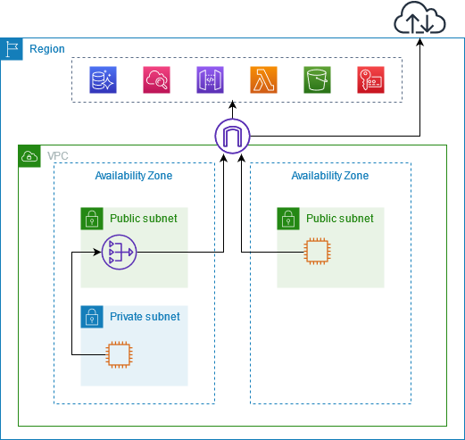
The NAT path works for the call, but it fails a rule that forbids any internet gateway. The endpoint path passes that rule and keeps the same SDK call. Use the table to compare the paths on the three facts that exam options often change.
| Network path | Reaches bedrock-runtime | Uses internet gateway | Passes no public path rule |
|---|---|---|---|
| Interface endpoint with private DNS on | Yes | No | Yes |
| Interface endpoint with endpoint URL set | Yes | No | Yes |
| NAT gateway and internet gateway | Yes | Yes | No |
| No endpoint and no NAT | No | No | No |
Rule: When a question forbids a public internet path, choose the interface endpoint and keep private DNS on.
Trap: Adding a NAT gateway because the call fails. The NAT gateway fixes the route, but it sends the call through the internet gateway that the rule forbids.
Trap: Giving the workload a public IP address to reach Bedrock. The endpoint does not need public IP addresses on the workload.
Source: https://docs.aws.amazon.com/bedrock/latest/userguide/vpc-interface-endpoints.html, which states that an interface endpoint works without an internet gateway, NAT device, VPN, or Direct Connect.
Skill 2.4.2: Develop real-time AI interaction systems
Skill 2.4.2 asks for output that reaches the user while the model is still writing. The design uses Bedrock streaming operations and a front door that can send partial output. Four choices appear together: the Bedrock operation, the protocol to the browser, the API Gateway type, and the Lambda runtime. Each choice must support streaming, or the whole path becomes buffered.
buffered"]
Figure: Four choices must all support streaming, or the whole path becomes buffered.
Amazon Bedrock streaming APIs
ConverseStream sends the message shape of Converse and returns output in parts as the model writes. InvokeModelWithResponseStream does the same for a model-specific body. Choose ConverseStream when the chat UI needs one message format for several models. Choose the Invoke streaming operation when the body must match one model.
Time to first token is a CloudWatch measure for streaming calls. It shows when the first output part arrives.
Latency optimized inference is requested for each call with the latency setting in the performance configuration.
Rule: Use ConverseStream for a chat UI that shows text as it arrives and that uses one message format.
Trap: Calling a streaming Bedrock operation and then collecting all parts in Lambda before returning. The user still waits for the full answer, so the stream adds no benefit.
Source: https://docs.aws.amazon.com/bedrock/latest/userguide/conversation-inference.html. Sundog slide 286 for time to first token. Sundog slide 295 for the latency optimized setting. The event count and chunk size are Not in source.
WebSockets through API Gateway
An API Gateway WebSocket API is bidirectional. The client sends messages to the service, and the service sends messages to clients without a new request from the client. Each message type maps to a route. The $connect and $disconnect routes track who is connected. The $default route handles unmatched messages.
The figure below shows a WebSocket API with routes that call Lambda functions. A DynamoDB table stores the connection records. A route for sending a message reads the connected clients and pushes the message to them.
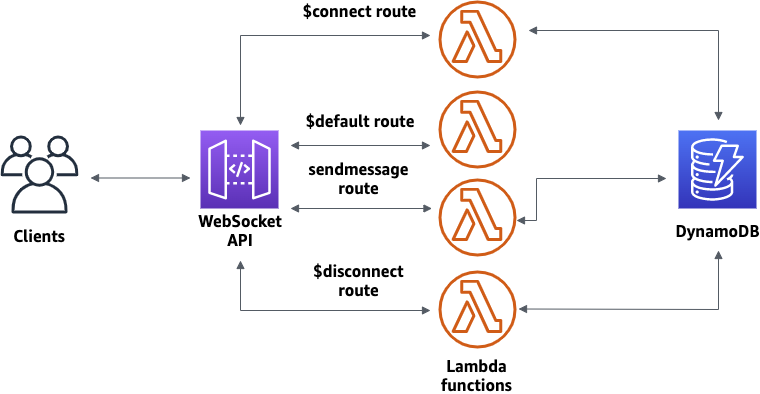
The clients in the figure connect to the WebSocket API on the left. Each route sends the request to a Lambda function on the right. The functions read and write the connection table, which keeps the state between messages. The sendmessage route is the path where generated text returns to connected clients.
Rule: Choose a WebSocket API when the browser and the service both send messages during one session.
Trap: Choosing WebSockets for one-way text from a REST endpoint. A REST response stream or server-sent events is simpler for that pattern.
Source: https://docs.aws.amazon.com/apigateway/latest/developerguide/apigateway-websocket-api.html and https://docs.aws.amazon.com/apigateway/latest/developerguide/websocket-api-chat-app.html
Server-sent events
Server-sent events send text from the server to the browser over one HTTP response. The browser reads the events with the EventSource interface. The stream is one-way, so the browser cannot send more messages on the same response. For a REST API, the server side is a proxy integration with the response transfer mode set to STREAM.
Lambda response streaming sends partial payloads to the caller. The documentation states that Node.js managed runtimes support it. For other languages, the pages fetched name a custom runtime or the Lambda Web Adapter. Lambda function URLs do not support response streaming inside a VPC.
Rule: Choose server-sent events for progressive one-way text from a REST endpoint with a proxy integration.
Trap: Using server-sent events when the client must send messages during the same stream. A WebSocket API fits two-way sessions.
Trap: Assuming a Python Lambda function streams natively. The fetched page lists Node.js managed runtimes, and other languages need a custom runtime or the Lambda Web Adapter.
Source: https://docs.aws.amazon.com/lambda/latest/dg/configuration-response-streaming.html
Chunked transfer encoding through API Gateway
The task names chunked transfer encoding. The API Gateway feature on the pages fetched is response payload streaming, set with the transfer mode STREAM. With that setting, API Gateway does not wait for the full integration response before it sends data to the client. The wire format is Not in source on these pages, so treat chunked transfer as the concept and STREAM as the setting.
Response streaming works on REST APIs only, and only with an HTTP_PROXY or AWS_PROXY integration.
Streams run up to 15 minutes. The idle timeout is 5 minutes for Regional and private endpoints and 30 seconds for edge-optimized endpoints.
Response streaming lets the response exceed the 10 MB payload limit and the default 29 second timeout. The first 10 MB has no bandwidth limit, and later data is limited to 2 MB per second.
Request streaming is not supported. Endpoint caching, content encoding, and VTL response transformation are not supported with STREAM.
Rule: Use STREAM only with a REST API and a proxy integration, and keep the request as a normal body.
Trap: Expecting a streamed upload from the client. Request streaming is not supported, so the input is sent as one request.
Trap: Expecting an edge-optimized stream to stay open for minutes of idle time. The edge idle timeout is 30 seconds.
Source: https://docs.aws.amazon.com/apigateway/latest/developerguide/response-transfer-mode.html
Skill 2.4.3: Create resilient FM systems
Skill 2.4.3 asks for a system that keeps working when the model runtime or a dependency fails. The design uses retries with backoff, gateway throttling for client traffic, a fallback answer, and tracing across service boundaries. Each control acts at a different layer. A question often asks which layer owns the failure.
dependency fails"] -->|Transient errors| N2["Retries with backoff"] N1 -->|Client traffic| N3["Gateway throttling"] N1 -->|After retries| N4["Fallback answer"] N1 -->|Where it failed| N5["Tracing across services"]
Figure: Each failure type points to the control that acts at its own layer.
AWS SDK exponential backoff
The standard retry mode is the default. It retries throttling and transient errors with exponential backoff and full jitter. Max attempts counts the first call, so a value of 3 means one call and up to two retries. Setting max attempts to 1 turns retries off.
The updated retry behavior needs the environment variable AWS_NEW_RETRIES_2026 set to true until it becomes the default. Without it, the SDK uses the older behavior.
Transient errors start with a 50 millisecond base delay. Throttling errors start with a 1,000 millisecond base delay. The delay is capped at 20 seconds.
A retry quota token bucket of 500 tokens limits retries when many calls fail. A transient retry costs 14 tokens, and a throttling retry costs 5 tokens.
The figure below shows a caller that sends a request, receives errors, sends retry requests, and then receives success. Each retry waits before it sends. The SDK uses the same pattern with random waits that spread the retries across clients.
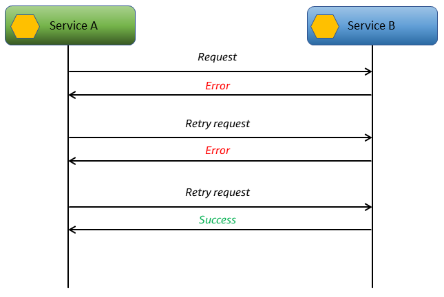
The figure shows one service that asks for the same work again after each error. Each retry waits longer than the one before. The last retry succeeds, so the caller sees no error. Random waits keep many callers from retrying at the same moment.
Rule: Keep standard mode with a bounded max attempts value on each Bedrock client.
Trap: Setting max attempts to 1 to protect the model. Brief 503 errors then reach users, and the model load does not change.
Trap: Reading max attempts as the number of retries. The value includes the first call.
Trap: Treating a ValidationException as a retryable throttle. The SDK returns non-retryable errors to the caller at once.
Source: https://docs.aws.amazon.com/sdkref/latest/guide/feature-retry-behavior.html and https://docs.aws.amazon.com/prescriptive-guidance/latest/cloud-design-patterns/retry-backoff.html. Refill rate beyond the stated token costs is Not in source.
API Gateway rate limiting
API Gateway throttles requests with a token bucket. A rate sets the steady flow of tokens, and a burst sets the bucket size. Account limits apply per Region. Stage, method, and usage plan settings add narrower limits. When a limit is exceeded, the client receives 429 Too Many Requests.
Throttle limits and usage plan quotas in API Gateway are best-effort targets, not guaranteed ceilings.
Course slides give approximate usage plan figures of 10 to 50 requests per second. The burst is about 2 to 3 times the rate. These are slide estimates. The current default for an account is Not in source on the pages fetched.
Rule: Use API Gateway throttling to shape client traffic, and use Bedrock quota management for model capacity.
Trap: Reading a 429 from API Gateway as a Bedrock quota error. The gateway returned it before the backend ran.
Trap: Relying on API Gateway throttling for a hard spend limit. The docs call these limits targets, so they do not cap cost exactly.
Source: https://docs.aws.amazon.com/apigateway/latest/developerguide/api-gateway-request-throttling.html. Sundog slide 363 for approximate usage plan figures.
Fallback mechanisms for graceful degradation
A fallback gives the user a lower-quality answer when the primary path fails after retries. A fallback can be a smaller model, a precomputed answer, a queued job with a notice, or a plain message. Each fallback trades quality for availability, so the business owner must accept the trade.
A circuit breaker stops calls to a dependency that is already failing. Step Functions has no single managed circuit switch, so the pattern stores the circuit state in DynamoDB. A Choice state reads that state before the call. When the circuit is open, the workflow takes the fail or fallback path without calling the dependency.
The figure starts with a DynamoDB query for the circuit status. A Choice state sends the flow to the call when the circuit is closed, and to a Fail state when it is open. A catch on the Lambda call updates the status record when the call fails. Other executions read the same record, so they stop calling the failed dependency as well.
DynamoDB"] -->|Circuit open| B["Fail fast with fallback"] A -->|Circuit closed| C["Choice state checks status"] C -->|Matched rule| D["Invoke model task"] C -->|No rule matched| E["Default branch to fallback"] D -->|Task error caught| F["Update circuit record"]
Figure: the circuit state check in front of a model call.
Rule: Store circuit state outside a single execution, so separate executions see the same failure and stop calling.
Trap: Retrying a failing dependency without limit. A circuit breaker stops calls to a dependency that it knows is down.
Source: https://docs.aws.amazon.com/prescriptive-guidance/latest/cloud-design-patterns/circuit-breaker.html. Step Functions error handling is in https://docs.aws.amazon.com/step-functions/latest/dg/concepts-error-handling.html. Timeout values for the fallback are Not in source.
AWS X-Ray observability across service boundaries
AWS X-Ray records the work of each service as a segment. A segment can hold subsegments for downstream calls, including AWS SDK calls. X-Ray groups segments with the same request into a trace. The service graph, also called the trace map, shows the path and the time spent at each node.
The first instrumented service adds a tracing header named X-Amzn-Trace-Id. Downstream services read the header and add to the same trace.
By default, X-Ray records the first request each second and five percent of the rest. Trace and service graph data is kept for 30 days.
X-Ray indexes up to 50 annotations per trace. Metadata is stored but not indexed.
X-Ray categorizes errors as Error for 400 series, Fault for 500 series, and Throttle for 429 responses.
call| C["Bedrock downstream node"]
Figure: a trace path from API Gateway to Lambda to a Bedrock call.
Rule: Use X-Ray when the question asks where latency or errors sit across API Gateway, Lambda, and a downstream call.
Trap: Trusting the client IP that X-Ray records through a forwarded header. The docs state that this value can be forged.
Trap: Using X-Ray to read prompt text. X-Ray records timing, errors, and metadata that you add, not model output by default.
Source: https://docs.aws.amazon.com/xray/latest/devguide/xray-concepts.html
Skill 2.4.4: Develop intelligent model routing systems
Skill 2.4.4 asks for a system that picks the model for each request. The choice can come from fixed configuration, from a content rule, from runtime metrics, or from a gateway transformation. Each option has a different owner and a different change cost. A question usually names the owner, so read for the words that name who changes the rule.
request"] -->|Fixed config| N2["Static routing in code"] N1 -->|Content rule| N3["Step Functions Choice"] N1 -->|Runtime metrics| N4["Metric driven weights"] N1 -->|At the gateway| N5["Request transformation"]
Figure: The model choice can come from config, a content rule, runtime metrics, or a gateway transformation.
Static routing configuration in application code
Static routing maps a fixed label to a model ID. The label can be a tenant tier, a feature name, or a language code. The map lives in a configuration store, so a change does not need a new build. Read the map at start or read it from the store with a short cache. The routing logic stays simple and easy to audit.
Rule: Use static routing when the model choice depends on a fixed label that changes rarely.
Trap: Hardcoding model IDs in several services. A model change then needs a deployment in each service.
Trap: Choosing a Bedrock intelligent prompt router for a fixed tier rule. The router predicts quality per prompt, so a fixed rule does not need it.
Source: https://docs.aws.amazon.com/bedrock/latest/userguide/prompt-routing.html for router behavior. The configuration store choice is Not in source on the pages used.
Step Functions dynamic content-based routing
A Choice state tests the input of the state. It checks the rules in order and moves to the Next state of the first rule that matches. A Default field gives the state a branch for no match. Without Default, a missing match fails the execution. The Choice state tests data. It does not call a model, so a Task state calls the chosen model.
A Choice state supports tests on strings, numbers, booleans, timestamps, and whether a field exists. It cannot use an End field.
Rule: Route on input fields in Step Functions when the branch must appear as a visible workflow step.
Trap: Expecting a Choice state to judge answer quality. It tests input values, so a previous step must write the value it tests.
Trap: Leaving out Default. A request with no matching rule stops the execution with an error.
Source: https://docs.aws.amazon.com/step-functions/latest/dg/state-choice.html and https://docs.aws.amazon.com/step-functions/latest/dg/connect-bedrock.html
Intelligent model routing based on metrics
Metric-based routing reads runtime signals and changes traffic weights. Useful signals include invocation latency, throttles, time to first token, and token counts. A controller reads the signals and writes new weights to the configuration. When one model shows throttles, the controller moves traffic to another model that the business accepts.
Bedrock intelligent prompt routing is different. It sends a prompt to one of two models in the same family, based on a predicted response quality. It works for English prompts only. It cannot change routing from application performance data, so a metric controller is application code.
Intelligent prompt routing uses one fallback model and a response quality difference criterion. A router holds two models from the same family.
Rule: Use metric-based routing when the question asks the system to react to throttles or latency changes.
Trap: Using Bedrock intelligent prompt routing as a metric controller for throttles. It does not read application performance data.
Trap: Using a fixed latency target as proof of quality. A faster model can fail the quality bar, so the controller needs a quality check too.
Source: https://docs.aws.amazon.com/bedrock/latest/userguide/prompt-routing.html. Sundog slide 288 for dynamic routing and router agents. Sundog slide 289 for measuring price and performance.
API Gateway request transformations for routing logic
A mapping template transforms a request body before the integration runs. It uses Velocity Template Language and applies to the content type of the request. If no template exists for that content type, API Gateway passes the body through. The docs recommend a proxy integration when possible, because the backend then reads the request and decides.
Sundog lists request transformations as a way to add routing logic at the gateway. Keep the mapping short. Long routing logic in a template is hard to test, so put the complex rules in the backend.
Rule: Use a mapping template when the gateway must reshape a body and the backend cannot change.
Trap: Using a response mapping template on a streamed route. Streaming does not support response transformation with VTL.
Trap: Putting large business routing logic in a template. A proxy integration keeps that logic in code that you can test.
Source: https://docs.aws.amazon.com/apigateway/latest/developerguide/models-mappings.html and https://docs.aws.amazon.com/apigateway/latest/developerguide/response-transfer-mode.html. Sundog slide 363 for routing logic at the gateway.
Cross-Region inference profiles as managed routing
A system-defined cross-Region inference profile lets Bedrock send a request to one of several Regions. The application sends the ARN or ID of the profile in the model ID field. A geographic profile keeps routing inside a geography. A global profile can route to any supported commercial Region. Service control policies must allow every destination Region in the profile.
Call GetInferenceProfile from each source Region to list the destination Regions. The list can differ by source Region.
Inference profiles do not work with Provisioned Throughput according to the course slides. Provisioned throughput uses the model ARN.
Rule: Use the cross-Region profile when the same model must survive a Regional problem and no custom routing is wanted.
Trap: Assuming a geographic profile ID alone proves where requests run. Check the destination list from each source Region.
Trap: Using an application inference profile for attribution as a failover tool. It tracks usage, but it does not add Regions by itself.
Source: https://docs.aws.amazon.com/bedrock/latest/userguide/inference-profiles-support.html. Sundog slide 304 and slide 305 for profile types and provisioned throughput limits.
X versus Y: the confusable pairs
Each pair below has one decision tree, a three-row comparison, one question, and one trap. Read the question first. Then read the comparison rows and check which row the stem asks about.
Converse versus InvokeModel
models"] -->|Multi-turn chat
messages| B["Converse or ConverseStream"] A -->|Model-specific body
is required| C["InvokeModel family"] A -->|Model unique
parameter needed| D["Converse with model fields"] B -->|Need streamed text| E["ConverseStream"] C -->|Body must match
model family| F["Check model request schema"]
Figure: choosing the Bedrock call shape for a chat or a model-specific body.
- Purpose: Converse gives one message interface across models that support messages.
- Input: Converse takes messages and inference settings. InvokeModel takes a body in the model format.
- Output or effect: Converse returns a normalized message. InvokeModel returns the model format.
Question to ask yourself: Does the stem need one request shape for several models, or a body that one model defines?
Trap: Choosing InvokeModel for a chat app with several models only to reach a model-specific field. Converse can carry model-specific fields in its own structure.
Source: https://docs.aws.amazon.com/bedrock/latest/userguide/conversation-inference.html
REST API response streaming versus WebSocket API
door"] -->|Server to client
only| B["REST API response
streaming"] A -->|Client sends during
stream| C["WebSocket API"] A -->|Browser must use
EventSource| D["Server-sent events from
REST proxy"] B -->|Proxy integration
required| E["AWS_PROXY or HTTP_PROXY"] C -->|Routes per message
type| F["Lambda route handlers"]
Figure: choosing between REST response streaming and a WebSocket API.
- Purpose: REST response streaming sends one response in parts. A WebSocket API keeps a session open for messages in both directions.
- Input: REST streaming takes a normal request body and a proxy integration. A WebSocket API takes messages on routes.
- Output or effect: REST streaming returns text in parts. A WebSocket API pushes messages to connected clients.
Question to ask yourself: Does the client send anything after the stream starts?
Trap: Turning on response streaming for an HTTP API. The documentation states response streaming is for REST APIs.
Source: https://docs.aws.amazon.com/apigateway/latest/developerguide/response-transfer-mode.html and https://docs.aws.amazon.com/apigateway/latest/developerguide/apigateway-websocket-api.html
Server-sent events versus WebSocket
browser"] -->|Only server sends
text| B["Server-sent events"] A -->|Client sends during
session| C["WebSocket"] B -->|Single HTTP response| D["Works with REST streaming"] C -->|Connection record
per client| E["Store connection IDs for
push"]
Figure: choosing between server-sent events and a WebSocket for a browser.
- Purpose: Server-sent events send one-way text. A WebSocket carries two-way messages.
- Input: Server-sent events use one HTTP response from a proxy. A WebSocket uses routes that receive messages.
- Output or effect: Server-sent events deliver events to an EventSource. A WebSocket delivers messages to each connected client.
Question to ask yourself: Does the browser need to talk back while the text is streaming?
Trap: Choosing a WebSocket only to show text that arrives one way. The extra connection state adds work without a benefit.
Source: https://docs.aws.amazon.com/lambda/latest/dg/configuration-response-streaming.html and https://docs.aws.amazon.com/apigateway/latest/developerguide/apigateway-websocket-api.html
Synchronous call versus SQS queue
output?"] -->|Yes within request
time| B["Synchronous Converse call"] A -->|No result later is
fine| C["Accept then queue"] C -->|Message held until
worker reads| D["SQS queue"] D -->|Failed items retried
by worker| E["Dead-letter queue for
poison items"] B -->|Call can exceed
timeout| F["Move to queue pattern"]
Figure: choosing a synchronous call or an SQS queue for a model request.
- Purpose: A synchronous call returns the answer in the same request. A queue holds work for later processing.
- Input: A synchronous call takes the full request. A queue takes a message with the work item or a reference to it.
- Output or effect: A synchronous call returns the model output. A queue returns an acknowledgement and stores the result for a later read.
Question to ask yourself: Can the caller accept a job ID now and the answer later?
Trap: Using a queue when the stem asks for the answer in the same response. The queue hides the wait from the caller, so the requirement fails.
Source: https://docs.aws.amazon.com/step-functions/latest/dg/connect-bedrock.html for the size limit on inline InvokeModel bodies. Queue behavior details are Not in source on the pages fetched.
SDK standard retry versus adaptive retry
many tenants| C["Standard mode does not
delay first call"] A -->|One resource with
heavy throttling| D["Adaptive mode may fit"] D -->|Limiter is per
client instance| E["Check unrelated calls for
delay"]
Figure: choosing standard or adaptive retry for an SDK client.
- Purpose: Standard mode retries with backoff and a retry quota. Adaptive mode adds a client-side rate limiter.
- Input: Both modes react to throttling and transient errors. Adaptive mode also tracks throttle responses for the client.
- Output or effect: Standard mode never delays the first call. Adaptive mode can delay or block the first call when throttling is seen.
Question to ask yourself: Does one client serve many tenants or workloads that must stay independent?
Trap: Giving one adaptive client to all tenants. The shared limiter slows calls that were not throttled.
Source: https://docs.aws.amazon.com/sdkref/latest/guide/feature-retry-behavior.html
Retry versus circuit breaker
errors| B["Retry with backoff"] A -->|Failures persist
across callers| C["Open the circuit"] B -->|Attempts exhausted| D["Fallback answer or queue"] C -->|Calls skip the
dependency| D
Figure: when to retry a call and when to stop calling a dependency.
- Purpose: A retry repeats one call after a short wait. A circuit breaker stops calls to a dependency that keeps failing.
- Input: A retry takes the error class and the attempt count. A circuit breaker takes a shared status record.
- Output or effect: A retry may succeed on the next attempt. A circuit breaker sends callers to the fallback without a call.
Question to ask yourself: Is the failure brief, or does it persist across many callers and executions?
Trap: Using retries alone when the stem says the dependency is down for minutes. More retries add load to the failing dependency.
Source: https://docs.aws.amazon.com/prescriptive-guidance/latest/cloud-design-patterns/circuit-breaker.html and https://docs.aws.amazon.com/prescriptive-guidance/latest/cloud-design-patterns/retry-backoff.html
Static configuration versus Step Functions Choice
tenant| B["Static config in
application"] A -->|Input field decides
branch| C["Step Functions Choice
state"] A -->|Latency or throttles
drive choice| D["Metric driven weights"] A -->|Gateway must reshape
body| E["API Gateway mapping
template"] D -->|Read CloudWatch
runtime metrics| F["Controller writes new
weights"] C -->|Default branch for
no match| G["Fallback model task"]
Figure: choosing where the model choice lives for a request.
- Purpose: Static configuration maps a fixed label to a model. A Choice state branches on a value in the workflow input.
- Input: Static configuration reads a label such as a tier. A Choice state reads a field of the state input.
- Output or effect: Static configuration changes when the map changes. A Choice state adds a visible branch in the workflow history.
Question to ask yourself: Does the choice depend on a label that changes rarely, or on a field of each request?
Trap: Using a Choice state for a tenant label that never changes. A plain configuration map is simpler and needs no workflow.
Source: https://docs.aws.amazon.com/step-functions/latest/dg/state-choice.html and https://docs.aws.amazon.com/apigateway/latest/developerguide/models-mappings.html
Cross-Region inference profile versus application-level routing
model"] -->|Same model and
managed routing| B["Cross-Region inference
profile ID"] A -->|Routing rules must
stay in app| C["Application selects
Regional model IDs"] A -->|Strict single Region
only| D["Regional model ID only"] B -->|Check destinations
per source Region| E["GetInferenceProfile per
source Region"] B -->|Need Provisioned
Throughput| F["Use provisioned model ARN
instead"]
Figure: choosing managed cross-Region routing or application routing.
- Purpose: A cross-Region profile routes requests to several Regions. Application routing picks one Regional model ID in code.
- Input: A cross-Region profile goes in the model ID field as an ARN or ID. Application routing takes a map of Regional model IDs.
- Output or effect: The profile routes inside Bedrock. Application routing needs health checks and failover code that the team owns.
Question to ask yourself: Does the stem allow Bedrock to choose the Region, and does it forbid custom failover code?
Trap: Choosing application routing across Regions when the stem asks for minimal custom code. The team then owns the health checks.
Source: https://docs.aws.amazon.com/bedrock/latest/userguide/inference-profiles-support.html. Sundog slide 304 for profile types and provisioned throughput.
API Gateway 429 versus Bedrock throttling
seen"] -->|Response came from
API Gateway| B["Client rate or burst
target hit"] A -->|ThrottlingException
from Bedrock| C["Model runtime quota or
capacity"] C -->|Check model and
Region quota| D["Size token and request
rates"] C -->|Large max tokens
reserve capacity| E["Lower max tokens to fit"] B -->|Adjust stage or
usage plan| F["Shape client traffic at
gateway"]
Figure: finding the layer that issued a throttle.
- Purpose: An API Gateway 429 protects the API from client traffic. A Bedrock throttle protects model runtime capacity.
- Input: API Gateway counts client requests against rate and burst targets. Bedrock counts tokens and requests against model quotas.
- Output or effect: The gateway fix changes stage or usage plan settings. The Bedrock fix changes quota, capacity, or the token profile of each request.
Question to ask yourself: Which service returned the error, and which limit did that service enforce?
Trap: Raising the API Gateway rate to fix a Bedrock ThrottlingException. The model limit stays the same, and more requests arrive at it.
Source: https://docs.aws.amazon.com/apigateway/latest/developerguide/api-gateway-request-throttling.html and https://docs.aws.amazon.com/bedrock/latest/userguide/quotas-token-burndown.html
Read a long question
Read the last sentence of the stem first. It holds the goal. Then read the stem again and mark each constraint word. A constraint word names a limit that the answer must keep. Eliminate options by constraint, and write one reason for each rejection.
first"] -->|Goal found| N2["Read the stem again"] N2 -->|Mark constraints| N3["Limits the answer must
keep"] N3 -->|Eliminate options| N4["Options that break a limit"] N4 -->|One reason each| N5["Written rejection reason"]
Figure: Read the goal first, mark the constraints, then reject each option with one reason.
Worked scenario one: text while it is written, private network
A ticket resale site runs a chat helper for buyers. Buyers want the answer text to appear while the model writes it. The application runs in private subnets, and the security team forbids any internet path for the workload.
helper"] -->|NAT path| N2["Removed internet gateway
path"] N1 -->|Buffered Lambda| N3["Removed text waits for
full answer"] N1 -->|HTTP API| N4["Removed streaming needs
REST"] N1 -->|REST proxy| N5["Kept with ConverseStream
and endpoint"]
Figure: Three options fail a stated constraint, and the REST proxy option keeps every constraint.
Constraint words to underline: appear while the model writes, private subnets, forbids any internet path.
- Remove the NAT option. It adds an internet gateway path that the rule forbids.
- Remove the buffered Lambda option. It waits for the full answer, so the text does not appear while it is written.
- Remove the HTTP API option. Response streaming is for REST APIs only.
- Keep the REST API option with a proxy integration and STREAM mode, with ConverseStream through an interface endpoint.
Answer: A REST API with a Lambda proxy integration, STREAM transfer mode, ConverseStream on bedrock-runtime, and an interface endpoint with private DNS on.
Exam tip: When a stem mentions both streaming and private subnets, check the front door type first, then the network path.
Worked scenario two: fast acknowledgement, slow summary, no lost work
A freight company receives partner messages in bursts. Each partner needs an acknowledgement in under one second. The summary behind the message can take close to a minute, and failed summaries must be retried without losing any message.
summary"] N1 -->|Retry in handler| N3["Removed crash loses retry"] N1 -->|Express flow| N4["Removed no orchestration
asked"] N1 -->|SQS with worker| N5["Kept with dead letter
queue"]
Figure: Only the queue option meets the acknowledgement limit and keeps each message for retry.
Constraint words to underline: acknowledgement in under one second, can take close to a minute, retried without losing any message.
- Remove the synchronous Converse option. The caller would wait for the minute-long summary, so the acknowledgement limit fails.
- Remove the option that retries inside the request handler. The handler would hold the request open, and a crash loses the in-memory retry.
- Remove the option that starts a Step Functions Express workflow for each message. The stem does not ask for an orchestration, and it does not name a retry store.
- Keep the option that stores the message in SQS with a worker and a dead-letter queue for repeated failures.
Answer: API Gateway accepts the message into SQS, a worker calls Bedrock, and failed items go to a dead-letter queue.
Exam tip: A time limit on the acknowledgement and a longer limit on the work separate the front path from the worker path.
Worked scenario three: premium throttling, same model, no second vendor
A health content app uses one model for all users. At midday, the model returns throttling errors for premium users only, and the premium answers must keep the same model. The company does not allow a second model vendor for this feature.
model"] -->|Adaptive retry| N2["Removed shared limiter
slows others"] N1 -->|Raise concurrency| N3["Removed more pressure on
model"] N1 -->|Second vendor| N4["Removed changes model
family"] N1 -->|Cross Region ID| N5["Kept with standard retry
and cap"]
Figure: Three options break a constraint, and the cross Region profile keeps the same model.
Constraint words to underline: throttling for premium users, keep the same model, no second vendor.
- Remove the adaptive retry option on one shared client. The shared limiter slows free-tier calls that were not throttled.
- Remove the option that raises Lambda concurrency. More callers add pressure on the same model limit.
- Remove the option that moves premium users to another vendor. The stem forbids it.
- Keep the option that uses a cross-Region inference profile ID for the same model, with standard retry and bounded attempts.
Answer: Use the cross-Region inference profile ID as the model ID, and keep the SDK retry mode at standard, with a limit on max attempts.
Exam tip: Words such as the same model and no second vendor remove every option that changes the model family.
Distractor patterns seen in the tests
Wrong options follow a small number of patterns. Learn the pattern, and you can reject an option even when the service names are new to you. Each pattern below names what the option gets wrong.
service"] -->|Check the pattern| N2["Pattern inside the option"] N2 -->|Pattern is wrong| N3["Reject the option"] N3 -->|State one reason| N4["Reason from the pattern
list"] N1 -->|Right name alone| N5["Not enough to accept"]
Figure: A right service name alone does not make an option correct, so the pattern inside decides.
- Raise concurrency to fix throttling. The option adds callers to a limit that sits at the model runtime. The throttle rate rises.
- One adaptive client for all workloads. The rate limiter couples unrelated calls. A throttle on one tenant slows the others.
- A streaming label on a buffered path. The option names streaming but waits for the full output in the backend. The user still waits.
- Response streaming on an HTTP API. The feature exists for REST APIs. The HTTP API option fails by design.
- Interface endpoint treated as needing NAT. The endpoint is the private path. A NAT gateway adds the internet route that the stem may forbid.
- Public subnet placement for model access. Public placement adds exposure and does not give Bedrock access that the endpoint lacks.
- Gateway 429 blamed on the model. The gateway returns the error before the backend runs. The fix belongs to the client rate settings.
- A retry loop on top of SDK retries. The attempts multiply, and the caller waits longer for the same failure.
- A built-in circuit breaker claim. Step Functions has retry and catch. The circuit state must be stored and checked by the workflow.
- A metric controller claimed as a Bedrock feature. Bedrock intelligent prompt routing predicts quality. It does not read the application metrics.
- A fixed tier handled by a predictive router. A fixed label needs a map, not a prediction. The router adds variation that the rule does not want.
- A Choice state without Default. A missing match fails the execution. The option ignores the no match path.
- Token count used as output size. CountTokens estimates input tokens. Output size needs max tokens and the usage fields after the call.
- Profile treated as reserved capacity. A cross-Region profile routes requests. Reserved capacity needs Provisioned Throughput on the model ARN.
- Client IP trusted from a forwarded header. The header value can be forged. The option treats it as proof of origin.
Trap: Accepting an option only because it names the right service. The pattern inside the option often decides that it is wrong.
Drill
Cover the answer line and answer the prompt first. Then read the answer line and check your reason. Each answer line names the rule or the trap.
Figure: The drill covers the answer, answers first, and then checks your reason against the rule or trap.
Drill 1. A private Lambda must call bedrock-runtime, and no internet path is allowed. What network piece does the design need?
Rule: An interface endpoint for bedrock-runtime in the private subnets, with private DNS on.
Drill 2. A chat UI must show text while the model writes it, and it must use one message format for several models. Which operation fits?
Rule: ConverseStream, because it streams and it uses the message format.
Drill 3. A partner needs an answer in under one second, and the summary takes about a minute. What pattern fits?
Rule: Accept the request, place a job on SQS, return a job ID, and let a worker call the model.
Drill 4. A browser must send messages during a session, and the server must push model updates. Which API type fits?
Rule: A WebSocket API with routes for connect, disconnect, and message handling.
Drill 5. A REST endpoint must send one-way progressive text through a proxy integration. What setting do you use?
Rule: Response transfer mode STREAM on the REST API, with the proxy integration.
Drill 6. Can you turn on response streaming for an HTTP API to stream model text?
Trap: No. Response streaming is documented for REST APIs, so the design must use a REST API.
Drill 7. One adaptive retry client serves all tenants, and one tenant is throttled. What is the risk?
Trap: The limiter applies per client instance, so calls for other tenants can slow down too.
Drill 8. API Gateway returns 429 to one client. Did Bedrock quota cause it?
Trap: No. API Gateway returned the 429 before the backend ran, so check the gateway targets.
Drill 9. A dependency fails across many executions, and each execution keeps calling it. Which parts stop the calls?
Rule: Circuit status stored in DynamoDB, checked by a Choice state, with a fallback branch.
Drill 10. A Choice state has no matching rule and no Default field. What happens?
Trap: The execution fails, because the state cannot move to a next state.
Drill 11. The model for each tenant tier never changes during a day. Where does the tier-to-model map belong?
Rule: In a static configuration store that the application reads, not in several hardcoded constants.
Drill 12. A team must find which step adds the most latency across API Gateway, Lambda, and a Bedrock call. Which tool fits?
Rule: AWS X-Ray, using the trace map and the timeline of segments and subsegments.
Sources
Source: https://docs.aws.amazon.com/bedrock/latest/userguide/vpc-interface-endpoints.html
Figure: Each claim cites an AWS page or a course slide page, or it is marked as not in source.
Source: https://docs.aws.amazon.com/bedrock/latest/userguide/conversation-inference.html
Source: https://docs.aws.amazon.com/bedrock/latest/userguide/inference-profiles-support.html
Source: https://docs.aws.amazon.com/bedrock/latest/userguide/prompt-routing.html
Source: https://docs.aws.amazon.com/bedrock/latest/userguide/quotas-token-burndown.html
Source: https://docs.aws.amazon.com/vpc/latest/privatelink/privatelink-access-aws-services.html
Source: https://docs.aws.amazon.com/apigateway/latest/developerguide/response-transfer-mode.html
Source: https://docs.aws.amazon.com/apigateway/latest/developerguide/apigateway-websocket-api.html
Source: https://docs.aws.amazon.com/apigateway/latest/developerguide/websocket-api-chat-app.html
Source: https://docs.aws.amazon.com/apigateway/latest/developerguide/api-gateway-request-throttling.html
Source: https://docs.aws.amazon.com/apigateway/latest/developerguide/api-gateway-method-request-validation.html
Source: https://docs.aws.amazon.com/apigateway/latest/developerguide/models-mappings.html
Source: https://docs.aws.amazon.com/lambda/latest/dg/configuration-response-streaming.html
Source: https://docs.aws.amazon.com/sdkref/latest/guide/feature-retry-behavior.html
Source: https://docs.aws.amazon.com/step-functions/latest/dg/connect-bedrock.html
Source: https://docs.aws.amazon.com/step-functions/latest/dg/concepts-error-handling.html
Source: https://docs.aws.amazon.com/step-functions/latest/dg/state-choice.html
Source: https://docs.aws.amazon.com/xray/latest/devguide/xray-concepts.html
Source: https://docs.aws.amazon.com/prescriptive-guidance/latest/cloud-design-patterns/retry-backoff.html
Source: https://docs.aws.amazon.com/prescriptive-guidance/latest/cloud-design-patterns/circuit-breaker.html
Source: Sundog course slide extract, pages 286, 288, 289, 291, 295, 304, 305, 319, and 363.
Task 2.5: Implement application integration patterns and development tools
After this section you can read a long scenario, find the constraint that decides the integration pattern, and name the AWS tool that owns that constraint. You can also reject each wrong option with one reason. Most wrong options are real services placed at the wrong hop, such as a streaming setting on the wrong API type or an orchestrator used as a message buffer.
The deciding constraint
Start from the scenario, not from the service names. Ask four questions in order. Does the caller wait for the reply? Does the reply arrive in pieces? How large is the input or the output? How many systems need the result or the event?
integration decision"] -->|Caller waits for the
reply| B["Synchronous path"] A -->|Caller accepts a
later result| C["Asynchronous path"] A -->|Reply arrives in
pieces| D["Streaming path"] A -->|Client sends and
receives messages| E["WebSocket path"] B -->|Reply finishes
inside the API limit| F["REST or HTTP API with
Lambda"] C -->|Input or output is
large| G["Store payload in S3 and
pass key"] C -->|Failures must be
kept| H["Queue with dead-letter
queue"] D -->|One way text to a
browser| I["REST streaming or Lambda
URL"]
Figure: the first split of the decision, from the scenario to a path.
Each path has signal words. Read the strongest signal first, then check the scenario for a second constraint that changes the answer.
- Exam tip: Words such as "as it is written", "live", or "waits for the answer" point to a synchronous or streaming path.
- Exam tip: Words such as "overnight", "job ID", "no user waits", or "later" point to an asynchronous path.
- Exam tip: Words such as "upload", "scanned", "video", or "larger than the payload" point to S3 with a key or a presigned URL.
- Exam tip: Words such as "retry", "replay", "kept for review", or "no duplicate" point to a queue, a dead-letter queue, and an idempotency key.
- Exam tip: Words such as "non-developers change the steps" or "visual builder" point to Bedrock Flows.
Skill 2.5.1: Create FM API interfaces for GenAI workloads
This skill asks you to design the boundary between the client and the foundation model. The boundary handles streaming, token limits, and retries for slow or failing model calls. Each concern lives at a different layer, so the first job is to name the layer that the scenario tests.
and model"] -->|Streaming| N2["Stream setting at the API"] N1 -->|Token limits| N3["Application layer before
call"] N1 -->|Retries| N4["Retry layer for slow calls"] N1 -->|Name layer first| N5["Layer the scenario tests"]
Figure: The boundary handles streaming, token limits, and retries, and each concern lives at its own layer.
Amazon API Gateway for streaming responses
Fact: API Gateway response streaming sets the integration response transfer mode to STREAM. It works only with REST APIs and with HTTP_PROXY or AWS_PROXY integrations. It lowers time to first byte, and it lets a reply pass the default 29-second integration timeout and the 10 MB response payload limit.
| Feature | REST API | HTTP API |
|---|---|---|
| Response transfer mode STREAM | Yes | No |
| Streamed Lambda proxy response | Yes | No |
| Streamed request body from client | No | No |
Source: https://docs.aws.amazon.com/apigateway/latest/developerguide/response-transfer-mode.html
Rule: For a streamed reply through API Gateway, pick a REST API with a proxy integration and STREAM transfer mode.
Trap: Choosing an HTTP API because it looks simpler. Response streaming does not exist on that API type, so the design fails the requirement even if every other part fits.
The streaming limits matter when you size the design. A stream can run for up to 15 minutes. The idle timeout is 5 minutes for Regional or private endpoints and 30 seconds for edge-optimized endpoints. Endpoint caching and VTL response transformation do not work with STREAM.
Request streaming is not supported. The client sends one normal request that names the document or the prompt. Only the response arrives in pieces. Do not design a chunked upload path when the scenario asks for a streamed reply.
Source: https://docs.aws.amazon.com/apigateway/latest/developerguide/response-transfer-mode.html and https://docs.aws.amazon.com/apigateway/latest/developerguide/limits.html. Account throttle is 10,000 requests per second per Region with a burst bucket of 5,000.
Lambda response streaming
Fact: A Lambda function streams its response through a function URL, the InvokeWithResponseStream API, or an API Gateway proxy integration. A streamed response can reach 200 MB, while a buffered response is capped at 6 MB. The first 6 MB of a stream has no bandwidth cap, and the rest is capped at 2 MB per second.
Fact: Native streaming works on Node.js managed runtimes. Python needs a custom runtime or the Lambda Web Adapter. Streamed responses bill for the full function duration, and a broken client connection does not stop the stream.
Trap: Testing a streaming function in the Lambda console and concluding it is buffered. The console always shows the response as buffered.
Trap: Using a function URL inside a VPC for streaming. The documentation says function URLs do not support response streaming in a VPC, so use InvokeWithResponseStream through an interface VPC endpoint for Lambda.
Source: https://docs.aws.amazon.com/lambda/latest/dg/configuration-response-streaming.html
Token limit management
Token limit management means you control how many tokens enter and leave each model call. The Converse API gives one message shape for every model that supports messages. Limits still differ by model, so one request shape can hit a different limit on each model. The control belongs in the application layer before the call.
Rule: Reject oversize input in API Gateway or Lambda before the model call, and return a clear error to the client.
Rule: Set a maximum output token count on every call, so one request cannot run without a bound.
Token counting before inference uses the CountTokens operation in Bedrock. Model support for that operation is Not in source for this section, so check the model page before you depend on it. The count helps you split long input into several calls or summarize older turns.
Trap: Raising the Lambda timeout or memory to fix a token overflow. A longer timeout does not change the model token limit, and the call still fails.
Source: https://docs.aws.amazon.com/bedrock/latest/userguide/conversation-inference.html
Retry strategies for model timeouts
Retries happen at several layers. The SDK retries throttles. Lambda retries failed asynchronous calls. Step Functions retries a task state with backoff. A queue returns a message after its visibility timeout. Each layer adds its own attempts, so the total number of model calls can grow fast.
Fact: For asynchronous Lambda invocation, the default is two more attempts. The waits are about one minute before the second attempt and two minutes before the third. Throttles and 5xx errors can retry for up to 6 hours, with the interval growing up to 5 minutes.
Fact: Lambda can deliver the same asynchronous event more than once. The documentation says the function must handle duplicate events gracefully.
Rule: Retry transient throttles and timeouts with backoff, cap the attempts, and send the final failure to a queue or failure destination.
Trap: Retrying a write after a model timeout without an idempotency key. The first attempt may have saved the record already, so the retry creates a duplicate.
Trap: Stacking retries at every layer. Five SDK retries inside three Step Functions retries can multiply the model calls far beyond the intended limit.
Source: https://docs.aws.amazon.com/lambda/latest/dg/invocation-async-error-handling.html
out"] -->|Throttle or 5xx
error| B["Backoff and retry within
cap"] A -->|Input or policy
error| C["Fail fast and return error"] B -->|Retry succeeds| D["Write once with
idempotency key"] B -->|Attempts exhausted| E["Failure path or
dead-letter queue"]
Figure: retry only transient errors, and send exhausted work to a failure path.
Network placement for FM API calls
A model call crosses the public edge, the API layer, the function, and the Bedrock endpoint. Place each hop on purpose. Put CloudFront and WAF at the public edge when outside users call the API. Put the Lambda function in private subnets when it needs VPC resources, and reach Bedrock through an interface endpoint.
edge"] B -->|Forward to origin| C["API Gateway REST API"] C -->|Lambda proxy
integration| D["Lambda in private subnets"] D -->|Private DNS or
endpoint URL| E["Interface endpoint for
bedrock-runtime"] E -->|AWS PrivateLink| F["Amazon Bedrock"] D -->|Route out for CRM
calls| G["NAT or private path to CRM"]
Figure: network placement for a model call, from the public edge to the Bedrock runtime.
Fact: An interface endpoint for bedrock-runtime lets API calls from the VPC use a private path. With private DNS enabled, the standard Regional name routes through the endpoint with no code change. Without private DNS, the client sets the endpoint URL.
Trap: Adding an interface endpoint and assuming the browser can now reach Bedrock. The endpoint works only inside the VPC, so the browser still calls the API.
Source: https://docs.aws.amazon.com/bedrock/latest/userguide/vpc-interface-endpoints.html and https://docs.aws.amazon.com/lambda/latest/dg/configuration-response-streaming.html. Edge placement uses the course slide extract, pages 508 and 518.
Converse, ConverseStream, and InvokeModel as the call surface
The call surface is the API the function uses to reach the model. Converse and ConverseStream use one message format across models. InvokeModel and InvokeModelWithResponseStream take a model-specific body. The choice affects how much model-specific code the team keeps. A full comparison appears in the pair section below.
Rule: Use ConverseStream when the client needs streamed text and one request shape across models.
Source: https://docs.aws.amazon.com/bedrock/latest/userguide/conversation-inference.html
Skill 2.5.2: Develop accessible AI interfaces
This skill tests how the user interface, the API contract, and the workflow builder fit together. Amplify builds the app shell. OpenAPI describes the contract. Bedrock Flows lets non-developers build a fixed chain of prompts. Each tool solves a different part of the interface problem.
shell"] N1 -->|API contract| N3["OpenAPI describes the
contract"] N1 -->|Prompt chain| N4["Bedrock Flows builder"] N4 -->|Visual builder| N5["Analysts change the chain"]
Figure: Each tool solves one part of the interface problem, from the app shell to the workflow builder.
AWS Amplify for declarative UI components
Fact: Amplify is a set of tools for full stack web and mobile apps. It includes hosting with continuous deployment from a Git repository, frontend libraries, the Amplify UI library, and a code-first backend for Gen 2 apps. Amplify Hosting deploys to the AWS global content delivery network.
Rule: Use Amplify when the scenario asks for the app shell, hosting, or prebuilt UI components.
Trap: Choosing Amplify to design the model workflow. Amplify builds the app around the API, and it does not decide the inference path, the retries, or the token limits.
Network placement is simple. Amplify serves the static app from the CDN, and the browser calls the API endpoint over HTTPS. The browser never calls Bedrock directly in a sound design. Limits for Amplify features: Not in source for this section.
Source: https://docs.aws.amazon.com/amplify/latest/userguide/welcome.html
OpenAPI specifications for API-first development
Fact: API Gateway imports OpenAPI 2.0 and OpenAPI 3.0 definition files for REST APIs. You can overwrite an existing API or merge a definition into it, and the import mode is set in the request. Bedrock agent action groups also use OpenAPI schemas, which the course slides describe as a way to standardize tool definitions.
Rule: Write the OpenAPI contract first when frontend and backend teams work in parallel, then import it into API Gateway.
Trap: Editing the deployed API in the console and leaving the contract file unchanged. The contract and the live API then drift apart.
Trap: Treating the OpenAPI file as the streaming setting. The schema describes request and response shapes, while the transfer mode is an integration setting on the API.
Source: https://docs.aws.amazon.com/apigateway/latest/developerguide/api-gateway-import-api.html and course slide extract, page 258.
Amazon Bedrock Flows for no-code workflow builders
Fact: Bedrock Flows links prompts, models, knowledge bases, Lambda functions, and other services in a visual builder. Some older docs still say Prompt Flows. You test a working draft, publish an immutable version, and point an alias at the version. Applications call InvokeFlow on the alias.
Fact: Prompts can come from Prompt management, which stores templates with variables and versions. A flow prompt node can use a stored prompt. This lets analysts change a prompt version without a code deployment.
Rule: Choose Bedrock Flows when analysts must change a fixed chain of steps without writing orchestration code.
Trap: Using Flows to hold a human approval for days. Flows is a chain of nodes for one run, and a long wait with an audit trail belongs in Step Functions.
Source: https://docs.aws.amazon.com/bedrock/latest/userguide/flows.html and https://docs.aws.amazon.com/bedrock/latest/userguide/prompt-management.html. Course slide extract, page 59.
Skill 2.5.3: Create business system enhancements
This skill covers a GenAI step added to an existing business system, such as a CRM, a document pipeline, or a data process. The business system must keep working when the model is slow. The design keeps the existing path fast and moves the GenAI work to a separate path with retries.
system"] -->|Keep existing path| N2["Fast existing path"] N1 -->|Move GenAI work| N3["Separate path"] N3 -->|Failures handled| N4["Retries on that path"]
Figure: The GenAI work runs on a separate path, so the existing business path stays fast.
AWS Lambda for CRM enhancements
Fact: A Lambda function invoked with InvocationType Event returns an acceptance status before the function runs. Lambda queues the event and runs it later. The documentation says the caller does not wait for the function result.
Fact: Failed asynchronous runs can go to an on-failure destination, such as an SQS queue or EventBridge. A dead-letter queue can also catch discarded events. The asynchronous payload limit is Not in source for this section.
The caller sends the event with the Event invocation type. Lambda stores it in a queue and returns an acceptance status at once. A separate process reads the queue and calls the function. Failed runs follow the retry rules and the failure destination that you configured.
Rule: For a CRM update that the caller does not need, use asynchronous invocation with an on-failure destination and an idempotency key.
Trap: Treating asynchronous invocation as exactly-once. The documentation warns about duplicate events, so the CRM write must check a stable key such as the order ID.
Trap: Using RequestResponse because the team wants a log of the result. The checkout caller then waits for the CRM latency and the CRM failure rate.
Large CRM work items need a pointer design. Store the full item in S3, then pass the object key in the event. This keeps the event small and keeps the item for replay. The payload limit for the event is Not in source, so do not assume a large item fits.
Source: https://docs.aws.amazon.com/lambda/latest/dg/invocation-async.html and https://docs.aws.amazon.com/lambda/latest/dg/invocation-async-error-handling.html
AWS Step Functions for document processing systems
Fact: Standard workflows run for up to one year. They follow an exactly-once model, keep execution history for up to 90 days, and support the callback pattern and Distributed Map. Express workflows run for up to five minutes, use at-least-once or at-most-once execution, and do not support callbacks or Distributed Map.
Rule: For a document pipeline with many items, per item retries, and audit history, use a Standard workflow with Distributed Map.
A typical pipeline lists the S3 keys, maps each key to a child run, extracts text or fields, calls the model, and writes the result back to S3. A Catch on each item routes a failed item to a failure path. The other items keep running, and only the failed item is retried or kept for review.
Trap: Using one Lambda function to loop over every document. The function timeout is 15 minutes at most, and a loop gives no per item status.
Source: https://docs.aws.amazon.com/step-functions/latest/dg/concepts-standard-vs-express.html and https://docs.aws.amazon.com/lambda/latest/dg/configuration-timeout.html
Amazon Bedrock Data Automation for automated data processing
Fact: Bedrock Data Automation (BDA) turns unstructured content into structured output. It handles documents, images, video, and audio through one API. It supports intelligent document processing, media analysis, and generative AI assistants that need structured source data.
Fact: The overview lists visual grounding and confidence scores as built-in safeguards. Project, blueprint, and invocation API details are Not in source for this section. Check the BDA guide before you design the output schema.
Rule: Choose BDA when the input is mixed media and the team wants the managed extraction path with structured output.
Trap: Assuming BDA removes the orchestration. A pipeline still needs an event trigger, retries, and a place to store failures, such as S3 events with a queue or a state machine.
Source: https://docs.aws.amazon.com/bedrock/latest/userguide/bda.html
Skill 2.5.4: Enhance developer productivity
This skill tests the use of Amazon Q Developer in the developer workflow. Q Developer helps write, change, and test code. It does not replace code review, tests, or the security scan that your pipeline runs. Use it to shorten the loop, not to skip the checks.
workflow"] -->|Writes code| N2["Shorter development loop"] N1 -->|Does not replace| N3["Code review and tests"] N1 -->|Does not replace| N4["Security scan in pipeline"]
Figure: Q Developer shortens the loop, but code review, tests, and the security scan still run.
Amazon Q Developer for code generation and refactoring
Fact: Amazon Q Developer in an IDE chats about code, gives inline completions, generates new code, scans code for security issues, and makes code upgrades and improvements. It is built on Amazon Bedrock. The product page says IDE plugins reach end of support on April 30, 2027.
Rule: Use Q Developer in the IDE to generate boilerplate, refactor a handler, or upgrade a runtime, then test the result.
Trap: Treating generated code as reviewed code. Run the tests, the security scan, and the review on every generated change.
Source: https://docs.aws.amazon.com/amazonq/latest/qdeveloper-ug/what-is.html
Code suggestions for API assistance
Inline suggestions help when you write calls to AWS SDK clients or to an API you already defined. The suggestion reads the code around the cursor, so it can pick a method that matches your client. Check the parameter names, the model ID, and the account access before you accept the suggestion.
Rule: Accept an API call suggestion only after you check the parameters, the model ID, and the account permission.
Trap: Accepting a suggested model ID that the account cannot invoke. The code compiles, and the first call fails with an access error.
Source: https://docs.aws.amazon.com/amazonq/latest/qdeveloper-ug/what-is.html. Test generation is Not in source on the page fetched for this section.
AI component testing
A GenAI component gives different text on each run, so exact-match tests fail for correct answers. Test the properties that matter instead. Check the JSON shape, the required fields, the length limits, the banned terms, and a score from an evaluator on a fixed prompt set.
Fact: The course slides say unit tests often do not cover GenAI because outputs vary. They recommend synthetic end to end workflows before and after each deployment, with output checks for faithfulness and consistency. Bedrock Model Evaluations can measure some of these output properties.
Rule: Test a GenAI component with a fixed prompt set and property checks, not with exact wording.
Trap: Expecting one passing run to prove the component is stable. Run the set several times and check the spread of the scores.
Source: course slide extract, page 431.
Performance optimization
Optimization starts with a measurement. Use the trace and the logs to find the slow hop, such as a slow model call, a cold start, or a large payload. Then ask Q Developer to change only that hop. The product page lists optimizations and code upgrades as tasks Q can help with.
Rule: Measure the slow hop with traces and logs before you change code or memory settings.
Trap: Raising Lambda memory for every slow path without a trace. The cost rises, and the model call may still be the slow hop.
Source: https://docs.aws.amazon.com/amazonq/latest/qdeveloper-ug/what-is.html and https://docs.aws.amazon.com/xray/latest/devguide/aws-xray.html
Skill 2.5.5: Develop advanced GenAI applications
This skill covers agents, multi-agent designs, and chains of prompts. The main decision is where the reasoning lives. A single agent can choose its own tools. A router chooses an agent. An orchestrator owns the loop, the limits, and the pause for people. Name the owner before you pick the framework.
and pauses"] N4 -->|Name owner first| N5["Then pick the framework"]
Figure: The owner of the reasoning decides between a single agent, a router, and an orchestrator.
Strands Agents
Fact: Strands Agents is an open-source Python SDK from AWS for building agents and multi-agent systems. Its agent loop reasons, calls tools, and returns the answer. It includes built-in tools, supports MCP, and works with Bedrock models, Lambda, and Step Functions. It is not tied to AWS, so it can use other model providers.
Fact: The course slides list coordinating agent swarms as a built-in tool. Strands also supports specialist agents called as tools by an orchestrator. AgentCore can host a Strands agent, and AgentCore supports other frameworks too.
Rule: Use Strands for the tool loop of one agent, or for specialists that an orchestrator calls as tools.
Trap: Using Strands as the audit and approval engine. The agent loop does not give the execution history and the callback pattern that Step Functions gives.
Source: course slide extract, pages 59, 236, 237, and 240. Strands documentation is outside docs.aws.amazon.com and is Not in source for this section.
AWS Agent Squad
Fact: AWS Agent Squad is an open-source framework for multi-agent workflows in Python and TypeScript. It classifies the intent of each query and routes the query to the right agent. It shares context across agents and integrates with Bedrock Agents. The course slides say it focuses on routing, while Strands focuses on tool use inside one agent loop.
Rule: Use Agent Squad to route one request to one of several agents or services, with shared context.
Trap: Using Agent Squad as a durable approval gate. Routing does not pause a run for days, so use a Step Functions callback for that step.
Source: course slide extract, page 239 and the awslabs agent-squad repository. Not AWS documentation.
Step Functions for agent design patterns
A Standard workflow can own a ReAct style loop. A model task picks the next action. A Lambda task runs a fixed tool. A Choice state decides whether to continue, answer, or pause. A counter in the state data stops the loop after a set number of turns.
Fact: Step Functions has an optimized Bedrock integration for InvokeModel. The Body field accepts up to 256 KiB. Larger payloads use the Input and Output fields with S3 URIs, and you set either Body or Input, not both.
call| B["Lambda runs fixed tool"] A -->|Model answers the
user| C["Return final answer"] B -->|Observation is small| D["Choice state checks loop
count"] B -->|Observation is large| E["Store observation in S3
and pass key"] D -->|Count below limit| A D -->|Count at limit| F["Stop with fallback answer"] E -->|Count below limit| A
Figure: the workflow owns the loop, the counter, and the stop path.
The workflow reaches a task that uses the callback pattern. It passes a task token to the outside system and then pauses. A later success or failure call with the same token resumes the run or ends it. The pause uses no polling loop in your code.
Fact: The callback pattern is supported in Standard workflows and not in Express workflows. The Express workflow type cannot hold a run for a human decision.
Rule: Use Step Functions when your code must own the loop limit, the retries, and the pause for a person.
Trap: Putting a long transcript in every state. The Body limit is 256 KiB, so pass S3 references and keep the state small.
Source: https://docs.aws.amazon.com/step-functions/latest/dg/connect-bedrock.html, https://docs.aws.amazon.com/step-functions/latest/dg/concepts-standard-vs-express.html, and https://docs.aws.amazon.com/step-functions/latest/dg/connect-to-resource.html.
Amazon Bedrock prompt chaining
A prompt chain runs one prompt, takes its output, and feeds it to the next prompt. You can build the chain in Bedrock Flows with prompt nodes and conditions. You can also build it in code or in Step Functions, with one model task per step. The choice depends on who changes the chain and what each step needs.
Rule: Chain prompts in Bedrock Flows when the steps are fixed and a non-developer must see and change the chain. Chain them in Step Functions when each step needs retries, waits, or audit history.
Trap: Pasting the full output of every earlier step into the next prompt. The token count grows with each step, so pass a short summary and cap the output tokens per step.
Source: https://docs.aws.amazon.com/bedrock/latest/userguide/flows.html, https://docs.aws.amazon.com/bedrock/latest/userguide/prompt-management.html, and https://docs.aws.amazon.com/step-functions/latest/dg/connect-bedrock.html.
Skill 2.5.6: Improve troubleshooting efficiency for FM applications
This skill asks which tool answers which question. Logs show what a prompt and a response said. Traces show where the time went across hops. A productivity assistant can explain a pasted error, but it does not replace the logs or the trace. Start with the evidence, then use the assistant to read it.
question"] -->|What was said| N2["Logs show prompt and
response"] N1 -->|Where time went| N3["Traces show time across
hops"] N1 -->|Pasted error| N4["Assistant explains the
error"] N4 -->|Check evidence| N5["Confirm with logs and
traces"]
Figure: Logs and traces hold the evidence, and the assistant helps read it.
CloudWatch Logs Insights for prompts and responses
Fact: CloudWatch Logs Insights queries log groups in its own query language, and it also supports OpenSearch PPL and SQL. It finds fields in JSON logs automatically, and it detects patterns in the results. Queries time out after 60 minutes, and results stay available for 7 days.
Fact: Logs Insights charges by the amount of data scanned. Field indexes reduce the scan for common fields. The account limit is 100 concurrent Logs Insights QL queries.
Rule: Use Logs Insights to find prompts and responses by a field, such as a request ID, a model ID, or an error code.
Trap: Logging full prompts that hold personal data with no masking or retention rule. Mask the sensitive fields and set a log retention period first.
Source: https://docs.aws.amazon.com/AmazonCloudWatch/latest/logs/AnalyzingLogData.html
AWS X-Ray for tracing FM API calls
Fact: X-Ray collects data about requests and the downstream calls they make. The trace map shows the client, the front service, and the backends. The timeline shows how long each downstream call took. Lambda and API Gateway integrate with X-Ray, and the X-Ray SDK captures calls to AWS services.
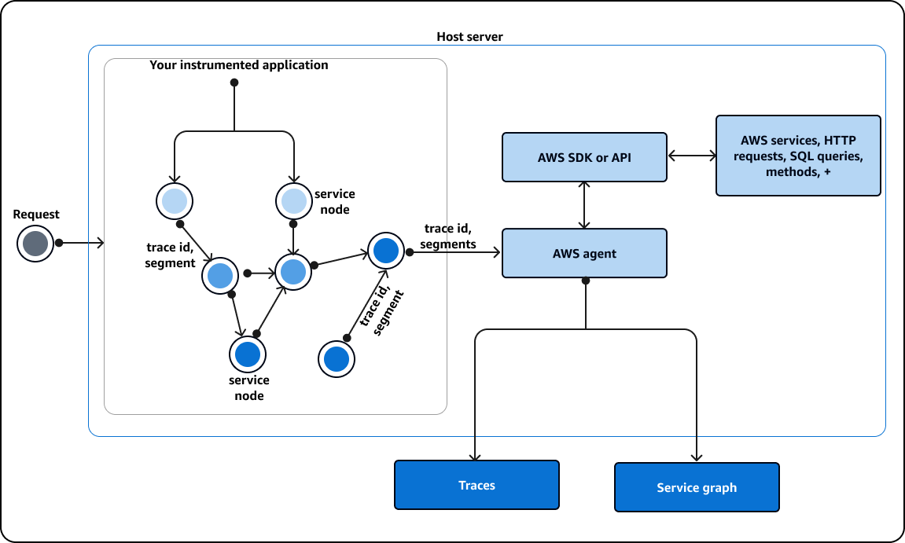
The application SDK records each call as a segment. It sends the segment to the X-Ray daemon, which listens on UDP. The daemon buffers the segments and uploads them to X-Ray in batches. X-Ray then builds the trace map from the segments.
Rule: Use X-Ray when the question asks where the time goes across API Gateway, Lambda, and the model call.
Trap: Using Logs Insights alone to build a timeline across services. Logs give lines from each service, while X-Ray gives the request path and the timing of each hop.
Source: https://docs.aws.amazon.com/xray/latest/devguide/aws-xray.html and course slide extract, pages 457 and 459 to 461.
Amazon Q Developer for GenAI error pattern recognition
Q Developer can answer questions about AWS resources, best practices, and error messages in chat. You can paste a log excerpt and ask what the error means. The answer is a reading aid. You still check it against the logs and the trace.
Fact: The Q Developer overview lists chat about AWS resources and operations. It does not name a GenAI-specific error pattern feature on the page fetched for this section. Treat pattern recognition as a chat task, not as a monitor.
Rule: Paste the exact log lines into Q Developer, then confirm the cause in the logs and the X-Ray trace.
Trap: Treating Q Developer as an alarm that watches the system. It answers when asked, and CloudWatch alarms and events handle the watching.
Source: https://docs.aws.amazon.com/amazonq/latest/qdeveloper-ug/what-is.html
X versus Y decisions
Each pair below has one decision tree, a three-row comparison, the question to ask, and the trap. Ask the question first. Use the comparison only to confirm the answer.
the answer"]
Figure: Each pair starts with the question, then the decision tree, then the comparison rows.
REST versus HTTP versus WebSocket for replies
through API Gateway| B["REST API with STREAM"] A -->|Usage plans or API
keys needed| B A -->|Simple proxy to
Lambda only| C["HTTP API"] A -->|Both sides send
messages anytime| D["WebSocket API"] D -->|Backend posts chunks
to connection| E["Management API callbacks"]
Figure: the API type follows the reply shape and the client need.
- Purpose: REST for streamed replies and the full feature set, HTTP for a simple proxy, WebSocket for two way messages.
- Input: REST and HTTP take request and response calls. WebSocket keeps a connection open for messages.
- Output or effect: REST can stream the body by STREAM. HTTP cannot. WebSocket sends frames to a connection.
The client keeps one WebSocket connection to the API. A route handler receives each message and calls the model. The handler posts each piece of the reply back to the connection, so the client shows the text as it arrives. The client code changes more than in the REST streaming design.
The question to ask yourself: does the reply need to stream through a plain HTTP call, or do both sides need a live connection?
Trap: Picking an HTTP API because the scenario says simple HTTP. The scenario then needs streaming, and HTTP API cannot stream the response.
Trap: Using a Lambda function URL for streaming inside a VPC. Function URLs do not support response streaming in a VPC, so use the SDK path with an interface endpoint.
Converse and ConverseStream versus InvokeModel
across models| B["Converse or ConverseStream"] A -->|Model specific body
is required| C["InvokeModel or the stream
variant"] B -->|Tool use and
guardrail config| D["Built into the request"] C -->|Large body in Step
Functions| E["S3 Input and Output fields"]
Figure: pick the call surface by the message shape and the model rules.
- Purpose: Converse gives one request shape for chat across supported models. InvokeModel sends the body that one model expects.
- Input: Converse takes messages and a configuration. InvokeModel takes a model-specific JSON body and content type.
- Output or effect: ConverseStream returns structured stream events. InvokeModelWithResponseStream returns the raw stream in the model format.
The question to ask yourself: does the application need one message format across models, or does it need the exact body that one model expects?
Trap: Using InvokeModel with a chat body for one model, then switching models later. Each model change needs new body code, while Converse keeps one shape.
Trap: Believing Converse makes any model work. The model must support messages, so check the model support list first.
Lambda asynchronous invocation versus SQS queue
returns"] -->|Caller needs only an
acceptance| B["Asynchronous Lambda
invocation"] A -->|Workers drain a
backlog at a set
rate| C["SQS queue with Lambda
consumers"] B -->|Failures must be
kept| D["On-failure destination"] C -->|Repeated failures| E["Dead-letter queue with
maxReceiveCount"]
Figure: one event for one function call versus a backlog drained by workers.
- Purpose: Asynchronous invocation hands one event to Lambda and returns. An SQS queue holds many messages for a set of consumers.
- Input: The caller uses the Event invocation type or the SDK. A producer uses SendMessage on the queue.
- Output or effect: Lambda retries and then sends the failure to a destination. SQS keeps the message until a consumer deletes it.
The question to ask yourself: does one event need one function call with a failure record, or does a backlog need to drain at a controlled rate?
Trap: Using a queue when the scenario only needs an event handed off and kept after failure. The on-failure destination covers that case with less code.
Trap: Setting the SQS visibility timeout shorter than the model call. The message returns while the first worker still runs, so a second worker starts the same job.
Source: https://docs.aws.amazon.com/lambda/latest/dg/invocation-async.html and https://docs.aws.amazon.com/AWSSimpleQueueService/latest/SQSDeveloperGuide/sqs-dead-letter-queues.html.
Standard versus Express Step Functions
minutes| B["Standard workflow"] A -->|Needs callback or
Distributed Map| B A -->|High volume and
under five minutes| C["Express workflow"] C -->|Idempotent steps
only| D["At-least-once or
at-most-once"]
Figure: duration, pause, and fan-out needs decide the workflow type.
- Purpose: Standard runs long, auditable, and exactly-once workflows. Express runs short, high-volume workflows.
- Input: Both start from events, API calls, or other services. Express synchronous runs can be called from API Gateway.
- Output or effect: Standard keeps history for up to 90 days. Express keeps history in CloudWatch Logs only when logging is on.
The question to ask yourself: does the work need a pause for a person, more than five minutes, or per item history?
Trap: Choosing Express for an approval gate. Express does not support the callback pattern, so the run cannot wait for a person.
Bedrock Flows versus Step Functions for prompt chains
steps visually| B["Bedrock Flows"] A -->|Waits retries or
audit needed| C["Step Functions"] B -->|Publish version and
alias| D["Application calls
InvokeFlow"] C -->|Optimized Bedrock
task per step| E["Callback or Map where
needed"]
Figure: visual chains for analysts, coded state machines for control and audit.
- Purpose: Flows connects prompts, models, and services in a visual builder. Step Functions runs coded states with retries and waits.
- Input: Flows takes a flow input and runs nodes in order. Step Functions takes an execution input with state data.
- Output or effect: Flows returns the flow output through an alias. Step Functions returns a final state output and a history.
The question to ask yourself: who changes the steps, and does the run need a pause or a per item retry?
Trap: Building a human approval in a flow and expecting the flow to wait for days. Use a Step Functions callback for that step.
AWS Agent Squad versus Strands Agents
question"] -->|One agent chooses
its tools| B["Strands Agents"] A -->|A router picks the
right agent| C["AWS Agent Squad"] B -->|Specialists called
as tools| D["Orchestrator agent in
Strands"] C -->|Shared context
across agents| E["Classifier and agent set"]
Figure: the tool loop of one agent versus the routing across agents.
- Purpose: Strands runs the reasoning and tool loop of an agent. Agent Squad routes a request to the right agent.
- Input: Strands takes a prompt and a set of tools. Agent Squad takes a user query and a set of agents.
- Output or effect: Strands returns the agent answer after its tool calls. Agent Squad returns the chosen agent answer.
The question to ask yourself: is the problem how one agent uses tools, or which agent should handle the request?
Trap: Using Agent Squad to run the tool loop of one agent. Routing and tool use belong to different layers.
Bedrock Data Automation versus custom model extraction
structured data"] -->|Mixed media with
managed output| B["Bedrock Data Automation"] A -->|Narrow task with
custom prompt logic| C["Custom model extraction"] B -->|Event trigger and
retries still needed| D["S3 event plus queue or
workflow"] C -->|Team owns parsing
and failures| E["More custom code to
maintain"]
Figure: the managed path for mixed media versus a custom extraction path.
- Purpose: BDA turns documents, images, video, and audio into structured output. Custom extraction uses your own prompts and parsing code.
- Input: BDA takes unstructured files through its API. Custom extraction takes text or images that your code prepares.
- Output or effect: BDA returns structured data for your systems. Custom extraction returns whatever your parser builds.
The question to ask yourself: does the team want the managed extraction path, or does it need logic that the managed path cannot express?
Trap: Sending scanned pages straight to a model with no extraction step. The model then has no text or fields to work with for the structured output.
CloudWatch Logs Insights versus X-Ray
or response say| B["CloudWatch Logs Insights"] A -->|Where did the time
go across hops| C["AWS X-Ray"] B -->|Filter and count by
field| D["Query results and patterns"] C -->|Trace map and
timeline| E["Slow hop identified"]
Figure: content evidence from logs versus timing evidence from traces.
- Purpose: Logs Insights searches log content. X-Ray shows the path and timing of one request.
- Input: Logs Insights takes log groups and a query. X-Ray takes traces from instrumented services.
- Output or effect: Logs Insights returns matching rows and patterns. X-Ray returns a trace map and a timeline.
The question to ask yourself: do you need the content of the calls, or the timing across the calls?
Trap: Using X-Ray to read the text of a prompt. X-Ray records the request path and timing, and the content belongs in the logs you control.
Read a long question
Each scenario below is written for this section. Constraint words are in bold. Each wrong option is removed by one reason. The answer is the option that keeps every constraint.
Figure: Each option is removed by one constraint or kept as the answer.
Scenario one: a reply that streams without a protocol change
A public tax help site shows an explanation while the model writes it. The site calls one REST route through API Gateway. Each explanation takes about a minute, and the security team freezes protocol changes this quarter.
Constraint words: while the model writes it, about a minute, freezes protocol changes.
- HTTP API with a Lambda proxy: removed, because the HTTP API type cannot stream the response.
- Buffered REST route with a 15-minute Lambda timeout: removed, because a buffered integration still stops at the integration timeout, 29 seconds by default.
- WebSocket route: removed, because it is a protocol change that the freeze blocks.
- REST proxy with STREAM and a Lambda that calls ConverseStream: kept, because it streams, runs past the limit, and keeps the route.
Answer: the REST proxy integration with STREAM transfer mode, and a Lambda function that reads ConverseStream and writes each chunk to the response.
Scenario two: an overnight batch with per item retries
A claims unit must summarize about forty thousand scanned files before the next business day. Each file needs its own retry, and one bad file must not stop the rest. The auditors also want the run history for each file.
Constraint words: before the next business day, its own retry, run history.
- One Lambda function that loops over every file: removed, because the 15-minute limit stops the loop and it gives no per item status.
- Express workflow with Distributed Map: removed, because Express runs for five minutes and does not support Distributed Map.
- API Gateway call per file from the claims app: removed, because each call waits and the integration limit still applies.
- Standard workflow with Distributed Map, a Catch per item, and Bedrock calls with S3 references: kept, because it meets retries, history, and the deadline.
Answer: a Standard Step Functions workflow with Distributed Map, extraction through BDA or a model call per item, and S3 references for large payloads.
Scenario three: a CRM update that must not run twice
An online ticket checkout returns a receipt at once. After checkout, the CRM needs a follow-up record, but the buyer does not need the CRM result. Failed CRM updates must stay for replay, and a retry must never create a second CRM task.
Constraint words: returns a receipt at once, does not need the CRM result, stay for replay, never create a second.
- RequestResponse invoke from checkout: removed, because the checkout waits for the CRM call.
- Checkout code that calls the CRM with inline retries: removed, because the checkout latency rises and the failure record is lost.
- SNS topic with one Lambda subscriber: removed, because it gives no failure store for replay.
- Asynchronous invoke with an on-failure destination to SQS and a CRM write keyed by the order ID: kept, because it meets every constraint.
Answer: asynchronous Lambda invocation, an SQS failure destination, and an idempotent CRM write. Store the full item in S3 when it may be large, since the event payload limit is Not in source.
Distractor patterns seen in the tests
These patterns repeat across wrong options. Each one uses a real service at the wrong hop. Learn the pattern, and you can reject an option even when the service name is new.
Figure: A real service can still be the wrong choice when it sits at the wrong hop.
- Right service, wrong layer. A longer Lambda timeout is offered for an API limit. The API integration limit still ends the request, so the function timeout does not help.
- Streaming on the wrong API type. An HTTP API is offered for a streamed reply. The response streaming setting exists only for REST APIs.
- Broadcast used as a buffer. SNS is offered to hold a backlog for a slow consumer. SNS delivers to subscribers, so a queue must hold the backlog.
- Delete versus replay. SQS is offered to replay old work. The consumer deletes each message after success, so the replay source is gone.
- Router mistaken for tool loop. Agent Squad is offered to run one agent tool loop. Routing and tool use are separate layers.
- Chat body for every model. InvokeModel with one model body is offered for a multi-model chat. Converse keeps one request shape across models.
- Removed control. An option is cheaper because it drops a retry rule, a dead-letter queue, or a token cap. The scenario names that control, so the option fails.
- Evidence in the wrong tool. X-Ray is offered to show prompt text, or Logs Insights is offered to show the timeline across hops. Each tool answers one kind of question.
Drill
Read each prompt, then cover the answer line. Say the reason before you read the answer.
Figure: The drill checks your reason against the rule or the trap in each answer line.
Prompt: A browser needs text as it is written, over a REST route, with no protocol change.
Rule: Use a REST API with STREAM transfer mode and a streaming Lambda, not an HTTP API.
Prompt: A model reply takes forty seconds. The team plans to raise only the Lambda timeout.
Trap: A buffered integration still stops at the integration timeout, 29 seconds by default. Only Regional and private REST APIs can request a higher value. Stream the reply or return a job ID.
Prompt: One event must start work in a function, and the failed event must stay for review.
Rule: Use asynchronous invocation with an on-failure destination such as SQS.
Prompt: A workflow must pause for a reviewer for several days and then resume.
Rule: Use a Standard Step Functions callback task that waits for a task token.
Prompt: An Express workflow is proposed for a human approval gate.
Trap: Express does not support the callback pattern. Use a Standard workflow.
Prompt: Ten thousand archived files need a summary each, with a retry per file and a run history.
Rule: Use a Standard workflow with Distributed Map and a per item Catch.
Prompt: A CRM update must not create two tasks when the same event arrives twice.
Rule: Key the CRM write on a stable ID, such as the order ID, so a repeat is a no-op.
Prompt: A public chatbot faces the internet and must block abusive traffic before it reaches the API.
Rule: Put CloudFront and WAF in front of the API, and keep the API authorizer.
Prompt: Analysts must change the order of three prompts and their conditions without code.
Rule: Use Bedrock Flows with a published version and an alias.
Prompt: A scanned bill with a mix of image and text must become structured fields for an ERP.
Rule: Use Bedrock Data Automation for the managed structured output, with an event trigger.
Prompt: A team asks which agent should answer a billing question, or which agent should call a tool.
Rule: A router such as Agent Squad picks the agent. Strands runs one agent tool loop.
Prompt: The team needs to know where the time goes across API Gateway, Lambda, and the model call.
Rule: Use X-Ray traces and the timeline, then check the logs for the content.
Prompt: A generated answer changes wording on every run, so the exact-match test fails.
Rule: Test fixed prompts with property checks and scores, not exact text.
Sources
Source: each URL below was fetched for this section with WebFetch. Image URLs were checked for HTTP 200 on the direct path.
docs"]
Figure: Facts in this task trace to AWS documentation, course slides, or a repository that is not AWS documentation.
- https://docs.aws.amazon.com/apigateway/latest/developerguide/response-transfer-mode.html
- https://docs.aws.amazon.com/apigateway/latest/developerguide/limits.html
- https://docs.aws.amazon.com/apigateway/latest/developerguide/api-gateway-import-api.html
- https://docs.aws.amazon.com/apigateway/latest/developerguide/websocket-api-chat-app.html
- https://docs.aws.amazon.com/lambda/latest/dg/configuration-response-streaming.html
- https://docs.aws.amazon.com/lambda/latest/dg/invocation-async.html
- https://docs.aws.amazon.com/lambda/latest/dg/invocation-async-error-handling.html
- https://docs.aws.amazon.com/lambda/latest/dg/configuration-timeout.html
- https://docs.aws.amazon.com/step-functions/latest/dg/connect-bedrock.html
- https://docs.aws.amazon.com/step-functions/latest/dg/concepts-standard-vs-express.html
- https://docs.aws.amazon.com/step-functions/latest/dg/connect-to-resource.html (image only)
- https://docs.aws.amazon.com/bedrock/latest/userguide/bda.html
- https://docs.aws.amazon.com/bedrock/latest/userguide/flows.html
- https://docs.aws.amazon.com/bedrock/latest/userguide/conversation-inference.html
- https://docs.aws.amazon.com/bedrock/latest/userguide/prompt-management.html
- https://docs.aws.amazon.com/bedrock/latest/userguide/vpc-interface-endpoints.html
- https://docs.aws.amazon.com/amplify/latest/userguide/welcome.html
- https://docs.aws.amazon.com/amazonq/latest/qdeveloper-ug/what-is.html
- https://docs.aws.amazon.com/AmazonCloudWatch/latest/logs/AnalyzingLogData.html
- https://docs.aws.amazon.com/xray/latest/devguide/aws-xray.html
- https://docs.aws.amazon.com/AWSSimpleQueueService/latest/SQSDeveloperGuide/sqs-dead-letter-queues.html
Source: course slide extract for this module, pages 59, 236 to 240, 257, 258, 431, 457 to 461, and 508 and 518. The Strands and Agent Squad facts also come from the awslabs agent-squad repository, which is not AWS documentation.